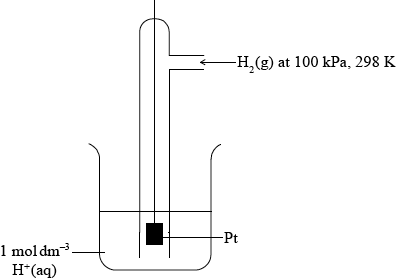
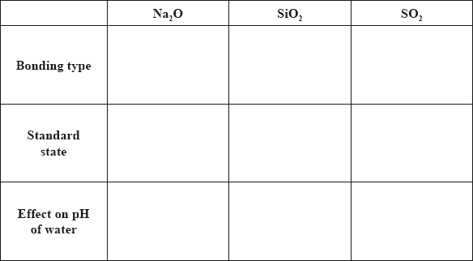
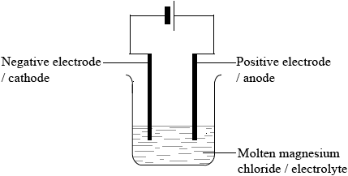
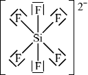
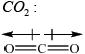
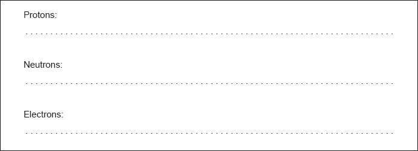

HL Paper 2
The Born-Haber cycle for MgO under standard conditions is shown below.

The values are shown in the table below.

Identify the processes represented by A, B and D in the cycle.
Define the enthalpy change, F.
Determine the value of the enthalpy change, E.
Define the enthalpy change C for the first value. Explain why the second value is significantly larger than the first.
The inter-ionic distance between the ions in NaF is very similar to that between the ions in MgO. Suggest with a reason, which compound has the higher lattice enthalpy value.
The standard enthalpy change of three combustion reactions is given below in kJ.
\[\begin{array}{*{20}{l}} {{\text{2}}{{\text{C}}_{\text{2}}}{{\text{H}}_{\text{6}}}{\text{(g)}} + {\text{7}}{{\text{O}}_{\text{2}}}{\text{(g)}} \to {\text{4C}}{{\text{O}}_{\text{2}}}{\text{(g)}} + {\text{6}}{{\text{H}}_{\text{2}}}{\text{O(l)}}}&{\Delta {H^\Theta } = - 3120} \\ {{\text{2}}{{\text{H}}_2}({\text{g)}} + {{\text{O}}_2}{\text{(g)}} \to {\text{2}}{{\text{H}}_2}{\text{O(l)}}}&{\Delta {H^\Theta } = - {\text{572}}} \\ {{{\text{C}}_2}{{\text{H}}_4}({\text{g)}} + {\text{3}}{{\text{O}}_2}{\text{(g)}} \to {\text{2C}}{{\text{O}}_2}{\text{(g)}} + 2{{\text{H}}_2}{\text{O(l)}}}&{\Delta {H^\Theta } = - {\text{1411}}} \end{array}\]
Based on the above information, calculate the standard change in enthalpy, \(\Delta {H^\Theta }\), for the following reaction.
\[{{\text{C}}_2}{{\text{H}}_6}({\text{g)}} \to {{\text{C}}_2}{{\text{H}}_4}({\text{g)}} + {{\text{H}}_2}{\text{(g)}}\]
Predict, stating a reason, whether the sign of \({\Delta {S^\Theta }}\) for the above reaction would be positive or negative.
Discuss why the above reaction is non-spontaneous at low temperature but becomes spontaneous at high temperatures.
Using bond enthalpy values, calculate \(\Delta {H^\Theta }\) for the following reaction.
\[{{\text{C}}_2}{{\text{H}}_6}({\text{g)}} \to {{\text{C}}_2}{{\text{H}}_4}({\text{g)}} + {{\text{H}}_2}{\text{(g)}}\]
Suggest with a reason, why the values obtained in parts (b) (i) and (b) (iv) are different.
Markscheme
A: sublimation/atomization;
B: atomization/half dissociation enthalpy;
D: (sum of 1st and 2nd) electron affinity;
Do not accept vaporization for A and B.
Accept \(\Delta {H_{AT}}\)\( \cdot \) or \(\Delta {H_{EA}}\).
enthalpy change when one mole of the compound is formed from its elements (in their standard states);
under standard conditions / 25 °C/298 K and 1 atm/\({\text{101.3 kPa/1.01}} \times {\text{105 Pa}}\);
\( - 602 = 150 + 248 + 2186 + 702 + E\);
\( - {\text{3888 (kJ}}\,{\text{mo}}{{\text{l}}^{ - 1}}{\text{)}}\);
Do not allow 3889 (given in data booklet).
Allow 3888 (i.e no minus sign).
Award [2] for the correct final answer.
energy required to remove one electron;
from an atom in its gaseous state;
electron removed from a positive ion;
decrease in electron-electron repulsion / increase in nucleus-electron attraction;
MgO;
double ionic charge / both ions carry +2 and –2 charge/greater charge compared to +1 and –1;
\[\begin{array}{*{20}{l}} {\left( {{{\text{C}}_2}{{\text{H}}_6}{\text{(g)}} + {\text{3}}\frac{1}{2}{{\text{O}}_2}{\text{(g)}} \to {\text{2C}}{{\text{O}}_2}{\text{(g)}} + {\text{3}}{{\text{H}}_2}{\text{O(l)}}} \right)}&{\Delta {H^\Theta } = - {\text{1560;}}} \\ {\left( {{{\text{H}}_2}{\text{O(l)}} \to {{\text{H}}_2}{\text{(g)}} + \frac{1}{2}{{\text{O}}_2}{\text{(g)}}} \right)}&{\Delta {H^\Theta } = + {\text{286;}}} \\ {\left( {{\text{2C}}{{\text{O}}_2}{\text{(g)}} + {\text{2}}{{\text{H}}_2}{\text{O(l)}} \to {{\text{C}}_2}{{\text{H}}_4}{\text{(g)}} + {\text{3}}{{\text{O}}_2}{\text{(g)}}} \right)}&{\Delta {H^\Theta } = + {\text{1411;}}} \\ {\left( {{{\text{C}}_2}{{\text{H}}_6}{\text{(g)}} \to {{\text{C}}_2}{{\text{H}}_4}{\text{(g)}} + {{\text{H}}_2}{\text{(g)}}} \right)}&{\Delta {H^\Theta } = + {\text{137 (kJ);}}} \end{array}\]
Allow other correct methods.
Award [2] for –137.
Allow ECF for the final marking point.
positive;
increase in number of moles of gas;
at low temperature, \({\Delta {H^\Theta }}\) is positive and \({\Delta G}\) is positive;
at high temperature, factor \({\text{T}}\Delta {S^\Theta }\) predominates and \({\Delta G}\) is negative;
Bonds broken (1C–C, 6C–H, or 1C–C, 2C–H) = 2825/1173;
Bonds made (1C=C, 1H–H, 4C–H) = 2700/1048;
+125 (kJ);
Allow 125 but not –125 (kJ ) for the final mark.
Award [3] for the correct final answer.
bond enthalpy values are average values;
Examiners report
This was the second most popular question and in general candidates demonstrated a good understanding of the Born Haber cycle. Some candidates identified the process A as vaporization instead of atomization.
Most candidates correctly stated the definition of enthalpy change of formation although some omitted to specify the standard conditions.
The majority of candidates correctly calculated the lattice enthalpy value.
The definition of the first ionization energy was stated correctly by most candidates but in a few cases the term gaseous state was missing.
The compound with higher lattice enthalpy was correctly identified including the reason.
The majority of candidates manipulated the thermo-chemical equations and calculated the correct answer of +137 kJ although some reversed the sign.
The explanation for why the reaction was non-spontaneous at low temperature but became spontaneous at high temperature was not always precise and deprived many candidates of at least one mark.
The bond enthalpy calculation had the usual mistakes of using the wrong value from the data booklet, bond making minus bond breaking and –125 kJ instead of +125 kJ.
Table 8 of the Data Booklet shows the atomic and ionic radii of the elements.
Describe and explain the trend in atomic radius across period 3.
A student formulates the following hypothesis: “If phosphorus were to form a positive ion, \({{\text{P}}^{3 + }}\), its ionic radius would probably be between \(110 \times {10^{ - 12}}{\text{ m}}\) and \(212 \times {10^{ - 12}}{\text{ m}}\).” Evaluate this hypothesis.
Markscheme
decreases (from left to right/across period 3);
same number of shells/energy levels / shielding remains the same;
number of protons/nuclear charge increases so attraction of nucleus on outer electrons increases / OWTTE;
hypothesis is wrong since ionic radius should be smaller than atomic radius/\(110 \times {10^{ - 12}}{\text{ m}}\);
greater attraction of the nucleus on outer electrons / effective charge of nucleus greater / repulsive forces between electrons smaller;
Examiners report
The trend in atomic radius was generally correctly identified (although some seemed to use ionic radius data) but many tried to explain in terms of electronegativity.
Part (b) was felt to be challenging and it required calm and logical thought with a clear explanation; many realized that the hypothesis was wrong but very few could explain why.
Oxidation and reduction can be defined in terms of electron transfer or oxidation numbers.
A reactivity series can be experimentally determined by adding the metals W, X, Y and Z to solutions of these metal ions. The following reactions were observed:
\({{\text{W}}^{2 + }}{\text{(aq)}} + {\text{X(s)}} \to {\text{W(s)}} + {{\text{X}}^{2 + }}{\text{(aq)}}\)
\({\text{Y(s)}} + {{\text{W}}^{2 + }}{\text{(aq)}} \to {{\text{Y}}^{2 + }}{\text{(aq)}} + {\text{W(s)}}\)
\({{\text{Z}}^{2 + }}{\text{(aq)}} + {\text{W(s)}} \to {\text{Z(s)}} + {{\text{W}}^{2 + }}{\text{(aq)}}\)
\({\text{Y(s)}} + {{\text{X}}^{2 + }}{\text{(aq)}} \to {{\text{Y}}^{2 + }}{\text{(aq)}} + {\text{X(s)}}\)
A student carries out the electrolysis of aqueous potassium iodide, KI, using inert electrodes.
Three electrolytic cells were set up in series (one cell after the other), as shown below.
All of the solutions had a concentration of \({\text{1.00 mol}}\,{\text{d}}{{\text{m}}^{ - 3}}\).

Alcohols with the molecular formula \({{\text{C}}_{\text{4}}}{{\text{H}}_{\text{9}}}{\text{OH}}\) occur as four structural isomers. Three of the isomers can be oxidized with acidified potassium dichromate solution to form compounds with the molecular formula \({{\text{C}}_{\text{4}}}{{\text{H}}_{\text{8}}}{\text{O}}\).
(i) Deduce the half-equation for the oxidation of the alcohol \({{\text{C}}_{\text{4}}}{{\text{H}}_{\text{9}}}{\text{OH}}\).
(ii) Deduce the overall equation for the redox reaction.
(iii) Two of the isomers with the molecular formula \({{\text{C}}_{\text{4}}}{{\text{H}}_{\text{9}}}{\text{OH}}\) can be oxidized further to form compounds with the molecular formula \({{\text{C}}_{\text{4}}}{{\text{H}}_{\text{8}}}{{\text{O}}_{\text{2}}}\). Deduce the structural formulas of these two isomers.
(iv) One isomer cannot be oxidized by acidified potassium dichromate solution.
Deduce its structural formula, state its name and identify it as a primary, secondary or tertiary alcohol.
Name:
Alcohol:
(v) All isomers of the alcohol \({{\text{C}}_{\text{4}}}{{\text{H}}_{\text{9}}}{\text{OH}}\) undergo complete combustion. State an equation for the complete combustion of \({{\text{C}}_{\text{4}}}{{\text{H}}_{\text{9}}}{\text{OH}}\).
(i) Deduce the order of reactivity of these four metals, from the least to the most reactive.
(ii) A voltaic cell is made by connecting a half-cell of X in \({\text{XC}}{{\text{l}}_{\text{2}}}{\text{(aq)}}\) to a half-cell of Z in \({\text{ZC}}{{\text{l}}_{\text{2}}}{\text{(aq)}}\). Deduce the overall equation for the reaction taking place when the cell is operating.
(iii) The standard electrode potential for \({{\text{Z}}^{2 + }}{\text{(aq)}} + {\text{2}}{{\text{e}}^ - } \rightleftharpoons {\text{Z(s)}}\) is \( + {\text{0.20 V}}\). State which species is oxidized when this half-cell is connected to a standard hydrogen electrode.
(iv) Describe the standard hydrogen electrode including a fully labelled diagram.
(i) State the half-equation for the reaction that occurs at each electrode.
Positive electrode (anode):
Negative electrode (cathode):
(ii) Suggest, giving a reason, what would happen if the electrodes were changed to aluminium.
(i) Determine the mass of copper produced at one of the electrodes in cell 2 if the tin electrode in cell 1 decreased in mass by 0.034 g.
(ii) Compare the colour and the pH of the solutions in cells 2 and 3 after the current has been flowing for one hour.
(iii) Explain your answer given for part (d) (ii).
Colour:
pH:
Markscheme
(i) \({{\text{C}}_4}{{\text{H}}_9}{\text{OH(l)}} \to {{\text{C}}_4}{{\text{H}}_8}{\text{O(l)}} + {\text{2}}{{\text{H}}^ + }{\text{(aq)}} + {\text{2}}{{\text{e}}^ - }\);
Ignore state symbols.
(ii) \({\text{3}}{{\text{C}}_4}{{\text{H}}_9}{\text{OH(l)}} + {\text{C}}{{\text{r}}_2}{\text{O}}_7^{2 - }{\text{(aq)}} + {\text{8}}{{\text{H}}^ + }{\text{(aq)}} \to {\text{3}}{{\text{C}}_4}{{\text{H}}_8}{\text{O(l)}} + {\text{2C}}{{\text{r}}^{3 + }}{\text{(aq)}} + {\text{7}}{{\text{H}}_2}{\text{O(l)}}\);
Ignore state symbols.
(iii) \({\text{C}}{{\text{H}}_3}{\text{C}}{{\text{H}}_2}{\text{C}}{{\text{H}}_2}{\text{C}}{{\text{H}}_2}{\text{OH}}\);
\({{\text{(C}}{{\text{H}}_3}{\text{)}}_2}{\text{CHC}}{{\text{H}}_2}{\text{OH}}\);
Accept full or condensed structural formulas.
(iv) \({{\text{(C}}{{\text{H}}_3}{\text{)}}_3}{\text{COH}}\);
2-methylpropan-2-ol;
Allow 2-methyl-2-propanol, methylpropan-2-ol, methyl-2-propanol.
tertiary;
(v) \({{\text{C}}_4}{{\text{H}}_9}{\text{OH}} + {\text{6}}{{\text{O}}_2} \to {\text{4C}}{{\text{O}}_2} + {\text{5}}{{\text{H}}_2}{\text{O}}/{{\text{(C}}{{\text{H}}_3}{\text{)}}_3}{\text{COH}} + {\text{6}}{{\text{O}}_2} \to {\text{4C}}{{\text{O}}_2} + {\text{5}}{{\text{H}}_2}{\text{O}}\)
correct reactants and products;
correct balancing;
(i) \({\text{Z}} < {\text{W}} < {\text{X}} < {\text{Y}}\);
Accept Y > X > W > Z.
(ii) \({\text{X(s)}} + {{\text{Z}}^{2 + }}{\text{(aq)}} \to {{\text{X}}^{2 + }}{\text{(aq)}} + {\text{Z(s)}}\);
Ignore state symbols.
Accept X(s) + ZCl2(aq) \( \to \) XCl2(aq) + Z(s).
(iii) \({{\text{H}}_{\text{2}}}{\text{(g)}}\)/hydrogen;
(iv) diagram showing gas, solution and solid electrode;
For example,

This diagram scores [3].
\({\text{1 mol}}\,{\text{d}}{{\text{m}}^{ - 3}}{\text{ }}{{\text{H}}^ + }{\text{(aq)}}\) and Pt;
Allow 1 mol L–1 or 1 M.
Allow 1 mol dm–3 HCl (aq) or other source of 1mol dm–3 H+(aq) ions.
100 kPa/\({\text{1}}{{\text{0}}^{\text{5}}}{\text{ Pa}}\)/1 bar (\({{\text{H}}_2}{\text{(g)}}\) pressure) and 298K / 25 °C;
Ignore state symbols throughout.
Allow 1.01 \( \times \) 105 Pa/1 atm.
(i) Positive electrode (anode):
\({{\text{I}}^ - }{\text{(aq)}} \to \frac{1}{2}{{\text{I}}_2}{\text{(aq)}} + {{\text{e}}^ - }\);
Accept correct equation involving 2 mols of I–.
Negative electrode (cathode):
\({{\text{H}}_2}{\text{O(l)}} + {{\text{e}}^ - } \to \frac{1}{2}{{\text{H}}_2}{\text{(g)}} + {\text{O}}{{\text{H}}^ - }{\text{(aq)}}/{{\text{H}}^ + }{\text{(aq)}} + {{\text{e}}^ - } \to \frac{1}{2}{{\text{H}}_2}{\text{(g)}}/\)
\({{\text{H}}_3}{{\text{O}}^ + }{\text{(aq)}} + {{\text{e}}^ - } \to {{\text{H}}_2}{\text{O(l)}} + \frac{1}{2}{{\text{H}}_2}{\text{(g)}}\);
Award [1 max] if correct equations are given at the wrong electrodes.
Ignore state symbols.
Allow e instead of e–.
Penalize equilibrium sign once only.
Accept correct equation involving 2 mols of H+.
(ii) aluminium will be oxidized (instead of \({{\text{I}}^ - }\)) at positive electrode (anode);
aluminium is a reactive metal / oxidation of aluminium has a positive \({E^\Theta }\) /
aluminium is higher on the reactivity series than \({{\text{I}}^ - }\) / OWTTE;
(i) \({{\text{n}}_{{\text{Sn}}}} = {{\text{n}}_{{\text{Cu}}}} = 2.86 \times {10^{ - 4}}/0.000286{\text{ (mol)}}\);
\({\text{m(Cu)}} = 2.86 \times {10^{ - 4}} \times 63.55 = 0.0182{\text{ (g)}}\);
(ii) blue colour persists in second cell and fades in third cell;
pH does not change in second cell and decreases in third cell;
Award [1 max] if both colour and pH are correctly stated for one only of either second or third cell.
(iii) Colour:
positive Cu electrode (anode) is oxidized to maintain colour in second cell / \({\text{Cu(s)}} \to {\text{C}}{{\text{u}}^{2 + }}{\text{(aq)}} + {\text{2}}{{\text{e}}^ - }\);
pH:
in third cell, \({{\text{H}}^ + }\) ions are produced as water is oxidized at positive electrode (anode) / \({{\text{H}}_2}{\text{O(l)}} \to \frac{1}{2}{{\text{O}}_2}{\text{(g)}} + {\text{2}}{{\text{H}}^ + }{\text{(aq)}} + {\text{2}}{{\text{e}}^ - }\) / solution becomes acidic as hydroxide ions are oxidized at positive electrode (anode) / \({\text{2O}}{{\text{H}}^ - }{\text{(aq)}} \to \frac{1}{2}{{\text{O}}_2}{\text{(g)}} + {{\text{H}}_2}{\text{O(l)}} + {\text{2}}{{\text{e}}^ - }\);
Ignore state symbols.
Examiners report
Most candidates attempted writing half reactions, but few got them correct in a(i), a(ii), b(ii), c(i) and d(iii). The structure and conditions for the standard hydrogen electrode produced a range of marks, and there was a significant minority who drew two half cells. The importance of the nature of the electrodes was hardly ever explained, if comments about the inert nature of aluminium due to its oxide coating were mentioned they would have been given credit. Once again the inability to describe and then explain the processes happening during the electrolysis of copper sulphate was apparent.
Most candidates attempted writing half reactions, but few got them correct in a(i), a(ii), b(ii), c(i) and d(iii). The structure and conditions for the standard hydrogen electrode produced a range of marks, and there was a significant minority who drew two half cells. The importance of the nature of the electrodes was hardly ever explained, if comments about the inert nature of aluminium due to its oxide coating were mentioned they would have been given credit. Once again the inability to describe and then explain the processes happening during the electrolysis of copper sulphate was apparent.
Most candidates attempted writing half reactions, but few got them correct in a(i), a(ii), b(ii), c(i) and d(iii). The structure and conditions for the standard hydrogen electrode produced a range of marks, and there was a significant minority who drew two half cells. The importance of the nature of the electrodes was hardly ever explained, if comments about the inert nature of aluminium due to its oxide coating were mentioned they would have been given credit. Once again the inability to describe and then explain the processes happening during the electrolysis of copper sulphate was apparent.
Most candidates attempted writing half reactions, but few got them correct in a(i), a(ii), b(ii), c(i) and d(iii). The structure and conditions for the standard hydrogen electrode produced a range of marks, and there was a significant minority who drew two half cells. The importance of the nature of the electrodes was hardly ever explained, if comments about the inert nature of aluminium due to its oxide coating were mentioned they would have been given credit. Once again the inability to describe and then explain the processes happening during the electrolysis of copper sulphate was apparent.
Bromine is a member of group 7, the halogens.
Iron is a transition metal.
Freshly prepared iron(II) bromide can be electrolysed both in the liquid state and in aqueous solution.
Explain the trend in reactivity of the halogens.
Deduce, using equations where appropriate, if bromine reacts with sodium chloride solution and with sodium iodide solution.
Describe the bonding in metals and explain their malleability.
List three characteristic properties of transition elements.
Identify the type of bonding between iron and cyanide in \({{\text{[Fe(CN}}{{\text{)}}_{\text{6}}}{\text{]}}^{3 - }}\).
Deduce the oxidation number of iron in \({{\text{[Fe(CN}}{{\text{)}}_{\text{6}}}{\text{]}}^{3 - }}\).
Draw the abbreviated orbital diagram for an iron atom using the arrow-in-box notation to represent electrons.
Draw the abbreviated orbital diagram for the iron ion in [Fe(CN)6]3– using the arrow-in-box notation to represent electrons.
Describe, using a diagram, the essential components of an electrolytic cell.
Describe the two ways in which current is conducted in an electrolytic cell.
Predict and explain the products of electrolysis of a dilute iron(II) bromide solution.
Identify another product that is formed if the solution of iron(II) bromide is concentrated.
Explain why this other product is formed.
Markscheme
reactivity decreases down group;
as atomic radius increases / more electron shells;
attraction of nucleus on electrons decreases / electron affinity decreases;
Accept opposite argument for “up the group”.
no reaction with NaCl;
\({\text{B}}{{\text{r}}_2}{\text{(aq)}} + {\text{2NaI(aq)}} \to {\text{2NaBr(aq)}} + {{\text{I}}_2}{\text{(aq)}}\);
Accept ionic equation.
Ignore state symbols.
(electrostatic attraction between a) lattice of positive ions/cations and delocalized/sea of electrons;
Accept suitable diagram.
atoms/ions/layers (of positive ions) can slide over each other / OWTTE;
without change in the bonding forces / OWTTE;
variable oxidation numbers/valency
form complex (ions)
form coloured compounds/ions
catalytic (behaviour)
Award [2] for any three, [1] for any two.
dative (covalent)/coordinate;
III / \( + 3\);
Penalize incorrect format such as 3+ only if not penalized in 4 (b).

Penalise missing [Ar] only once in (v) and (vi).
Do not accept full orbital diagram; penalise only once in (v) and (vi).
Accept full or half-arrows in (v) and (vi).
Ignore absence of labels 4s and 3d.
 ;
;
Accept empty 4s box in (vi).
No ECF from (iv).

clear diagram containing all elements (power supply, connecting wires,
electrodes, container and electrolyte);
Accept power supply if shown as conventional long/short lines (as in diagram above) or clearly labelled DC power supply.
labelled positive electrode/anode and negative electrode/cathode;
Accept positive and negative by correct symbols near power supply.
labelled electrolyte/FeBr2(l)/FeBr2(aq);
State must be included for FeBr2.
Electrolyte: positive ions/cations move to negative electrode/cathode and negative ions/anions to positive electrode/anode;
Conductors: electrons flow from negative pole of battery to positive pole of battery / OWTTE;
Look at diagram in (i) for possible clarification of electron flow.
Award [1 max] for “electrons in wire/external circuit and ions in solution”.
Negative electrode/cathode:
\({{\text{H}}_{\text{2}}}\);
\({E^\Theta }{\text{(}}{{\text{H}}_{\text{2}}}{\text{)}}\) is less negative than \({E^\Theta }{\text{(Fe)}}\) / Fe is more reactive than \({{\text{H}}_{\text{2}}}\) / \({{\text{H}}_{\text{2}}}\) is lower in reactivity series / \({{\text{H}}^ + }\) more easily reduced than Fe2+ / OWTTE;
Positive electrode/anode:
\({{\text{O}}_{\text{2}}}\);
\({E^\Theta }{\text{(}}{{\text{O}}_{\text{2}}}{\text{)}}\) is less positive than \({E^\Theta }{\text{(B}}{{\text{r}}_{\text{2}}}{\text{)}}\) / in a dilute \({\text{B}}{{\text{r}}^ - }\) solution \({\text{O}}{{\text{H}}^ - }{\text{/}}{{\text{H}}_{\text{2}}}{\text{O}}\) is
preferably discharged / OWTTE;
Award [3 max] if electrodes reversed or omitted.
\({\text{B}}{{\text{r}}_{\text{2}}}\);
Accept Fe.
\({\text{2B}}{{\text{r}}^ - } \rightleftharpoons {\text{B}}{{\text{r}}_2} + {\text{2}}{{\text{e}}^ - }\) shifts to the right;
Accept similar reason for Fe.
Examiners report
This was the least popular of the Section B questions. In (a) (i) the trend was generally correctly identified but the reasons were not clear, many confusing electronegativity with electron affinity. Most knew about the reactions (or lack thereof) of bromine but the equations were sometimes unbalanced or included halogen atoms rather than molecules.
This was the least popular of the Section B questions. In (a) (i) the trend was generally correctly identified but the reasons were not clear, many confusing electronegativity with electron affinity. Most knew about the reactions (or lack thereof) of bromine but the equations were sometimes unbalanced or included halogen atoms rather than molecules.
There was a tendency to describe the bonding of metals in terms of nuclei rather than cations and malleability was not well understood.
The properties in (b) (ii) were surprisingly poor. Many suggested that the metals themselves are coloured rather than the compounds, for instance.
The bonding in (iii) was not well known but the oxidation number was generally answered correctly.
In (v), some candidates gave the full orbital diagram, some omitted [Ar] – and some just got it wrong!
The diagrams in (c) were poorly presented and often inaccurate (much confusion with a voltaic cell) and there was little understanding of how current was transmitted.
The diagrams in (c) were poorly presented and often inaccurate (much confusion with a voltaic cell) and there was little understanding of how current was transmitted.
In (iii), few candidates correctly predicted the products of electrolysis of dilute iron bromide, with many seeming to ignore the presence of hydrogen ions/hydroxide ions/water; correct explanations in terms of electrode potentials or preferential discharge were rare.
In (iii), few candidates correctly predicted the products of electrolysis of dilute iron bromide, with many seeming to ignore the presence of hydrogen ions/hydroxide ions/water; correct explanations in terms of electrode potentials or preferential discharge were rare. Despite this, bromine was often correctly identified in (iv).
In (v), few understood the impact of concentrating the electrolyte.
Calcium nitrate contains both covalent and ionic bonds.
Nitrogen also forms oxides, which are atmospheric pollutants.
State the formula of both ions present and the nature of the force between these ions.
Ions:
Nature of force:
State which atoms are covalently bonded.
Bonding in the nitrate ion involves electron delocalization. Explain the meaning of electron delocalization and how it affects the ion.
Outline the source of these oxides.
State one product formed from their reaction with water.
State one environmental problem caused by these atmospheric pollutants.
Markscheme
\({\text{C}}{{\text{a}}^{2 + }}\) and \({\text{NO}}_3^ - \);
electrostatic (attraction);
Do not accept ionic.
nitrogen/N and oxygen/O;
Do not accept nitrate/NO3–.
Accept atoms in nitrate/NO3–
pi/\(\underline \pi \)-electrons shared by more than two atoms/nuclei / a pi/\(\underline \pi \)-bond/overlapping p-orbitals that extends over more than two atoms/nuclei;
all (N–O) bonds equal length/strength/bond-order / charge on all oxygen/O atoms equal / increases stability/lowers PE (of the ion);
Accept a diagram that clearly shows one or both points.
produced by high temperature combustion;
Accept combustion/jet/car engines / car exhaust/emissions / lightning / action of bacteria/microorganisms.
Do not accept combustion/burning, cars, planes, jets, factories, power plants etc.
nitric acid/\({\text{HN}}{{\text{O}}_{\text{3}}}\) / nitrous acid/nitric(III) acid/\({\text{HN}}{{\text{O}}_{\text{2}}}\);
Accept “form acidic solutions / acid rain”.
acid deposition/rain / respiratory problems / corrosion problems / decomposition of ozone layer / photochemical smog / acidification/pollution of lakes / damage to plants/ trees;
Accept “acid rain” in either part (ii) or part (iii) but not both.
Do not accept air pollution.
Examiners report
It was distressing how many students taking HL Chemistry (over 50%?) do not know the formula of the nitrate ion! Many students also gave the type of bonding present between the ions, rather than the nature of the force asked for, though almost all could correctly identify the covalently bonded atoms. Hardly any could explain delocalization in terms of the overlap of p-orbitals, or the extension of a \(\pi \)-bond, over more than two atoms, though its effect on structure and stability were better known. In part (c), which tested Aim 8 of the syllabus, most managed to gain some of the marks available for atmospheric pollution from oxides of nitrogen. Inevitably, owing to some overlap in assessment statements these concepts would be more familiar to those studying the Environmental Chemistry option, but undoubtedly studying other options assists in other areas, such as organic chemistry.
It was distressing how many students taking HL Chemistry (over 50%?) do not know the formula of the nitrate ion! Many students also gave the type of bonding present between the ions, rather than the nature of the force asked for, though almost all could correctly identify the covalently bonded atoms. Hardly any could explain delocalization in terms of the overlap of p-orbitals, or the extension of a \(\pi \)-bond, over more than two atoms, though its effect on structure and stability were better known. In part (c), which tested Aim 8 of the syllabus, most managed to gain some of the marks available for atmospheric pollution from oxides of nitrogen. Inevitably, owing to some overlap in assessment statements these concepts would be more familiar to those studying the Environmental Chemistry option, but undoubtedly studying other options assists in other areas, such as organic chemistry.
It was distressing how many students taking HL Chemistry (over 50%?) do not know the formula of the nitrate ion! Many students also gave the type of bonding present between the ions, rather than the nature of the force asked for, though almost all could correctly identify the covalently bonded atoms. Hardly any could explain delocalization in terms of the overlap of p-orbitals, or the extension of a \(\pi \)-bond, over more than two atoms, though its effect on structure and stability were better known. In part (c), which tested Aim 8 of the syllabus, most managed to gain some of the marks available for atmospheric pollution from oxides of nitrogen. Inevitably, owing to some overlap in assessment statements these concepts would be more familiar to those studying the Environmental Chemistry option, but undoubtedly studying other options assists in other areas, such as organic chemistry.
It was distressing how many students taking HL Chemistry (over 50%?) do not know the formula of the nitrate ion! Many students also gave the type of bonding present between the ions, rather than the nature of the force asked for, though almost all could correctly identify the covalently bonded atoms. Hardly any could explain delocalization in terms of the overlap of p-orbitals, or the extension of a \(\pi \)-bond, over more than two atoms, though its effect on structure and stability were better known. In part (c), which tested Aim 8 of the syllabus, most managed to gain some of the marks available for atmospheric pollution from oxides of nitrogen. Inevitably, owing to some overlap in assessment statements these concepts would be more familiar to those studying the Environmental Chemistry option, but undoubtedly studying other options assists in other areas, such as organic chemistry.
It was distressing how many students taking HL Chemistry (over 50%?) do not know the formula of the nitrate ion! Many students also gave the type of bonding present between the ions, rather than the nature of the force asked for, though almost all could correctly identify the covalently bonded atoms. Hardly any could explain delocalization in terms of the overlap of p-orbitals, or the extension of a \(\pi \)-bond, over more than two atoms, though its effect on structure and stability were better known. In part (c), which tested Aim 8 of the syllabus, most managed to gain some of the marks available for atmospheric pollution from oxides of nitrogen. Inevitably, owing to some overlap in assessment statements these concepts would be more familiar to those studying the Environmental Chemistry option, but undoubtedly studying other options assists in other areas, such as organic chemistry.
It was distressing how many students taking HL Chemistry (over 50%?) do not know the formula of the nitrate ion! Many students also gave the type of bonding present between the ions, rather than the nature of the force asked for, though almost all could correctly identify the covalently bonded atoms. Hardly any could explain delocalization in terms of the overlap of p-orbitals, or the extension of a \(\pi \)-bond, over more than two atoms, though its effect on structure and stability were better known. In part (c), which tested Aim 8 of the syllabus, most managed to gain some of the marks available for atmospheric pollution from oxides of nitrogen. Inevitably, owing to some overlap in assessment statements these concepts would be more familiar to those studying the Environmental Chemistry option, but undoubtedly studying other options assists in other areas, such as organic chemistry.
A sample of magnesium contains three isotopes: magnesium-24, magnesium-25 and magnesium-26, with abundances of 77.44%, 10.00% and 12.56% respectively.
A graph of the successive ionization energies of magnesium is shown below.

The graph below shows pressure and volume data collected for a sample of carbon dioxide gas at 330 K.

(i) Calculate the relative atomic mass of this sample of magnesium correct to two decimal places.
(ii) Predict the relative atomic radii of the three magnesium isotopes, giving your reasons.
(i) Explain the increase in ionization energy values from the 3rd to the 8th electrons.
(ii) Explain the sharp increase in ionization energy values between the 10th and 11th electrons.
(i) Magnesium reacts with oxygen to form an ionic compound, magnesium oxide. Describe how the ions are formed, and the structure and bonding in magnesium oxide.
(ii) Carbon reacts with oxygen to form a covalent compound, carbon dioxide. Describe what is meant by a covalent bond.
(iii) State why magnesium and oxygen form an ionic compound while carbon and oxygen form a covalent compound.
(i) Predict the type of hybridization of the carbon and oxygen atoms in \({\text{C}}{{\text{O}}_{\text{2}}}\).
(ii) Sketch the orbitals of an oxygen atom in \({\text{C}}{{\text{O}}_{\text{2}}}\) on the energy level diagram provided, including the electrons that occupy each orbital.

(iii) Define the term electronegativity.
(iv) Explain why oxygen has a larger electronegativity than carbon.
(i) Draw a best-fit curve for the data on the graph.
(ii) Use the data point labelled X to determine the amount, in mol, of carbon dioxide gas in the sample.
(i) Most indicators are weak acids. Describe qualitatively how indicators work.
(ii) Identify a suitable indicator for a titration between a weak acid and a strong base, using Table 16 of the Data Booklet.
Markscheme
(i) \(\left( {\frac{{(77.44 \times 24) + (10.00 \times 25) + (12.56 \times 26)}}{{100}}} \right)\);
24.35;
Award [2] for correct final answer.
Two decimal places are required for M2.
Do not award any marks for 24.31 without showing method (as the value can be copied from the Data Booklet).
(ii) same atomic radii / 160 pm;
isotopes only differ by number of neutrons/size of nucleus / radius determined by electron shells and number of protons / OWTTE;
Accept neutrons do not affect distance of electrons / OWTTE.
(i) decreasing repulsion between electrons / radius decreases as electrons are removed;
Accept increasing positive charge on ion attracts electrons more strongly.
(ii) 10th electron is in second energy level/shell while 11th electron is in first energy level/shell / 10th is removing electron from electronic arrangement 2,1 while 11th ionization energy is removing electron from electronic arrangement 2;
11th electron removed is much closer to the nucleus / 11th electron removed from a (much) lower energy level/shell;
Accept opposite statement for 10th electron.
(i) magnesium (atom) gives two electrons to oxygen (atom) / oxygen (atom) takes two electrons from magnesium (atom) / magnesium (atom) loses two electrons and oxygen (atom) gains two electrons;
3-dimensional/3-D arrangement of ions / lattice of ions;
(electrostatic) attraction between oppositely charged ions/\({\text{M}}{{\text{g}}^{2 + }}\) and \({{\text{O}}^{2 - }}\);
(ii) electrostatic attraction between a pair of electrons and (positively charged) nuclei;
Accept a/two pairs of shared electrons.
(iii) difference in electronegativity is larger between Mg and O/smaller between C and O;
Accept reference to a numerical value of difference in electronegativity such as above and below 1.80.
(i) C: sp hybridization;
O: \({\text{s}}{{\text{p}}^{\text{2}}}\) hybridization;
Award [1] if the answer is sp without specifying C or O atoms.
(ii) 
three \({\text{s}}{{\text{p}}^{\text{2}}}\) orbitals and one p-orbital at higher energy;
\({\text{s}}{{\text{p}}^{\text{2}}}\) orbitals contain: two, two and one electron and p-orbital contains one electron;
Do not allow ECF from (d)(i).
(iii) ability of atom/nucleus to attract bonding/shared pair of electrons / attraction of nucleus for bonding/shared pair of electrons / OWTTE;
(iv) (same number of shells but) increase in nuclear charge/atomic number/number of protons increases electronegativity / O has more protons than C;
Accept oxygen has a higher effective nuclear charge.
decrease in radius along the period increases electronegativity / O has smaller radius than C;
(i) smooth curve through the data;
Do not accept a curve that passes through all of the points or an answer that joins the points using lines.
(ii) \(p = 21 \times {10^5}/2.1 \times {10^6}{\text{ (Pa)}}/2.1 \times {10^3}{\text{ (kPa)}}\) and
\(V = 50 \times {10^{ - 6}}/5.0 \times {10^{ - 5}}{\text{ }}({{\text{m}}^3})/5.0 \times {10^{ - 2}}{\text{ }}({\text{d}}{{\text{m}}^3})\);
\(\left( {n = \frac{{pV}}{{RT}}} \right)\frac{{2.1 \times {{10}^6} \times 5.0 \times {{10}^{ - 5}}}}{{8.31 \times 330}}\);
\(n = 0.038{\text{ (mol)}}\);
Award [3] for correct final answer.
For M3 apply ECF for correct computation of the equation the student has written, unless more than one mistake is made prior this point.
(i) equilibrium between HIn and \({\text{I}}{{\text{n}}^ - }/{\text{HIn}} \rightleftharpoons {\text{I}}{{\text{n}}^ - } + {{\text{H}}^ + }\);
the colours of HIn and \({\text{I}}{{\text{n}}^ - }\) are different;
if added to acid, the equilibrium shifts to the left and the colour of HIn is seen / OWTTE;
if added to base/alkali, the equilibrium shifts to the right and the colour of \({\text{I}}{{\text{n}}^ - }\) is seen / OWTTE;
(ii) phenolphthalein;
Accept phenol red.
Examiners report
(i) Most candidates were able to calculate the relative atomic mass to the correct number of decimal places.
(ii) Only strong candidates were able to predict the same radius for the isotopes and gave correct reasoning. However, the majority of candidates predicted that a larger number of neutrons resulted is a smaller radius, reflecting a poor understanding of atomic structure.
(i) Very few candidates were able to explain the increase in successive ionization energies for electrons removed from the same sub-shell. Many candidates gave incorrect reasoning.
(ii) The increase between the 10th and 11th ionization energies of magnesium was explained correctly by about half of the candidates. Few candidates scored the first mark by identifying the correct shells or sub-shells the electrons are removed from.
(i) Well answered by many candidates. A few candidates were confusing ionic with covalent bonding, and some referred to a linear MgO molecule in an ionic lattice.
(ii) Few candidates were able to describe the covalent bond precisely. Those who didn’t score usually didn’t make any reference to pairs of electrons.
(iii) Many candidates obtained this mark with satisfactory arguments. It was disappointing to see the abundance of answers based on “is a metal with a non-metal” or “both are non-metals”.
(i) A few candidates identified sp hybridization based on a linear structure. Only the strongest candidates were able to give the correct hybridization for oxygen as well.
(ii) This was the most challenging question on the paper. It was rare to see a correct answer. It seems candidates did not have a good understanding of hybridization.
(iii) Less than half the candidates were able to define electronegativity precisely. Many candidates did not relate it to the pair of electrons in a covalent bond, and simply talked about attracting electrons, which was not sufficient for the mark.
(iv) Many candidates gained the first mark by stating that oxygen has more protons than carbon. But very few candidates identified the second factor, which is the smaller radius of oxygen.
(i) More than half of the candidates drew a smooth curve that was central to the data points. Errors included straight lines, curves joining all data points, or a curve that was not central to the points.
(ii) A very well answered question. Some candidates converted the units of p and V incorrectly and others did not read the scales of the graph correctly.
(i) Many candidates could explain the behaviour of indicators, but there were also some poor answers that did not acknowledge the importance of equilibrium in the action of an indicator.
(ii) Most candidates suggested a suitable indicator.
The oxides and chlorides of period 3 elements exhibit periodicity.
Chlorine gas, \({\text{C}}{{\text{l}}_{\text{2}}}{\text{(g)}}\), is bubbled through separate solutions of aqueous bromine, \({\text{B}}{{\text{r}}_{\text{2}}}{\text{(aq)}}\), and potassium bromide, \({\text{KBr(aq)}}\).
The hydrogen halides do not show perfect periodicity. A bar chart of boiling points shows that the boiling point of hydrogen fluoride, HF, is much higher than periodic trends would indicate.

Transition metals form complex ions which are usually coloured.
(i) State the changes in the acid-base nature of the oxides across period 3 (from \({\text{N}}{{\text{a}}_2}{\text{O}}\) to \({\text{C}}{{\text{l}}_{\text{2}}}{{\text{O}}_{\text{7}}}\)), including equations for the reactions of \({\text{N}}{{\text{a}}_2}{\text{O}}\) and \({\text{S}}{{\text{O}}_{\text{3}}}\) with water.
(ii) State whether or not molten aluminium chloride, \({\text{A}}{{\text{l}}_{\text{2}}}{\text{C}}{{\text{l}}_{\text{6}}}\), and molten aluminium oxide, \({\text{A}}{{\text{l}}_{\text{2}}}{{\text{O}}_{\text{3}}}\), conduct electricity. Explain this behaviour in terms of the structure and bonding of the two compounds.
(iii) State the equation for the reaction of \({\text{C}}{{\text{l}}_{\text{2}}}\) with water.
(i) Predict any changes that may be observed in each case.
\({\text{B}}{{\text{r}}_{\text{2}}}{\text{(aq)}}\):
\({\text{KBr(aq)}}\):
(ii) State the half-equations for the reactions that occur.
(i) Explain why the boiling point of HF is much higher than the boiling points of the other hydrogen halides.
(ii) Explain the trend in the boiling points of HCl, HBr and HI.
State the full electron configurations of Cr and \({\text{C}}{{\text{r}}^{3 + }}\).
Cr:
\({\text{C}}{{\text{r}}^{3 + }}\):
\({\text{C}}{{\text{r}}^{3 + }}\) ions and water molecules bond together to form the complex ion \({{\text{[Cr(}}{{\text{H}}_{\text{2}}}{\text{O}}{{\text{)}}_{\text{6}}}{\text{]}}^{3 + }}\).
Describe how the water acts and how it forms the bond, identifying the acid-base character of the reaction.
Explain why the \({{\text{[Cr(}}{{\text{H}}_{\text{2}}}{\text{O}}{{\text{)}}_{\text{6}}}{\text{]}}^{3 + }}\) ion is coloured.
Outline, including a relevant equation, whether the \({{\text{[Cr(}}{{\text{H}}_{\text{2}}}{\text{O}}{{\text{)}}_{\text{6}}}{\text{]}}^{3 + }}\) ion is acidic, basic or neutral.
Explain how the number of electrons in the outer main energy level of phosphorus, P, can be determined using the data of successive ionization energies.
Markscheme
(i) basic to acidic;
\({\text{N}}{{\text{a}}_{\text{2}}}{\text{O(s)}} + {{\text{H}}_{\text{2}}}{\text{O(l)}} \to {\text{2NaOH(aq)}}\);
\({\text{S}}{{\text{O}}_3}{\text{(g)}} + {{\text{H}}_2}{\text{O(l)}} \to {{\text{H}}_2}{\text{S}}{{\text{O}}_4}{\text{(aq)}}\);
Ignore state symbols.
(ii) molten \({\text{A}}{{\text{l}}_2}{\text{C}}{{\text{l}}_6}\) does not conduct electricity and molten \({\text{A}}{{\text{l}}_{\text{2}}}{{\text{O}}_{\text{3}}}\) does;
\({\text{A}}{{\text{l}}_2}{\text{C}}{{\text{l}}_6}\) is a covalent molecule and has no free charged particles to conduct electricity;
\({\text{A}}{{\text{l}}_2}{{\text{O}}_3}\) is ionic/has ions which are free to move when molten;
(iii) \({\text{C}}{{\text{l}}_2}{\text{(g)}} + {{\text{H}}_2}{\text{O(l)}} \rightleftharpoons {\text{HCl(aq)}} + {\text{HClO(aq)}}\);
Ignore state symbols.
Allow \( \to \).
(i) \({\text{B}}{{\text{r}}_2}{\text{(aq)}}\): no change;
\({\text{KBr(aq)}}\): colour change / from colourless to red/yellow/orange/brown;
(ii) \({\text{2B}}{{\text{r}}^ - }{\text{(aq)}} \to {\text{B}}{{\text{r}}_2}{\text{(aq)}} + {\text{2}}{{\text{e}}^ - }\);
\({\text{C}}{{\text{l}}_2}{\text{(g)}} + {\text{2}}{{\text{e}}^ - } \to {\text{2C}}{{\text{l}}^ - }{\text{(aq)}}\);
Ignore state symbols.
Accept e instead of e–.
(i) HF has hydrogen bonds (between molecules);
(ii) strength of van der Waals’/London/dispersion forces increases;
as mass/size/number of electrons of halogen atom/molecule increases;
Cr: \({\text{1}}{{\text{s}}^{\text{2}}}{\text{2}}{{\text{s}}^{\text{2}}}{\text{2}}{{\text{p}}^{\text{6}}}{\text{3}}{{\text{s}}^{\text{2}}}{\text{3}}{{\text{p}}^{\text{6}}}{\text{4}}{{\text{s}}^{\text{1}}}{\text{3}}{{\text{d}}^{\text{5}}}/{\text{1}}{{\text{s}}^{\text{2}}}{\text{2}}{{\text{s}}^{\text{2}}}{\text{2}}{{\text{p}}^{\text{6}}}{\text{3}}{{\text{s}}^{\text{2}}}{\text{3}}{{\text{p}}^{\text{6}}}{\text{3}}{{\text{d}}^{\text{5}}}{\text{4}}{{\text{s}}^{\text{1}}}\);
Cr3+: \({\text{1}}{{\text{s}}^{\text{2}}}{\text{2}}{{\text{s}}^{\text{2}}}{\text{2}}{{\text{p}}^{\text{6}}}{\text{3}}{{\text{s}}^{\text{2}}}{\text{3}}{{\text{p}}^{\text{6}}}{\text{3}}{{\text{d}}^{\text{3}}}\);
\({{\text{H}}_2}{\text{O}}\) is a ligand / has lone (electron) pair;
forms dative (covalent)/coordinate bond / donates a lone (electron) pair ;
ligand is Lewis base / \({\text{C}}{{\text{r}}^{3 + }}\) is Lewis acid;
\({\text{C}}{{\text{r}}^{3 + }}\) has partially filled d orbitals;
d orbitals split into two levels / three lower energy and two higher energy levels;
energy difference is in visible part of spectrum;
electrons absorb visible light / one colour/frequency/wavelength;
electron transitions occur from lower to higher energy level within d sub-level;
complementary colour/colour not absorbed is seen;
acidic because \({{\text{[Cr(}}{{\text{H}}_2}{\text{O}}{{\text{)}}_6}{\text{]}}^{3 + }}{\text{(aq)}} \to {{\text{[Cr(}}{{\text{H}}_2}{\text{O}}{{\text{)}}_5}{\text{(OH)]}}^{2 + }}{\text{(aq)}} + {{\text{H}}^ + }{\text{(aq)}}\);
Allow answers with further equations.
Accept any other valid equations.
Ignore state symbols.
successive ionization energy values increase with removal of each electron;
large increase in ionization energy when sixth electron is removed;
as electron is one energy level/shell closer to the nucleus;
Accept a suitably annotated diagram.
Examiners report
There appeared to be some significant gaps in knowledge within this question, the various parts either scored very well or not at all.
In a(ii) there was a poor understanding of the nature of bonding in aluminium chloride and aluminium oxide. Candidates are still confusing electrical conductivity in compounds with that in metals, and often refer to the inability to conduct being down to a lack of mobile electrons in compounds.
Balancing equations, both full, as in parts a(i) and a(iii), and half equations as in b(ii), showed poor knowledge both of the reactants and products and in the ability to balance them in both atoms and charge. It should be expected that higher level candidates would be comfortable with these processes. The ability to deduce and predict what they would see during a reaction is a skill required of all chemists, it was missing in the attempts to answer b(ii). Parts c and d(i), (ii) and (iii) showed good knowledge, but in part d(iv) the understanding of the acid nature of some d block complex ions was lacking. Part e was rarely given credit, as many appeared to misread the question, and discussed the changes in first ionisation energies across Period 3.
There appeared to be some significant gaps in knowledge within this question, the various parts either scored very well or not at all.
In a(ii) there was a poor understanding of the nature of bonding in aluminium chloride and aluminium oxide. Candidates are still confusing electrical conductivity in compounds with that in metals, and often refer to the inability to conduct being down to a lack of mobile electrons in compounds.
Balancing equation,s both full, as in parts a(i) and a(iii), and half equations as in b(ii), showed poor knowledge both of the reactants and products and in the ability to balance them in both atoms and charge. It should be expected that higher level candidates would be comfortable with these processes. The ability to deduce and predict what they would see during a reaction is a skill required of all chemists, it was missing in the attempts to answer b(ii). Parts c and d(i), ii) and iii) showed good knowledge, but in part d(iv) the understanding of the acid nature of some d block complex ions was lacking. Part e was rarely given credit, as many appeared to misread the question, and discussed the changes in first ionisation energies across Period 3.
There appeared to be some significant gaps in knowledge within this question, the various parts either scored very well or not at all.
In a(ii) there was a poor understanding of the nature of bonding in aluminium chloride and aluminium oxide. Candidates are still confusing electrical conductivity in compounds with that in metals, and often refer to the inability to conduct being down to a lack of mobile electrons in compounds.
Balancing equations, both full, as in parts a(i) and a(iii), and half equations as in b(ii), showed poor knowledge both of the reactants and products and in the ability to balance them in both atoms and charge. It should be expected that higher level candidates would be comfortable with these processes. The ability to deduce and predict what they would see during a reaction is a skill required of all chemists, it was missing in the attempts to answer b(ii). Parts c and d(i), ii) and iii) showed good knowledge, but in part d(iv) the understanding of the acid nature of some d block complex ions was lacking. Part e was rarely given credit, as many appeared to misread the question, and discussed the changes in first ionisation energies across Period 3.
There appeared to be some significant gaps in knowledge within this question, the various parts either scored very well or not at all.
In a(ii) there was a poor understanding of the nature of bonding in aluminium chloride and aluminium oxide. Candidates are still confusing electrical conductivity in compounds with that in metals, and often refer to the inability to conduct being down to a lack of mobile electrons in compounds.
Balancing equations, both full, as in parts a(i) and a(iii), and half equations as in b(ii), showed poor knowledge both of the reactants and products and in the ability to balance them in both atoms and charge. It should be expected that higher level candidates would be comfortable with these processes. The ability to deduce and predict what they would see during a reaction is a skill required of all chemists, it was missing in the attempts to answer b(ii). Parts c and d(i), ii) and iii) showed good knowledge, but in part d(iv) the understanding of the acid nature of some d block complex ions was lacking. Part e was rarely given credit, as many appeared to misread the question, and discussed the changes in first ionisation energies across Period 3.
There appeared to be some significant gaps in knowledge within this question, the various parts either scored very well or not at all.
In a(ii) there was a poor understanding of the nature of bonding in aluminium chloride and aluminium oxide. Candidates are still confusing electrical conductivity in compounds with that in metals, and often refer to the inability to conduct being down to a lack of mobile electrons in compounds.
Balancing equations, both full, as in parts a(i) and a(iii), and half equations as in b(ii), showed poor knowledge both of the reactants and products and in the ability to balance them in both atoms and charge. It should be expected that higher level candidates would be comfortable with these processes. The ability to deduce and predict what they would see during a reaction is a skill required of all chemists, it was missing in the attempts to answer b(ii). Parts c and d(i), ii) and iii) showed good knowledge, but in part d(iv) the understanding of the acid nature of some d block complex ions was lacking. Part e was rarely given credit, as many appeared to misread the question, and discussed the changes in first ionisation energies across Period 3.
There appeared to be some significant gaps in knowledge within this question, the various parts either scored very well or not at all.
In a(ii) there was a poor understanding of the nature of bonding in aluminium chloride and aluminium oxide. Candidates are still confusing electrical conductivity in compounds with that in metals, and often refer to the inability to conduct being down to a lack of mobile electrons in compounds.
Balancing equations, both full, as in parts a(i) and a(iii), and half equations as in b(ii), showed poor knowledge both of the reactants and products and in the ability to balance them in both atoms and charge. It should be expected that higher level candidates would be comfortable with these processes. The ability to deduce and predict what they would see during a reaction is a skill required of all chemists, it was missing in the attempts to answer b(ii). Parts c and d(i), ii) and iii) showed good knowledge, but in part d(iv) the understanding of the acid nature of some d block complex ions was lacking. Part e was rarely given credit, as many appeared to misread the question, and discussed the changes in first ionisation energies across Period 3.
There appeared to be some significant gaps in knowledge within this question, the various parts either scored very well or not at all.
In a(ii) there was a poor understanding of the nature of bonding in aluminium chloride and aluminium oxide. Candidates are still confusing electrical conductivity in compounds with that in metals, and often refer to the inability to conduct being down to a lack of mobile electrons in compounds.
Balancing equations, both full, as in parts a(i) and a(iii), and half equations as in b(ii), showed poor knowledge both of the reactants and products and in the ability to balance them in both atoms and charge. It should be expected that higher level candidates would be comfortable with these processes. The ability to deduce and predict what they would see during a reaction is a skill required of all chemists, it was missing in the attempts to answer b(ii). Parts c and d(i), ii) and iii) showed good knowledge, but in part d(iv) the understanding of the acid nature of some d block complex ions was lacking. Part e was rarely given credit, as many appeared to misread the question, and discussed the changes in first ionisation energies across Period 3.
There appeared to be some significant gaps in knowledge within this question, the various parts either scored very well or not at all.
In a(ii) there was a poor understanding of the nature of bonding in aluminium chloride and aluminium oxide. Candidates are still confusing electrical conductivity in compounds with that in metals, and often refer to the inability to conduct being down to a lack of mobile electrons in compounds.
Balancing equations, both full, as in parts a(i) and a(iii), and half equations as in b(ii) showed poor knowledge both of the reactants and products and in the ability to balance them in both atoms and charge. It should be expected that higher level candidates would be comfortable with these processes. The ability to deduce and predict what they would see during a reaction is a skill required of all chemists, it was missing in the attempts to answer b(ii). Parts c and d(i), ii) and iii) showed good knowledge, but in part d(iv) the understanding of the acid nature of some d block complex ions was lacking. Part e was rarely given credit, as many appeared to misread the question, and discussed the changes in first ionisation energies across Period 3.
Draw the Lewis structures, state the shape and predict the bond angles for the following species.
Consider the following Born-Haber cycle:

The magnitudes for each of the enthalpy changes (a to e) are given in \({\text{kJ}}\,{\text{mo}}{{\text{l}}^{ - 1}}\) but their signs (+ or –) have been omitted.
\({\text{PC}}{{\text{l}}_{\text{3}}}\)
\({\text{NH}}_2^ - \)
\({\text{Xe}}{{\text{F}}_{\text{4}}}\)
State the names for the enthalpy changes c and d.
Deduce which two of the enthalpy changes a to e have negative signs.
Determine the value for the enthalpy of formation of potassium bromide.
Explain why the quantitative value for the lattice enthalpy of calcium bromide is larger than the value for the lattice enthalpy of potassium bromide.
Compare the formation of a sigma \((\sigma )\) and a pi \((\pi )\) bond between two carbon atoms in a molecule.
Identify how many sigma and pi bonds are present in propene, \({{\text{C}}_{\text{3}}}{{\text{H}}_{\text{6}}}\).
Deduce all the bond angles present in propene.
Explain how the concept of hybridization can be used to explain the bonding in the triple bond present in propyne.
Markscheme
 ;
;
trigonal pyramid;
in the range of 100–108°;
 ;
;
Must include minus sign for the mark.
bent/V–shaped;
in the range of 100–106°;
 ;
;
square planar;
90°;
Penalize once only if electron pairs are missed off outer atoms.
c: atomization (enthalpy);
d: electron affinity;
d and e;
\(\Delta {H_{\text{f}}} = 90.0 + 418 + 112 + (-342) + ( - 670)\);
\( = - 392{\text{ kJ}}\,{\text{mo}}{{\text{l}}^{ - 1}}\);
\({\text{C}}{{\text{a}}^{2 + }}\) is smaller than \({{\text{K}}^ + }\) and \({\text{C}}{{\text{a}}^{2 + }}\) has more charge than \({{\text{K}}^ + }\) / \({\text{C}}{{\text{a}}^{2 + }}\) has a greater charge density;
so the attractive forces between the ions are stronger;
Do not accept ‘stronger ionic bonds’
Award [1 max] if reference is made to atoms or molecules instead of ions.
sigma bonds are formed by end on/axial overlap of orbitals with electron density between the two atoms/nuclei;
pi bonds are formed by sideways overlap of parallel p orbitals with electron density above and below internuclear axis/\(\sigma \) bond;
Accept suitably annotated diagrams
8 sigma/\(\sigma \) ;
1 pi/\(\pi \) ;
109°/109.5°;
120°;
sp hybridization;
1 sigma and 2 pi;
sigma bond formed by overlap between the two sp hybrid orbitals (on each of the two carbon atoms) / pi bonds formed by overlap between remaining p orbitals (on each of the two carbon atoms) / diagram showing 2 sp hybrid orbitals and 2 p orbitals;
Examiners report
This question was the most popular of the Section B questions. Part (a) was generally well answered with many candidates drawing clear Lewis structures and applying their knowledge of VSEPR theory well. Common errors included the omission of lone electron pairs on outer atoms, and the omission of a bracket and charge on the ion. Incorrect angular values were common. Some candidates described shapes and bond angles in terms of the ‘parent shape’. Good candidates explained the answers well and scored full marks. Weaker candidates simply wrote two answers; for example, ‘tetrahedral bent’ and could not be awarded marks.
This question was the most popular of the Section B questions. Part (a) was generally well answered with many candidates drawing clear Lewis structures and applying their knowledge of VSEPR theory well. Common errors included the omission of lone electron pairs on outer atoms, and the omission of a bracket and charge on the ion. Incorrect angular values were common. Some candidates described shapes and bond angles in terms of the ‘parent shape’. Good candidates explained the answers well and scored full marks. Weaker candidates simply wrote two answers; for example, ‘tetrahedral bent’ and could not be awarded marks.
This question was the most popular of the Section B questions. Part (a) was generally well answered with many candidates drawing clear Lewis structures and applying their knowledge of VSEPR theory well. Common errors included the omission of lone electron pairs on outer atoms, and the omission of a bracket and charge on the ion. Incorrect angular values were common. Some candidates described shapes and bond angles in terms of the ‘parent shape’. Good candidates explained the answers well and scored full marks. Weaker candidates simply wrote two answers; for example, ‘tetrahedral bent’ and could not be awarded marks.
In part (b) many candidates incorrectly identified the process converting liquid bromine molecules to gaseous bromine atoms as vaporization.
Deducing the enthalpy changes with negative signs proved challenging for many although, with follow through marks credit was earned for the calculation of the enthalpy of formation of potassium bromide.
Some teachers commented on the G2 forms that the energy cycle diagram was strange, however, the stages of the Born-Haber cycle were clearly given and candidates should be familiar with those.
Very few candidates could explain why calcium bromide has a larger lattice enthalpy than potassium bromide. Many referred to atoms instead of ions, and tried to answer this in terms of the electronegativity of the metals.
Part (c) was answered well by some candidates who produced clear and well annotated diagrams as part of their answers. Many candidates however omitted mention of orbitals when trying to describe the formation of sigma and pi bonds or to explain hybridization. There were many diagrams which had no annotations and were difficult to interpret.
Part (c) was answered well by some candidates who produced clear and well annotated diagrams as part of their answers. Many candidates however omitted mention of orbitals when trying to describe the formation of sigma and pi bonds or to explain hybridization. There were many diagrams which had no annotations and were difficult to interpret.
Part (c) was answered well by some candidates who produced clear and well annotated diagrams as part of their answers. Many candidates however omitted mention of orbitals when trying to describe the formation of sigma and pi bonds or to explain hybridization. There were many diagrams which had no annotations and were difficult to interpret.
Part (c) was answered well by some candidates who produced clear and well annotated diagrams as part of their answers. Many candidates however omitted mention of orbitals when trying to describe the formation of sigma and pi bonds or to explain hybridization. There were many diagrams which had no annotations and were difficult to interpret.
The graph of the first ionization energy plotted against atomic number for the first twenty elements shows periodicity.

Explain how information from this graph provides evidence for the existence of main energy levels and sub-levels within atoms.
State what is meant by the term second ionization energy.
Sketch and explain the shape of the graph obtained for the successive ionization energies of potassium using a logarithmic scale for ionization energy on the y-axis against number of electrons removed on the x-axis.

State the full electronic configurations of copper, Cu, and the copper(I) ion, \({\text{C}}{{\text{u}}^ + }\).
Explain why copper(II) compounds in aqueous solution are coloured whereas scandium(III) compounds in aqueous solution are colourless.
Markscheme
(evidence for main levels)
highest values for noble gases / lowest values for alkali metals / OWTTE;
general increase across a period;
(evidence for sub-levels)
drop in I.E. from Be to B/Mg to Al/Group 2 to Group 3;
drop in I.E. from N to O/P to S/Group 5 to Group 6;
\({{\text{M}}^ + }{\text{(g)}} \to {{\text{M}}^{2 + }}{\text{(g)}} + {{\text{e}}^ - }\) / OWTTE ;
Accept e instead of e–.
Rough sketch to show:
Graph of successive ionization energies for potassium

correct use of axes and one electron relatively easy to remove;
a jump in value then eight, another jump to another eight and finally another jump for the remaining two electrons ;
electronic configuration of \({\text{K}} = {\text{1}}{{\text{s}}^{\text{2}}}{\text{2}}{{\text{s}}^{\text{2}}}{\text{2}}{{\text{p}}^{\text{6}}}{\text{3}}{{\text{s}}^{\text{2}}}{\text{3}}{{\text{p}}^{\text{6}}}{\text{4}}{{\text{s}}^{\text{1}}}\) / first electron due to removal of \({\text{4}}{{\text{s}}^{\text{1}}}\), next eight due to third level/\({\text{3}}{{\text{s}}^{\text{2}}}{\text{3}}{{\text{p}}^{\text{6}}}\), next eight due to second level/\({\text{2}}{{\text{s}}^{\text{2}}}{\text{2}}{{\text{p}}^{\text{6}}}\) and last two due to removal of first level/\({\text{1}}{{\text{s}}^{\text{2}}}\);
the more electrons removed the more the positive nucleus attracts the remaining electrons and each main energy level is closer to the nucleus / OWTTE;
\({\text{(Cu) 1}}{{\text{s}}^{\text{2}}}{\text{2}}{{\text{s}}^{\text{2}}}{\text{2}}{{\text{p}}^{\text{6}}}{\text{3}}{{\text{s}}^{\text{2}}}{\text{3}}{{\text{p}}^{\text{6}}}{\text{4}}{{\text{s}}^{\text{1}}}{\text{3}}{{\text{d}}^{{\text{10}}}}/{\text{1}}{{\text{s}}^{\text{2}}}{\text{2}}{{\text{s}}^{\text{2}}}{\text{2}}{{\text{p}}^{\text{6}}}{\text{3}}{{\text{s}}^{\text{2}}}{\text{3}}{{\text{p}}^{\text{6}}}{\text{3}}{{\text{d}}^{{\text{10}}}}{\text{4}}{{\text{s}}^{\text{1}}}\);
Do not accept [Ar]4s13d10.
\({\text{(C}}{{\text{u}}^ + }{\text{) 1}}{{\text{s}}^{\text{2}}}{\text{2}}{{\text{s}}^{\text{2}}}{\text{2}}{{\text{p}}^{\text{6}}}{\text{3}}{{\text{s}}^{\text{2}}}{\text{3}}{{\text{p}}^{\text{6}}}{\text{3}}{{\text{d}}^{{\text{10}}}}\);
Do not accept [Ar]3d10.
\({\text{C}}{{\text{u}}^{2 + }}\) has an incomplete d sub-level and \({\text{S}}{{\text{c}}^{3 + }}\) has no d electrons;
the d sub-level is split so the d electrons (in copper) can be excited by visible light / OWTTE;
Examiners report
Many candidates had difficulty correlating the graph of first ionization energy to main energy levels and sub-levels.
Commonly the graph looked very similar to the graph provided of first ionization energy against atomic number. Even the few candidates who seemed to understand the ideas involved with successive ionization energies drew only partial graphs and did not continue for the removal of all 19 electrons. Some teachers commented on the G2 forms that sketching the graph is beyond the scope of the course but it is clearly covered by AS 12.1.2.
In part (c), few candidates could correctly write the electron configurations of Cu and \({\text{C}}{{\text{u}}^ + }\), with many giving a full 4s orbital and only 9 electrons in the 3d orbitals. Candidates who managed to correctly write the electron configuration of Cu often removed a 3d electron when creating \({\text{C}}{{\text{u}}^ + }\).
Many candidates could explain why aqueous solutions of copper(II) compounds are coloured but those of scandium(III) compounds are not, but some candidates responded very weakly.
Acids can be described as strong or weak.
(i) Outline the difference in dissociation between strong and weak acids of the same concentration.
(ii) Describe three tests that can be carried out in the laboratory, and the expected results, to distinguish between \({\text{0.10 mol}}\,{\text{d}}{{\text{m}}^{ - 3}}{\text{ HCl(aq)}}\) and \({\text{0.10 mol}}\,{\text{d}}{{\text{m}}^{ - 3}}{\text{ C}}{{\text{H}}_{\text{3}}}{\text{COOH(aq)}}\).
Calculate the pH, using table 15 of the data booklet, of a solution of ethanoic acid made by dissolving 1.40 g of the acid in distilled water to make a \({\text{500 c}}{{\text{m}}^{\text{3}}}\) solution.
Determine the pH at the equivalence point of the titration and the \({\text{p}}{K_{\text{a}}}\) of an unknown acid using the acid-base titration curve below.

Identify, using table 16 of the data booklet, a suitable indicator to show the end-point of this titration.
Describe how an indicator, that is a weak acid, works. Use Le Chatelier’s principle in your answer.
State the formula of the conjugate base of chloroethanoic acid, \({\text{C}}{{\text{H}}_{\text{2}}}{\text{ClCOOH}}\).
Identify, with a reason, whether chloroethanoic acid is weaker or stronger than ethanoic acid using table 15 of the data booklet.
Determine the pH of the solution resulting when \({\text{100 c}}{{\text{m}}^{\text{3}}}\) of \({\text{0.50 mol}}\,{\text{d}}{{\text{m}}^{ - 3}}\) \({\text{C}}{{\text{H}}_{\text{2}}}{\text{ClCOOH}}\) is mixed with \({\text{200 c}}{{\text{m}}^{\text{3}}}\) of \({\text{0.10 mol}}\,{\text{d}}{{\text{m}}^{ - 3}}\) NaOH.
Describe how chlorine’s position in the periodic table is related to its electron arrangement.
\({\text{SC}}{{\text{l}}_{\text{2}}}\) and \({\text{SCl}}{{\text{F}}_{\text{5}}}\) are two sulfur chloride type compounds with sulfur having different oxidation states. Predict the name of the shape, the bond angle and polarity of these molecules.
Markscheme
(i) weak acids dissociate only partially and strong acids (are assumed to) dissociate fully;
(ii) measuring electrical conductivity and strong acids have greater electrical conductivity/weak acids have lower electrical conductivity;
Do not accept conductivity for electrical conductivity.
Accept explanation in terms of lightbulb in circuit.
measure pH/use universal indicator and pH higher for weak acid/pH lower for strong acid;
conduct titration with a strong base and equivalence point higher for weak acid / buffer region for weak acid;
adding a reactive metal/carbonate/hydrogen carbonate and stronger effervescence/faster reaction with strong acids;
Accept converse argument.
Accept correct example.
adding a strong base and strong acid would increase more in temperature/weak acids increase less in temperature;
Accept correct example.
Award [1 max] for three suitable tests without correct results.
Accept specific examples with given strong acid and weak acid.
Accept “addition of \(AgN{O_3}(aq)\) and white precipitate with HCl (aq)”.
Do not accept “smell”.
\(\frac{{1.40}}{{60.06}} = 0.0233{\text{ (mol)}}\,\,\,\)and\(\,\,\,\frac{{0.0233}}{{0.500}} = 0.0466{\text{ (mol}}\,{\text{d}}{{\text{m}}^{ - 3}})\);
\({\text{(p}}{K_{\text{a}}} = 4.76{\text{)}}{K_{\text{a}}} = 1.7 \times {10^{ - 5}}\);
\({\text{[}}{{\text{H}}^ + }{\text{]}} = \sqrt {{K_{\text{a}}}{\text{[HA]}}} = 8.9 \times {10^{ - 4}}\);
Accept \(9.0 \times 1{0^{ - {\text{4}}}}\).
\({\text{pH}} = 3.05\);
Award [4] for correct final answer.
Accept alternative methods.
Equivalence point: pH of 9.5;
Accept values between 9 and 10.
\({\text{p}}{K_{\text{a}}} = {\text{pH}}\) at half equivalence point;
\({\text{p}}{K_{\text{a}}} = 5.4\);
Accept any value between 5.2 and 5.6.
Award [2] for M2 and M3 if correct \(p{K_a}\) given without explanation.
phenolphthalein;
\({\text{HIn(aq)}} \rightleftharpoons {{\text{H}}^ + }{\text{(aq)}} + {\text{I}}{{\text{n}}^ - }{\text{(aq)}}\) and HIn and \({\text{I}}{{\text{n}}^ - }\) have different colours;
Ignore state symbols.
equilibrium shifts depending on addition of \({{\text{H}}^ + }\) and \({\text{O}}{{\text{H}}^ - }\) / more HIn in acid/low pH / more \({\text{I}}{{\text{n}}^ - }\) in alkali/high pH;
\({\text{C}}{{\text{H}}_{\text{2}}}{\text{ClCO}}{{\text{O}}^ - }\);
stronger because \({\text{p}}{K_{\text{a}}}\) of chloroethanoic acid is \( < {\text{p}}{K_{\text{a}}}\) of ethanoic acid;
Concentration of acid: \(\frac{{0.030}}{{0.300}} = 0.10{\text{ (mol}}\,{\text{d}}{{\text{m}}^{ - 3}}{\text{)}}\);
Concentration of base/salt: \(\frac{{0.020}}{{0.300}} = 0.067{\text{ (mol}}\,{\text{d}}{{\text{m}}^{ - 3}}{\text{)}}\);
\([{{\text{H}}^ + }] = \frac{{{K_{\text{a}}} \times [{\text{HA}}]}}{{[{{\text{A}}^ - }]}}/\frac{{1.3 \times {{10}^{ - 3}} \times 0.10}}{{0.067}}{\text{/}}1.9 \times {10^{ - 3}}{\text{ (mol}}\,{\text{d}}{{\text{m}}^{ - 3}}{\text{)}}\);
\({\text{pH}} = 2.72\);
Award [4] for correct final answer.
Accept 2.69, 2.70 or 2.7.
Alternative for M3 and M4 if Henderson-Hasselbalch equation used:
M3: \(pH = p{K_a} + log\frac{{[base]}}{{[acid]}}{\text{/ }}2.87 + log\left( {\frac{{{\text{0.067}}}}{{0.10}}} \right)\)
M4: \(pH = 2.70\).
Award [1 max] for \({n_{acid}} ( = 100 \times 0.50 \div 1000) = 0.050 mol\) and
\({n_{base}}( = 200 \times 0.10 \div 1000) = 0.020 mol\).
Cl has 7 valence electrons and is in group 7;
Accept “group 17” as suggested by IUPAC.
Cl has 3 occupied (electron) shells/energy levels and so is in period 3;

Do not accept ECF for bond angles and polarities from incorrect shapes.
Award [3] for all six correct.
Award [2] for four or five correct.
Award [1] for two or three correct.
Examiners report
There is a difference, which candidates should note, between “not fully dissociated” and “partially dissociated” when describing a weak acid. The latter is correct; the former is not accepted as it could mean anything between 1% and 99%. In (ii), many did not state the difference in behaviour of the two acids. Many gained the first mark in (b) for finding the concentration of ethanoic acid. Thereafter either full marks was obtained – or there was total confusion. The equivalence point in (c) was better known than the \({\text{p}}{K_{\text{a}}}\) where an explanation was expected. The best candidates annotated the graph. Almost all candidates identified phenolphthalein in (ii) correctly but in (iii) any answer that did not begin with an equation was likely to score zero. In questions such as (d) (i), candidates should avoid writing a balanced equation (and there were many) unless the actual answer is clearly indicated. Many were able to identify the stronger acid with the correct reason but in (iii) there were few successful conclusions, many not having recognized that a buffer solution was formed. In (e), most were able to explain why chlorine is in group 7, but the explanation for the period, when it was given, often omitted the idea of occupied shells. In (f), it was disappointing to note that many thought \({\text{SC}}{{\text{l}}_{\text{2}}}\) to be linear and \({\text{SCl}}{{\text{F}}_{\text{5}}}\) trigonal bipyramidal or square pyramidal. Two respondents commented that the column headed “polarity” was confusing; although we could have expressed this more clearly, the candidates did not seem to have a difficulty with this.
There is a difference, which candidates should note, between “not fully dissociated” and “partially dissociated” when describing a weak acid. The latter is correct; the former is not accepted as it could mean anything between 1% and 99%. In (ii), many did not state the difference in behaviour of the two acids. Many gained the first mark in (b) for finding the concentration of ethanoic acid. Thereafter either full marks was obtained – or there was total confusion. The equivalence point in (c) was better known than the \({\text{p}}{K_{\text{a}}}\) where an explanation was expected. The best candidates annotated the graph. Almost all candidates identified phenolphthalein in (ii) correctly but in (iii) any answer that did not begin with an equation was likely to score zero. In questions such as (d) (i), candidates should avoid writing a balanced equation (and there were many) unless the actual answer is clearly indicated. Many were able to identify the stronger acid with the correct reason but in (iii) there were few successful conclusions, many not having recognized that a buffer solution was formed. In (e), most were able to explain why chlorine is in group 7, but the explanation for the period, when it was given, often omitted the idea of occupied shells. In (f), it was disappointing to note that many thought \({\text{SC}}{{\text{l}}_{\text{2}}}\) to be linear and \({\text{SCl}}{{\text{F}}_{\text{5}}}\) trigonal bipyramidal or square pyramidal. Two respondents commented that the column headed “polarity” was confusing; although we could have expressed this more clearly, the candidates did not seem to have a difficulty with this.
There is a difference, which candidates should note, between “not fully dissociated” and “partially dissociated” when describing a weak acid. The latter is correct; the former is not accepted as it could mean anything between 1% and 99%. In (ii), many did not state the difference in behaviour of the two acids. Many gained the first mark in (b) for finding the concentration of ethanoic acid. Thereafter either full marks was obtained – or there was total confusion. The equivalence point in (c) was better known than the \({\text{p}}{K_{\text{a}}}\) where an explanation was expected. The best candidates annotated the graph. Almost all candidates identified phenolphthalein in (ii) correctly but in (iii) any answer that did not begin with an equation was likely to score zero. In questions such as (d) (i), candidates should avoid writing a balanced equation (and there were many) unless the actual answer is clearly indicated. Many were able to identify the stronger acid with the correct reason but in (iii) there were few successful conclusions, many not having recognized that a buffer solution was formed. In (e), most were able to explain why chlorine is in group 7, but the explanation for the period, when it was given, often omitted the idea of occupied shells. In (f), it was disappointing to note that many thought \({\text{SC}}{{\text{l}}_{\text{2}}}\) to be linear and \({\text{SCl}}{{\text{F}}_{\text{5}}}\) trigonal bipyramidal or square pyramidal. Two respondents commented that the column headed “polarity” was confusing; although we could have expressed this more clearly, the candidates did not seem to have a difficulty with this.
There is a difference, which candidates should note, between “not fully dissociated” and “partially dissociated” when describing a weak acid. The latter is correct; the former is not accepted as it could mean anything between 1% and 99%. In (ii), many did not state the difference in behaviour of the two acids. Many gained the first mark in (b) for finding the concentration of ethanoic acid. Thereafter either full marks was obtained – or there was total confusion. The equivalence point in (c) was better known than the \({\text{p}}{K_{\text{a}}}\) where an explanation was expected. The best candidates annotated the graph. Almost all candidates identified phenolphthalein in (ii) correctly but in (iii) any answer that did not begin with an equation was likely to score zero. In questions such as (d) (i), candidates should avoid writing a balanced equation (and there were many) unless the actual answer is clearly indicated. Many were able to identify the stronger acid with the correct reason but in (iii) there were few successful conclusions, many not having recognized that a buffer solution was formed. In (e), most were able to explain why chlorine is in group 7, but the explanation for the period, when it was given, often omitted the idea of occupied shells. In (f), it was disappointing to note that many thought \({\text{SC}}{{\text{l}}_{\text{2}}}\) to be linear and \({\text{SCl}}{{\text{F}}_{\text{5}}}\) trigonal bipyramidal or square pyramidal. Two respondents commented that the column headed “polarity” was confusing; although we could have expressed this more clearly, the candidates did not seem to have a difficulty with this.
There is a difference, which candidates should note, between “not fully dissociated” and “partially dissociated” when describing a weak acid. The latter is correct; the former is not accepted as it could mean anything between 1% and 99%. In (ii), many did not state the difference in behaviour of the two acids. Many gained the first mark in (b) for finding the concentration of ethanoic acid. Thereafter either full marks was obtained – or there was total confusion. The equivalence point in (c) was better known than the \({\text{p}}{K_{\text{a}}}\) where an explanation was expected. The best candidates annotated the graph. Almost all candidates identified phenolphthalein in (ii) correctly but in (iii) any answer that did not begin with an equation was likely to score zero. In questions such as (d) (i), candidates should avoid writing a balanced equation (and there were many) unless the actual answer is clearly indicated. Many were able to identify the stronger acid with the correct reason but in (iii) there were few successful conclusions, many not having recognized that a buffer solution was formed. In (e), most were able to explain why chlorine is in group 7, but the explanation for the period, when it was given, often omitted the idea of occupied shells. In (f), it was disappointing to note that many thought \({\text{SC}}{{\text{l}}_{\text{2}}}\) to be linear and \({\text{SCl}}{{\text{F}}_{\text{5}}}\) trigonal bipyramidal or square pyramidal. Two respondents commented that the column headed “polarity” was confusing; although we could have expressed this more clearly, the candidates did not seem to have a difficulty with this.
There is a difference, which candidates should note, between “not fully dissociated” and “partially dissociated” when describing a weak acid. The latter is correct; the former is not accepted as it could mean anything between 1% and 99%. In (ii), many did not state the difference in behaviour of the two acids. Many gained the first mark in (b) for finding the concentration of ethanoic acid. Thereafter either full marks was obtained – or there was total confusion. The equivalence point in (c) was better known than the \({\text{p}}{K_{\text{a}}}\) where an explanation was expected. The best candidates annotated the graph. Almost all candidates identified phenolphthalein in (ii) correctly but in (iii) any answer that did not begin with an equation was likely to score zero. In questions such as (d) (i), candidates should avoid writing a balanced equation (and there were many) unless the actual answer is clearly indicated. Many were able to identify the stronger acid with the correct reason but in (iii) there were few successful conclusions, many not having recognized that a buffer solution was formed. In (e), most were able to explain why chlorine is in group 7, but the explanation for the period, when it was given, often omitted the idea of occupied shells. In (f), it was disappointing to note that many thought \({\text{SC}}{{\text{l}}_{\text{2}}}\) to be linear and \({\text{SCl}}{{\text{F}}_{\text{5}}}\) trigonal bipyramidal or square pyramidal. Two respondents commented that the column headed “polarity” was confusing; although we could have expressed this more clearly, the candidates did not seem to have a difficulty with this.
There is a difference, which candidates should note, between “not fully dissociated” and “partially dissociated” when describing a weak acid. The latter is correct; the former is not accepted as it could mean anything between 1% and 99%. In (ii), many did not state the difference in behaviour of the two acids. Many gained the first mark in (b) for finding the concentration of ethanoic acid. Thereafter either full marks was obtained – or there was total confusion. The equivalence point in (c) was better known than the \({\text{p}}{K_{\text{a}}}\) where an explanation was expected. The best candidates annotated the graph. Almost all candidates identified phenolphthalein in (ii) correctly but in (iii) any answer that did not begin with an equation was likely to score zero. In questions such as (d) (i), candidates should avoid writing a balanced equation (and there were many) unless the actual answer is clearly indicated. Many were able to identify the stronger acid with the correct reason but in (iii) there were few successful conclusions, many not having recognized that a buffer solution was formed. In (e), most were able to explain why chlorine is in group 7, but the explanation for the period, when it was given, often omitted the idea of occupied shells. In (f), it was disappointing to note that many thought \({\text{SC}}{{\text{l}}_{\text{2}}}\) to be linear and \({\text{SCl}}{{\text{F}}_{\text{5}}}\) trigonal bipyramidal or square pyramidal. Two respondents commented that the column headed “polarity” was confusing; although we could have expressed this more clearly, the candidates did not seem to have a difficulty with this.
There is a difference, which candidates should note, between “not fully dissociated” and “partially dissociated” when describing a weak acid. The latter is correct; the former is not accepted as it could mean anything between 1% and 99%. In (ii), many did not state the difference in behaviour of the two acids. Many gained the first mark in (b) for finding the concentration of ethanoic acid. Thereafter either full marks was obtained – or there was total confusion. The equivalence point in (c) was better known than the \({\text{p}}{K_{\text{a}}}\) where an explanation was expected. The best candidates annotated the graph. Almost all candidates identified phenolphthalein in (ii) correctly but in (iii) any answer that did not begin with an equation was likely to score zero. In questions such as (d) (i), candidates should avoid writing a balanced equation (and there were many) unless the actual answer is clearly indicated. Many were able to identify the stronger acid with the correct reason but in (iii) there were few successful conclusions, many not having recognized that a buffer solution was formed. In (e), most were able to explain why chlorine is in group 7, but the explanation for the period, when it was given, often omitted the idea of occupied shells. In (f), it was disappointing to note that many thought \({\text{SC}}{{\text{l}}_{\text{2}}}\) to be linear and \({\text{SCl}}{{\text{F}}_{\text{5}}}\) trigonal bipyramidal or square pyramidal. Two respondents commented that the column headed “polarity” was confusing; although we could have expressed this more clearly, the candidates did not seem to have a difficulty with this.
There is a difference, which candidates should note, between “not fully dissociated” and “partially dissociated” when describing a weak acid. The latter is correct; the former is not accepted as it could mean anything between 1% and 99%. In (ii), many did not state the difference in behaviour of the two acids. Many gained the first mark in (b) for finding the concentration of ethanoic acid. Thereafter either full marks was obtained – or there was total confusion. The equivalence point in (c) was better known than the \({\text{p}}{K_{\text{a}}}\) where an explanation was expected. The best candidates annotated the graph. Almost all candidates identified phenolphthalein in (ii) correctly but in (iii) any answer that did not begin with an equation was likely to score zero. In questions such as (d) (i), candidates should avoid writing a balanced equation (and there were many) unless the actual answer is clearly indicated. Many were able to identify the stronger acid with the correct reason but in (iii) there were few successful conclusions, many not having recognized that a buffer solution was formed. In (e), most were able to explain why chlorine is in group 7, but the explanation for the period, when it was given, often omitted the idea of occupied shells. In (f), it was disappointing to note that many thought \({\text{SC}}{{\text{l}}_{\text{2}}}\) to be linear and \({\text{SCl}}{{\text{F}}_{\text{5}}}\) trigonal bipyramidal or square pyramidal. Two respondents commented that the column headed “polarity” was confusing; although we could have expressed this more clearly, the candidates did not seem to have a difficulty with this.
There is a difference, which candidates should note, between “not fully dissociated” and “partially dissociated” when describing a weak acid. The latter is correct; the former is not accepted as it could mean anything between 1% and 99%. In (ii), many did not state the difference in behaviour of the two acids. Many gained the first mark in (b) for finding the concentration of ethanoic acid. Thereafter either full marks was obtained – or there was total confusion. The equivalence point in (c) was better known than the \({\text{p}}{K_{\text{a}}}\) where an explanation was expected. The best candidates annotated the graph. Almost all candidates identified phenolphthalein in (ii) correctly but in (iii) any answer that did not begin with an equation was likely to score zero. In questions such as (d) (i), candidates should avoid writing a balanced equation (and there were many) unless the actual answer is clearly indicated. Many were able to identify the stronger acid with the correct reason but in (iii) there were few successful conclusions, many not having recognized that a buffer solution was formed. In (e), most were able to explain why chlorine is in group 7, but the explanation for the period, when it was given, often omitted the idea of occupied shells. In (f), it was disappointing to note that many thought \({\text{SC}}{{\text{l}}_{\text{2}}}\) to be linear and \({\text{SCl}}{{\text{F}}_{\text{5}}}\) trigonal bipyramidal or square pyramidal. Two respondents commented that the column headed “polarity” was confusing; although we could have expressed this more clearly, the candidates did not seem to have a difficulty with this.
The periodic table shows the relationship between electron configuration and the properties of elements and is a valuable tool for making predictions in chemistry.
The ten elements in the first-row d-block have characteristic properties and many uses.
Define the term electronegativity.
(i) Outline two reasons why a sodium ion has a smaller radius than a sodium atom.
(ii) Explain why the ionic radius of \({{\text{P}}^{3 - }}\) is greater than the ionic radius of \({\text{S}}{{\text{i}}^{4 + }}\).
The graph below represents the successive ionization energies of sodium. The vertical axis plots log (ionization energy) instead of ionization energy to allow the data to be represented without using an unreasonably long vertical axis.

State the full electron configuration of sodium and explain how the successive ionization energy data for sodium are related to its electron configuration.
(i) Explain why the first ionization energy of aluminium is lower than the first ionization energy of magnesium.
(ii) Explain why the first ionization energy of sulfur is lower than the first ionization energy of phosphorus.
State and explain the type of reaction that takes place between \({\text{F}}{{\text{e}}^{3 + }}\) and \({{\text{H}}_{\text{2}}}{\text{O}}\) to form \({{\text{[Fe(}}{{\text{H}}_{\text{2}}}{\text{O}}{{\text{)}}_{\text{6}}}{\text{]}}^{3 + }}\) in terms of acid-base theories.
Explain why \({{\text{[Fe(}}{{\text{H}}_{\text{2}}}{\text{O}}{{\text{)}}_{\text{6}}}{\text{]}}^{3 + }}\) is coloured.
Outline the economic significance of the use of a catalyst in the Haber process which is an exothermic reaction.
Markscheme
power/strength/ability of an atom to attract electrons/shared electron pair / OWTTE;
in a (covalent) bond;
Accept the word “element” in place of “atom”.
Do not accept electron (singular).
(i) Na: 11 p, 11/ 2.8.1 \({{\text{e}}^ - }\) and \({\text{N}}{{\text{a}}^ + }\): 11 p, 10 / 2.8 \({{\text{e}}^ - }\) / same number of protons, less electrons / \({\text{N}}{{\text{a}}^ + }\) has 2 shells/energy levels, Na has 3 / OWTTE;
Na+: has greater net positive charge/same number of protons pulling smaller number of electrons;
(ii) Si4+: 10 \({{\text{e}}^ - }\) in 2 (filled) energy levels / electron arrangement 2.8 / OWTTE;
P3−: 18 \({{\text{e}}^ - }\) in 3 (filled) energy levels / electron arrangement 2.8.8, thus larger / OWTTE;
OR
\({\text{S}}{{\text{i}}^{4 + }}\): has 2 energy levels where as \({{\text{P}}^{3 - }}\) has 3/ \({{\text{P}}^{3 - }}\) has one more (filled) energy
level;
\({\text{S}}{{\text{i}}^{4 + }}\): 10 \({{\text{e}}^ - }\) in 2 energy levels where as \({{\text{P}}^{3 - }}\) has 18 \({{\text{e}}^ - }\), thus larger;
\({\text{1}}{{\text{s}}^{\text{2}}}{\text{2}}{{\text{s}}^{\text{2}}}{\text{2}}{{\text{p}}^{\text{6}}}{\text{3}}{{\text{s}}^{\text{1}}}\);
Do not accept [Ne] 3s1.
first electron easy/easiest to remove / 1 electron in outermost/\({\text{n}} = 3\) energy level;
large increase between 1st and 2nd IE as electron now removed from \({\text{n}} = 2\) / next 8 electrons more difficult to remove / show (relatively) small increase as these electrons are in the same energy level/second energy level/\({\text{n}} = 2\);
large increase between 9th and 10th IE as electron now removed from n = 1 / 2
electrons very hard/most difficult to remove / innermost/lowest/closest to the nucleus/energy level/\({\text{n}} = 1\) / OWTTE;
electron 11 also comes from 1s, so shows a small increase;
(i) outer electron in Al is in 3p/p orbital/sub-shell/sub-level;
higher orbital/sub-shell / e– further from nucleus / shielded by 3s electrons;
(ii) in S, electron paired in 3p/p orbital/sub-shell/sub-level;
Accept extra stability associated with half filled p sub-shell (in P).
repulsion between paired electrons (and therefore easier to remove);
Lewis acid-base (reaction);
\({{\text{H}}_{\text{2}}}{\text{O}}\): e-pair donor, \({\text{F}}{{\text{e}}^{3 + }}\): \({{\text{e}}^ - }\) pair acceptor / \({{\text{H}}_{\text{2}}}{\text{O}}\) donates an electron pair to \({\text{F}}{{\text{e}}^{3 + }}\);
d sub-levels are split into two sets of orbitals (of different energies);
electron transitions between (d) orbitals of different energies / d-d transition(s);
transmitted (visible) light is complementary colour;
(exothermic reactions) low temperature/less energy increases ammonia yield;
(iron) catalyst used to increase rate of reaction / equilibrium reached faster / same yield but produced faster/in shorter/less time;
Examiners report
Generally, the definition of electronegativity was good, but some made the error of saying that it was the attraction of one electron only; others did not specify that it is the ability of an atom to attract a shared electron pair in a covalent bond.
Reasons why a sodium ion has a smaller radius than a sodium atom solicited incomplete answers. The answer requires the number of shells, electrons and protons of both the ion and the atom. Many candidates correctly said that \({\text{N}}{{\text{a}}^ + }\) had the same number of protons but one electron less so the pulling effect on the electrons was greater. Not many candidates gave the electronic structure or number of shells of the two ions, \({{\text{P}}^{3 - }}\) and \({\text{S}}{{\text{i}}^{4 + }}\), to explain their difference in ionic radius.
The graphical question on successive ionization energies of sodium was well answered by many. Typically, they explained how the successive ionization energies of sodium are related to its electron configuration from the data given. Most candidates realized that aluminium’s outer electron is in the 3p orbital so further from the nucleus and thus easier to ionize than magnesium. Similarly, sulfur has a paired electron in the 3p sub-shell and the repulsion between paired electrons is greater than in phosphorus which has a half filled p sub-shell.
Many candidates did not give sufficient answers to the part on transition elements. Some realised that it was a Lewis acid-base reaction where the electrons are donated by the water molecule to \({\text{F}}{{\text{e}}^{3 + }}\). Explanations given for the colour of complex ions continue to be muddled and the language used imprecise. Many wrote of “a split d orbital” rather than the d sub-level being split into two sets of orbitals (of different energies). The colour seen was often attributed to electrons emitting those wavelengths in transitions from higher energy to lower energy d orbitals rather than the transmitted visible light being the complementary colour of the one absorbed.
Few complete answers were given about economic significance of the use of a catalyst in the Haber process. A point that was missing often was that because the reaction is exothermic the forward reaction would be favoured (and the yield) if the temperature is lowered, but this would bring about a slower reaction so a catalyst is necessary to reach the equilibrium faster. However, there were misconceptions both in as far as catalysts and energetic is concerned. It was surprising to see the number of candidates who referred to activation energy but used the concept incorrectly. Few candidates established a connection with equilibrium.
Few complete answers were given about economic significance of the use of a catalyst in the Haber process. A point that was missing often was that because the reaction is exothermic the forward reaction would be favoured (and the yield) if the temperature is lowered, but this would bring about a slower reaction so a catalyst is necessary to reach the equilibrium faster. However, there were misconceptions both in as far as catalysts and energetic is concerned. It was surprising to see the number of candidates who referred to activation energy but used the concept incorrectly. Few candidates established a connection with equilibrium.
Few complete answers were given about economic significance of the use of a catalyst in the Haber process. A point that was missing often was that because the reaction is exothermic the forward reaction would be favoured (and the yield) if the temperature is lowered, but this would bring about a slower reaction so a catalyst is necessary to reach the equilibrium faster. However, there were misconceptions both in as far as catalysts and energetic is concerned. It was surprising to see the number of candidates who referred to activation energy but used the concept incorrectly. Few candidates established a connection with equilibrium.
Magnesium is the eighth most abundant element in the earth’s crust. The successive ionization energies of the element are shown below.

Magnesium can be produced from the electrolysis of molten magnesium chloride, MgCl2.
The lattice enthalpy of magnesium chloride can be calculated from the Born-Haber cycle shown below.

(i) Define the term first ionization energy and state the equation for the first ionization of magnesium.
(ii) Explain the general increase in successive ionization energies of the element.
(iii) Explain the large increase between the tenth and eleventh ionization energies.
(i) Explain how molten magnesium chloride conducts an electric current.
(ii) Identify the electrode where oxidation occurs during electrolysis of molten magnesium chloride and state an equation for the half-reaction.
(iii) Explain why magnesium is not formed during the electrolysis of aqueous magnesium chloride solution.
(i) Identify the enthalpy changes labelled by I and V in the cycle.
(ii) Use the ionization energies given in the cycle above and further data from the Data Booklet to calculate a value for the lattice enthalpy of magnesium chloride.
(iii) The theoretically calculated value for the lattice enthalpy of magnesium chloride is +2326 kJ. Explain the difference between the theoretically calculated value and the experimental value.
(iv) The experimental lattice enthalpy of magnesium oxide is given in Table 13 of the Data Booklet. Explain why magnesium oxide has a higher lattice enthalpy than magnesium chloride.
(i) State whether aqueous solutions of magnesium oxide and magnesium chloride are acidic, alkaline or neutral.
(ii) State an equation for the reaction between magnesium oxide and water.
Markscheme
(i) energy (per mole) needed to remove one/first/most loosely bound electron from a (neutral) atom;
in the gaseous state;
\({\text{Mg(g)}} \to {\text{M}}{{\text{g}}^ + }{\text{(g)}} + {{\text{e}}^ - }\);
Gaseous state symbols needed.
Accept e instead of e–.
Only penalize omission of gas phase once in either the second marking point or the third marking point.
(ii) successive electrons (are more difficult to remove because each is) taken from more positively charged ion/ OWTTE;
increased electrostatic attraction;
(iii) 10th electron comes from 2nd energy level/\(n = 2\) and 11th electron comes from 1st first energy level/\(n = 1\) / OWTTE;
electron in 1st energy level closer to nucleus;
electron in 1st energy level not shielded by inner electrons / exposed to greater effective nuclear charge;
(i) contains ions which are free to move (only) in molten state;
\({\text{M}}{{\text{g}}^{2 + }}\) move to cathode/negative electrode and \({\text{C}}{{\text{l}}^ - }\) move to anode/positive electrode / OWTTE;
(ii) anode/positive electrode;
\({\text{2C}}{{\text{l}}^ - } \to {\text{C}}{{\text{l}}_2} + {\text{2}}{{\text{e}}^ - }/{\text{C}}{{\text{l}}^ - } \to \frac{1}{2}{\text{C}}{{\text{l}}_2}+{{\text{e}}^ - }\);
Accept e instead of e–.
Do not accept \(C{l^ - } \to Cl + {e^ - }\).
Ignore state symbols.
(iii) magnesium has large negative electrode potential / \({E^\Theta }\);
reduction of \({{\text{H}}_2}{\text{O/}}{{\text{H}}^ + }\) to \({{\text{H}}_2}\) has less negative electrode potential;
\({\text{M}}{{\text{g}}^{2 + }}\) not readily reduced (in comparison to \({{\text{H}}_2}{\text{O}}\));
if formed, magnesium would (immediately) react with water to form \({\text{M}}{{\text{g}}^{2 + }}\);
magnesium more reactive than hydrogen;
Do not accept Mg too reactive.
(i) I:
atomization/sublimation (of Mg) / \(\Delta H_{{\text{atomization}}}^\Theta {\text{(Mg)}}\) / \(\Delta H_{{\text{sublimation}}}^\Theta {\text{(Mg)}}\);
V:
enthalpy change of formation of \({\text{(MgC}}{{\text{l}}_2}{\text{)}}\) / \(\Delta H_{{\text{formation}}}^\Theta {\text{(MgC}}{{\text{l}}_2}{\text{)}}\);
(ii) Energy value for II:
\( + 243\);
Energy value for III:
\(738 + 1451 = 2189\);
Energy value for IV:
\(2( - 349)\);
\(\Delta H_{{\text{lat}}}^\Theta {\text{(MgC}}{{\text{l}}_2}{\text{)}} = 642 + 148 + 243 + 2189 - 2(349) = ( - )2524{\text{ (kJ)}}\);
(iii) theoretical value assumes ionic model;
experimental value greater due to (additional) covalent character;
(iv) oxide greater charge;
oxide smaller radius;
Accept opposite arguments.
(i) \({\text{MgC}}{{\text{l}}_2}\) (weakly) acidic and MgO alkaline;
(ii) \({\text{MgO}} + {{\text{H}}_2}{\text{O}} \to {\text{Mg(OH}}{{\text{)}}_2}\);
Ignore state symbols.
Examiners report
In (a) several candidates failed to mention atoms in their definition of first ionization energy and others neglected to state that the gaseous state is involved. Only the strongest students mentioned the electrostatic nature of the attraction between the nucleus and the electrons in explaining trends in ionisation energies. Several candidates lost a mark in explaining the increase between the tenth and eleventh ionisation energies as their arguments were incomplete, with no reference to the change from\(n = 2\) energy level to the\(n = 1\) level.
In (b) many candidates stated that free electrons rather than ions were responsible for the conductivity of magnesium chloride and others did not refer to the movement of both \({\text{M}}{{\text{g}}^{2 + }}\) and \({\text{C}}{{\text{l}}^ - }\) ions. The anode was generally identified as the electrode where oxidation occurs but some had difficulties giving the balanced equation for the half reaction. Only the strongest candidates were able to explain why magnesium is not formed during the electrolysis of aqueous solutions.
In (c) most candidates were familiar with the enthalpy changes of atomization and formation but some struggled with the Born Haber Cycle. Only the strongest candidates were able to relate differences in experimental and theoretical lattice energies to the covalent character of the solid with a significant number mistakenly giving “heat loss” as the reason for the difference.
In (d) many were able to correctly describe the basic nature of magnesium oxide but the acidity of magnesium chloride was less well known. Some gave hydrogen gas as a product in the reaction between magnesium oxide and water.
This question is about the compounds of some period 3 elements.
State the equations for the reactions of sodium oxide with water and phosphorus(V) oxide with water.
Explain why the melting point of phosphorus(V) oxide is lower than that of sodium oxide in terms of their bonding and structure.
Predict whether phosphorus(V) oxide and sodium oxide conduct electricity in their solid and molten states. Complete the boxes with “yes” or “no”.

Predict and explain the pH of the following aqueous solutions, using equations to support your answer.
Ammonium chloride, \({\text{N}}{{\text{H}}_{\text{4}}}{\text{Cl(aq)}}\):
Sodium methanoate, \({\text{HCOONa(aq)}}\):
Markscheme
\({\text{N}}{{\text{a}}_{\text{2}}}{\text{O(s)}} + {{\text{H}}_{\text{2}}}{\text{O(l)}} \to {\text{2NaOH(aq);}}\)
Accept \(N{a_2}O(s) + {H_2}O(l) \to 2N{a^ + }(aq) + 2O{H^ - }(aq)\).
\({{\text{P}}_4}{{\text{O}}_{10}}{\text{(s)}} + {\text{6}}{{\text{H}}_2}{\text{O(l)}} \to {\text{4}}{{\text{H}}_3}{\text{P}}{{\text{O}}_4}{\text{(aq)}}\);
Accept \({P_2}{O_5}(s) + 3{H_2}O(l) \to 2{H_3}P{O_4}(aq)\).
Accept \({P_4}{O_{10}}(s) + 6{H_2}O(l) \to 4{H^ + }(aq) + 4{H_2}PO_4^ - (aq)\).
Ignore state symbols.
\({\text{N}}{{\text{a}}_{\text{2}}}{\text{O}}\) ionic and \({{\text{P}}_{\text{4}}}{{\text{O}}_{{\text{10}}}}\) covalent (within molecule);
\({\text{N}}{{\text{a}}_{\text{2}}}{\text{O}}\) in giant/3D/network/lattice structure with strong (ionic) bonds and \({{\text{P}}_{\text{4}}}{{\text{O}}_{{\text{10}}}}\) has a (simple) molecular structure/weak intermolecular forces (between molecules);
Award [1] for stating that bonds require more energy to break in \(N{a_2}O\) than in \({P_4}{O_{10}}\).
 ;
;
Award [2] for four correct.
Award [1] for two or three correct.
Ammonium chloride:
Accept any value in the range: \(3 < {\text{pH}} < 7\);
\({\text{NH}}_4^ + {\text{(aq)}} \rightleftharpoons {\text{N}}{{\text{H}}_3}{\text{(aq)}} + {{\text{H}}^ + }{\text{(aq)}}\);
Sodium methanoate:
\(7 < {\text{pH}} < 11\);
\({\text{HCO}}{{\text{O}}^ - }{\text{(aq)}} + {{\text{H}}_2}{\text{O(l)}} \rightleftharpoons {\text{HCOOH(aq)}} + {\text{O}}{{\text{H}}^ - }{\text{(aq)}}\);
Award [1 max] for both M1 and M3 combined if stated “pH < 7/acidic for ammonium chloride and pH > 7/alkaline/basic for sodium methanoate”.
Accept alternative suitable equations.
Award [1 max] for two correct explanations, such as “salt of weak acid and strong base” or “salt of weak base and strong acid”, without equations.
Penalize missing equilibrium sign once only.
Ignore state symbols.
Examiners report
In (a) sodium oxide was answered better than phosphorus(V) oxide (a direct reference to Assessment Statement 13.1.1) although there were many instances of NaO. In (b) there were the usual suggestions that covalent bonds are weaker than ionic bonds. Candidates find the distinction between inter- and intra-molecular bonding very difficult to grasp. Some didn’t realize that \({\text{N}}{{\text{a}}_{\text{2}}}{\text{O}}\) is ionic. Answers about electrical conductivity usually gained one of the two marks available so there may have been an element of guesswork here. Many answers to (c) gained only one mark for knowing that one would be acidic and the other basic. There was very poor understanding of the equations needed and the explanation of the equilibria involved.
In (a) sodium oxide was answered better than phosphorus(V) oxide (a direct reference to Assessment Statement 13.1.1) although there were many instances of NaO. In (b) there were the usual suggestions that covalent bonds are weaker than ionic bonds. Candidates find the distinction between inter- and intra-molecular bonding very difficult to grasp. Some didn’t realize that \({\text{N}}{{\text{a}}_{\text{2}}}{\text{O}}\) is ionic. Answers about electrical conductivity usually gained one of the two marks available so there may have been an element of guesswork here. Many answers to (c) gained only one mark for knowing that one would be acidic and the other basic. There was very poor understanding of the equations needed and the explanation of the equilibria involved.
In (a) sodium oxide was answered better than phosphorus(V) oxide (a direct reference to Assessment Statement 13.1.1) although there were many instances of NaO. In (b) there were the usual suggestions that covalent bonds are weaker than ionic bonds. Candidates find the distinction between inter- and intra-molecular bonding very difficult to grasp. Some didn’t realize that \({\text{N}}{{\text{a}}_{\text{2}}}{\text{O}}\) is ionic. Answers about electrical conductivity usually gained one of the two marks available so there may have been an element of guesswork here. Many answers to (c) gained only one mark for knowing that one would be acidic and the other basic. There was very poor understanding of the equations needed and the explanation of the equilibria involved.
In (a) sodium oxide was answered better than phosphorus(V) oxide (a direct reference to Assessment Statement 13.1.1) although there were many instances of NaO. In (b) there were the usual suggestions that covalent bonds are weaker than ionic bonds. Candidates find the distinction between inter- and intra-molecular bonding very difficult to grasp. Some didn’t realize that \({\text{N}}{{\text{a}}_{\text{2}}}{\text{O}}\) is ionic. Answers about electrical conductivity usually gained one of the two marks available so there may have been an element of guesswork here. Many answers to (c) gained only one mark for knowing that one would be acidic and the other basic. There was very poor understanding of the equations needed and the explanation of the equilibria involved.
Consider the structure and bonding in \({\text{MgC}}{{\text{l}}_{\text{2}}}\) and \({\text{PC}}{{\text{l}}_{\text{3}}}\).
Consider the molecules \({\text{PB}}{{\text{r}}_{\text{3}}}\) and \({\text{S}}{{\text{F}}_{\text{4}}}\).
The structure of cis-but-2-ene-1,4-dioic acid is shown below.

State and explain the electrical conductivities of these two chloride compounds in their liquid state.
Suggest, giving your reasons, the approximate pH values of the solutions formed by adding each chloride compound separately to distilled water.
\({\text{MgC}}{{\text{l}}_{\text{2}}}\)
\({\text{PC}}{{\text{l}}_{\text{3}}}\)
Identify the acid-base character of the oxides of each of the elements from sodium to chlorine in period 3.
State the equations for the separate reactions of sodium oxide and phosphorus(V) oxide with water.
Deduce the Lewis (electron dot) structure of both molecules.
Predict the shapes of the two molecules, giving the Br–P–Br bond angle in \({\text{PB}}{{\text{r}}_{\text{3}}}\) and the F–S–F bond angles in \({\text{S}}{{\text{F}}_{\text{4}}}\).

Explain why both \({\text{PB}}{{\text{r}}_{\text{3}}}\) and \({\text{S}}{{\text{F}}_{\text{4}}}\) are polar.
Describe the covalent bond between carbon and hydrogen in the molecule above and how it is formed.
Deduce the hybridization of the oxygen atoms labelled \(\alpha \) and \(\beta \).
\(\alpha \):
\(\beta \):
Describe sigma \((\sigma )\) and pi \((\pi )\) bonds between atoms.
\(\sigma \) bond:
\(\pi \) bond:
Identify the number of sigma \((\sigma )\) and pi \((\pi )\) bonds present in a molecule of cis-but-2-ene-1,4-dioic acid.
Markscheme
\({\text{MgC}}{{\text{l}}_{\text{2}}}\) conducts electricity and \({\text{PC}}{{\text{l}}_{\text{3}}}\) does not;
\({\text{MgC}}{{\text{l}}_{\text{2}}}\) is ionic and \({\text{PC}}{{\text{l}}_{\text{3}}}\) is covalent/molecular;
ions/charged particles can move in \({\text{MgC}}{{\text{l}}_{\text{2}}}\) / no free charged particles in \({\text{PC}}{{\text{l}}_{\text{3}}}\);
Award [1 max] if all three points correct for one substance but not other.
\(MgC{l_{\text{2}}}\):
\(4 \leqslant {\text{pH}} \leqslant 6.9\);
high charge density/high charge and small size of \({\text{M}}{{\text{g}}^{2 + }}\) makes \({[{\text{Mg}}{({{\text{H}}_{\text{2}}}{\text{O}})_{\text{6}}}{\text{]}}^{2 + }}\) hydrolyse / polarizes water to produce \({{\text{H}}^ + }\);
\(PC{l_3}\):
\(0 \leqslant {\text{pH}} \leqslant 4\);
(reacts with water to) form \({\text{H}}{{\text{C}}_{\text{l}}}{\text{/}}{{\text{H}}_{\text{3}}}{\text{P}}{{\text{O}}_{\text{3}}}\);
Do not accept \(H3P{O_4}\).
Na, Mg (oxides): basic
Al (oxide): amphoteric
Do not accept amphiprotic.
Si to Cl (oxides): acidic
Award [2] for all three listed sets correct.
Award [1] for one or two listed sets correct.
Award [1] for stating oxides become more acidic towards right/Cl or more basic towards left/Na.
Do not penalize if reference is to Ar instead of Cl.
Do not penalize for incorrect formulas of oxides.
\({\text{N}}{{\text{a}}_2}{\text{O}}({\text{s}}) + {{\text{H}}_2}{\text{O}}({\text{l}}) \to {\text{2NaOH(aq)}}\);
\({{\text{P}}_4}{{\text{O}}_{10}}({\text{s}}) + {\text{6}}{{\text{H}}_2}{\text{O}}({\text{l}}) \to {\text{4}}{{\text{H}}_3}{\text{P}}{{\text{O}}_4}{\text{(aq)}}\);
Ignore state symbols.
Accept \({P_2}{O_5}(s) + 3{H_2}O(l) \to 2{H_3}P{O_4}(aq)\).
Do not award marks if incorrect formulas of the oxides are used.

Penalize lone pairs missing on Br and F once only.
Accept any combination of lines, dots or crosses to represent electron pairs.

P–Br and S–F bonds are polar / bonds in both molecules are polar;
non-symmetrical distribution of electron cloud / polar bonds/dipoles do not cancel because of non-symmetrical shape;
M2 may also be scored with a suitable diagram showing the vectorial addition of the individual S–F dipole moments to show a net dipole moment centred along the axis between the \({F_{eq}}\)–S–\({F_{eq}}\) bond.
EITHER
(electrostatic) attraction between (positively charged) nuclei and a pair of electrons;
formed as a result of electron sharing (between the carbon and hydrogen nuclei);
OR
sigma bond formed by overlap of atomic orbitals;
s orbital from H and \({\text{p/s}}{{\text{p}}^{\text{2}}}\) from carbon;
\(\alpha \): \({\text{s}}{{\text{p}}^{\text{3}}}\) and \(\beta \): \({\text{s}}{{\text{p}}^{\text{2}}}\);
Accept if numbers are given as subscripts.
\(\sigma \) bond:
end-on / axial overlap of two orbitals;
\(\pi \) bond:
sideways overlap of two (parallel) p orbitals;
Accept suitable diagrams for both marks.
11 \(\sigma \) and 3 \(\pi \);
Examiners report
Most candidates knew about the relative conductivities of magnesium chloride and phosphorous trichloride and were able to relate it to bonding. The third mark was however more problematic as many continue to equate conductivity to mobile electrons rather than ions. The pH of solutions of aqueous chlorides was not generally well known with only a small number of candidates gaining full marks. An explanation of the acidity of magnesium in terms of the charge density of the \({\text{M}}{{\text{g}}^{2 + }}\) ion proved to be particularly challenging. One teacher commented that the reaction of \({\text{PC}}{{\text{l}}_{\text{3}}}\) and water is not mentioned in the guide but it is included in the teacher note to Assessment statement 13.1.1 of the current guide (although it is not in the new guide which will be assessed for the first time in May 2016). The acidity of the period 3 oxides was generally well known but many struggled to give balanced equations to describe the reactions of sodium and phosphorous(V) oxide with water, with many confusing the reaction of sodium oxide with that of sodium giving hydrogen as a product. Most candidates were able to give correct Lewis structure and shapes and bond angles but marks were lost, as in previous session due to missing lone pairs either on the central atoms or the Br and F atoms. It should be noted that it is difficult to award ECF marks in these questions so students need to avoid careless errors. Many struggled to give a complete explanation of the polarity of the two compounds as although the molecule was identified as being asymmetrical, few stated that the P–Br and S–F bonds are polar. Only a minority of students stated that a covalent bond was an attraction between nuclei and a pair of electrons and many were unable to identify the s-orbital from hydrogen and the \({\text{p/s}}{{\text{p}}^{\text{2}}}\) orbital from carbon as the overlapping orbitals in the covalent bond. The hybridisation of oxygen was generally well known as was sigma and pi bonding.
Most candidates knew about the relative conductivities of magnesium chloride and phosphorous trichloride and were able to relate it to bonding. The third mark was however more problematic as many continue to equate conductivity to mobile electrons rather than ions. The pH of solutions of aqueous chlorides was not generally well known with only a small number of candidates gaining full marks. An explanation of the acidity of magnesium in terms of the charge density of the \({\text{M}}{{\text{g}}^{2 + }}\) ion proved to be particularly challenging. One teacher commented that the reaction of \({\text{PC}}{{\text{l}}_{\text{3}}}\) and water is not mentioned in the guide but it is included in the teacher note to Assessment statement 13.1.1 of the current guide (although it is not in the new guide which will be assessed for the first time in May 2016). The acidity of the period 3 oxides was generally well known but many struggled to give balanced equations to describe the reactions of sodium and phosphorous(V) oxide with water, with many confusing the reaction of sodium oxide with that of sodium giving hydrogen as a product. Most candidates were able to give correct Lewis structure and shapes and bond angles but marks were lost, as in previous session due to missing lone pairs either on the central atoms or the Br and F atoms. It should be noted that it is difficult to award ECF marks in these questions so students need to avoid careless errors. Many struggled to give a complete explanation of the polarity of the two compounds as although the molecule was identified as being asymmetrical, few stated that the P–Br and S–F bonds are polar. Only a minority of students stated that a covalent bond was an attraction between nuclei and a pair of electrons and many were unable to identify the s-orbital from hydrogen and the \({\text{p/s}}{{\text{p}}^{\text{2}}}\) orbital from carbon as the overlapping orbitals in the covalent bond. The hybridisation of oxygen was generally well known as was sigma and pi bonding.
Most candidates knew about the relative conductivities of magnesium chloride and phosphorous trichloride and were able to relate it to bonding. The third mark was however more problematic as many continue to equate conductivity to mobile electrons rather than ions. The pH of solutions of aqueous chlorides was not generally well known with only a small number of candidates gaining full marks. An explanation of the acidity of magnesium in terms of the charge density of the \({\text{M}}{{\text{g}}^{2 + }}\) ion proved to be particularly challenging. One teacher commented that the reaction of \({\text{PC}}{{\text{l}}_{\text{3}}}\) and water is not mentioned in the guide but it is included in the teacher note to Assessment statement 13.1.1 of the current guide (although it is not in the new guide which will be assessed for the first time in May 2016). The acidity of the period 3 oxides was generally well known but many struggled to give balanced equations to describe the reactions of sodium and phosphorous(V) oxide with water, with many confusing the reaction of sodium oxide with that of sodium giving hydrogen as a product. Most candidates were able to give correct Lewis structure and shapes and bond angles but marks were lost, as in previous session due to missing lone pairs either on the central atoms or the Br and F atoms. It should be noted that it is difficult to award ECF marks in these questions so students need to avoid careless errors. Many struggled to give a complete explanation of the polarity of the two compounds as although the molecule was identified as being asymmetrical, few stated that the P–Br and S–F bonds are polar. Only a minority of students stated that a covalent bond was an attraction between nuclei and a pair of electrons and many were unable to identify the s-orbital from hydrogen and the \({\text{p/s}}{{\text{p}}^{\text{2}}}\) orbital from carbon as the overlapping orbitals in the covalent bond. The hybridisation of oxygen was generally well known as was sigma and pi bonding.
Most candidates knew about the relative conductivities of magnesium chloride and phosphorous trichloride and were able to relate it to bonding. The third mark was however more problematic as many continue to equate conductivity to mobile electrons rather than ions. The pH of solutions of aqueous chlorides was not generally well known with only a small number of candidates gaining full marks. An explanation of the acidity of magnesium in terms of the charge density of the \({\text{M}}{{\text{g}}^{2 + }}\) ion proved to be particularly challenging. One teacher commented that the reaction of \({\text{PC}}{{\text{l}}_{\text{3}}}\) and water is not mentioned in the guide but it is included in the teacher note to Assessment statement 13.1.1 of the current guide (although it is not in the new guide which will be assessed for the first time in May 2016). The acidity of the period 3 oxides was generally well known but many struggled to give balanced equations to describe the reactions of sodium and phosphorous(V) oxide with water, with many confusing the reaction of sodium oxide with that of sodium giving hydrogen as a product. Most candidates were able to give correct Lewis structure and shapes and bond angles but marks were lost, as in previous session due to missing lone pairs either on the central atoms or the Br and F atoms. It should be noted that it is difficult to award ECF marks in these questions so students need to avoid careless errors. Many struggled to give a complete explanation of the polarity of the two compounds as although the molecule was identified as being asymmetrical, few stated that the P–Br and S–F bonds are polar. Only a minority of students stated that a covalent bond was an attraction between nuclei and a pair of electrons and many were unable to identify the s-orbital from hydrogen and the \({\text{p/s}}{{\text{p}}^{\text{2}}}\) orbital from carbon as the overlapping orbitals in the covalent bond. The hybridisation of oxygen was generally well known as was sigma and pi bonding.
Most candidates knew about the relative conductivities of magnesium chloride and phosphorous trichloride and were able to relate it to bonding. The third mark was however more problematic as many continue to equate conductivity to mobile electrons rather than ions. The pH of solutions of aqueous chlorides was not generally well known with only a small number of candidates gaining full marks. An explanation of the acidity of magnesium in terms of the charge density of the \({\text{M}}{{\text{g}}^{2 + }}\) ion proved to be particularly challenging. One teacher commented that the reaction of \({\text{PC}}{{\text{l}}_{\text{3}}}\) and water is not mentioned in the guide but it is included in the teacher note to Assessment statement 13.1.1 of the current guide (although it is not in the new guide which will be assessed for the first time in May 2016). The acidity of the period 3 oxides was generally well known but many struggled to give balanced equations to describe the reactions of sodium and phosphorous(V) oxide with water, with many confusing the reaction of sodium oxide with that of sodium giving hydrogen as a product. Most candidates were able to give correct Lewis structure and shapes and bond angles but marks were lost, as in previous session due to missing lone pairs either on the central atoms or the Br and F atoms. It should be noted that it is difficult to award ECF marks in these questions so students need to avoid careless errors. Many struggled to give a complete explanation of the polarity of the two compounds as although the molecule was identified as being asymmetrical, few stated that the P–Br and S–F bonds are polar. Only a minority of students stated that a covalent bond was an attraction between nuclei and a pair of electrons and many were unable to identify the s-orbital from hydrogen and the \({\text{p/s}}{{\text{p}}^{\text{2}}}\) orbital from carbon as the overlapping orbitals in the covalent bond. The hybridisation of oxygen was generally well known as was sigma and pi bonding.
Most candidates knew about the relative conductivities of magnesium chloride and phosphorous trichloride and were able to relate it to bonding. The third mark was however more problematic as many continue to equate conductivity to mobile electrons rather than ions. The pH of solutions of aqueous chlorides was not generally well known with only a small number of candidates gaining full marks. An explanation of the acidity of magnesium in terms of the charge density of the \({\text{M}}{{\text{g}}^{2 + }}\) ion proved to be particularly challenging. One teacher commented that the reaction of \({\text{PC}}{{\text{l}}_{\text{3}}}\) and water is not mentioned in the guide but it is included in the teacher note to Assessment statement 13.1.1 of the current guide (although it is not in the new guide which will be assessed for the first time in May 2016). The acidity of the period 3 oxides was generally well known but many struggled to give balanced equations to describe the reactions of sodium and phosphorous(V) oxide with water, with many confusing the reaction of sodium oxide with that of sodium giving hydrogen as a product. Most candidates were able to give correct Lewis structure and shapes and bond angles but marks were lost, as in previous session due to missing lone pairs either on the central atoms or the Br and F atoms. It should be noted that it is difficult to award ECF marks in these questions so students need to avoid careless errors. Many struggled to give a complete explanation of the polarity of the two compounds as although the molecule was identified as being asymmetrical, few stated that the P–Br and S–F bonds are polar. Only a minority of students stated that a covalent bond was an attraction between nuclei and a pair of electrons and many were unable to identify the s-orbital from hydrogen and the \({\text{p/s}}{{\text{p}}^{\text{2}}}\) orbital from carbon as the overlapping orbitals in the covalent bond. The hybridisation of oxygen was generally well known as was sigma and pi bonding.
Most candidates knew about the relative conductivities of magnesium chloride and phosphorous trichloride and were able to relate it to bonding. The third mark was however more problematic as many continue to equate conductivity to mobile electrons rather than ions. The pH of solutions of aqueous chlorides was not generally well known with only a small number of candidates gaining full marks. An explanation of the acidity of magnesium in terms of the charge density of the \({\text{M}}{{\text{g}}^{2 + }}\) ion proved to be particularly challenging. One teacher commented that the reaction of \({\text{PC}}{{\text{l}}_{\text{3}}}\) and water is not mentioned in the guide but it is included in the teacher note to Assessment statement 13.1.1 of the current guide (although it is not in the new guide which will be assessed for the first time in May 2016). The acidity of the period 3 oxides was generally well known but many struggled to give balanced equations to describe the reactions of sodium and phosphorous(V) oxide with water, with many confusing the reaction of sodium oxide with that of sodium giving hydrogen as a product. Most candidates were able to give correct Lewis structure and shapes and bond angles but marks were lost, as in previous session due to missing lone pairs either on the central atoms or the Br and F atoms. It should be noted that it is difficult to award ECF marks in these questions so students need to avoid careless errors. Many struggled to give a complete explanation of the polarity of the two compounds as although the molecule was identified as being asymmetrical, few stated that the P–Br and S–F bonds are polar. Only a minority of students stated that a covalent bond was an attraction between nuclei and a pair of electrons and many were unable to identify the s-orbital from hydrogen and the \({\text{p/s}}{{\text{p}}^{\text{2}}}\) orbital from carbon as the overlapping orbitals in the covalent bond. The hybridisation of oxygen was generally well known as was sigma and pi bonding.
Most candidates knew about the relative conductivities of magnesium chloride and phosphorous trichloride and were able to relate it to bonding. The third mark was however more problematic as many continue to equate conductivity to mobile electrons rather than ions. The pH of solutions of aqueous chlorides was not generally well known with only a small number of candidates gaining full marks. An explanation of the acidity of magnesium in terms of the charge density of the \({\text{M}}{{\text{g}}^{2 + }}\) ion proved to be particularly challenging. One teacher commented that the reaction of \({\text{PC}}{{\text{l}}_{\text{3}}}\) and water is not mentioned in the guide but it is included in the teacher note to Assessment statement 13.1.1 of the current guide (although it is not in the new guide which will be assessed for the first time in May 2016). The acidity of the period 3 oxides was generally well known but many struggled to give balanced equations to describe the reactions of sodium and phosphorous(V) oxide with water, with many confusing the reaction of sodium oxide with that of sodium giving hydrogen as a product. Most candidates were able to give correct Lewis structure and shapes and bond angles but marks were lost, as in previous session due to missing lone pairs either on the central atoms or the Br and F atoms. It should be noted that it is difficult to award ECF marks in these questions so students need to avoid careless errors. Many struggled to give a complete explanation of the polarity of the two compounds as although the molecule was identified as being asymmetrical, few stated that the P–Br and S–F bonds are polar. Only a minority of students stated that a covalent bond was an attraction between nuclei and a pair of electrons and many were unable to identify the s-orbital from hydrogen and the \({\text{p/s}}{{\text{p}}^{\text{2}}}\) orbital from carbon as the overlapping orbitals in the covalent bond. The hybridisation of oxygen was generally well known as was sigma and pi bonding.
Most candidates knew about the relative conductivities of magnesium chloride and phosphorous trichloride and were able to relate it to bonding. The third mark was however more problematic as many continue to equate conductivity to mobile electrons rather than ions. The pH of solutions of aqueous chlorides was not generally well known with only a small number of candidates gaining full marks. An explanation of the acidity of magnesium in terms of the charge density of the \({\text{M}}{{\text{g}}^{2 + }}\) ion proved to be particularly challenging. One teacher commented that the reaction of \({\text{PC}}{{\text{l}}_{\text{3}}}\) and water is not mentioned in the guide but it is included in the teacher note to Assessment statement 13.1.1 of the current guide (although it is not in the new guide which will be assessed for the first time in May 2016). The acidity of the period 3 oxides was generally well known but many struggled to give balanced equations to describe the reactions of sodium and phosphorous(V) oxide with water, with many confusing the reaction of sodium oxide with that of sodium giving hydrogen as a product. Most candidates were able to give correct Lewis structure and shapes and bond angles but marks were lost, as in previous session due to missing lone pairs either on the central atoms or the Br and F atoms. It should be noted that it is difficult to award ECF marks in these questions so students need to avoid careless errors. Many struggled to give a complete explanation of the polarity of the two compounds as although the molecule was identified as being asymmetrical, few stated that the P–Br and S–F bonds are polar. Only a minority of students stated that a covalent bond was an attraction between nuclei and a pair of electrons and many were unable to identify the s-orbital from hydrogen and the \({\text{p/s}}{{\text{p}}^{\text{2}}}\) orbital from carbon as the overlapping orbitals in the covalent bond. The hybridisation of oxygen was generally well known as was sigma and pi bonding.
Most candidates knew about the relative conductivities of magnesium chloride and phosphorous trichloride and were able to relate it to bonding. The third mark was however more problematic as many continue to equate conductivity to mobile electrons rather than ions. The pH of solutions of aqueous chlorides was not generally well known with only a small number of candidates gaining full marks. An explanation of the acidity of magnesium in terms of the charge density of the \({\text{M}}{{\text{g}}^{2 + }}\) ion proved to be particularly challenging. One teacher commented that the reaction of \({\text{PC}}{{\text{l}}_{\text{3}}}\) and water is not mentioned in the guide but it is included in the teacher note to Assessment statement 13.1.1 of the current guide (although it is not in the new guide which will be assessed for the first time in May 2016). The acidity of the period 3 oxides was generally well known but many struggled to give balanced equations to describe the reactions of sodium and phosphorous(V) oxide with water, with many confusing the reaction of sodium oxide with that of sodium giving hydrogen as a product. Most candidates were able to give correct Lewis structure and shapes and bond angles but marks were lost, as in previous session due to missing lone pairs either on the central atoms or the Br and F atoms. It should be noted that it is difficult to award ECF marks in these questions so students need to avoid careless errors. Many struggled to give a complete explanation of the polarity of the two compounds as although the molecule was identified as being asymmetrical, few stated that the P–Br and S–F bonds are polar. Only a minority of students stated that a covalent bond was an attraction between nuclei and a pair of electrons and many were unable to identify the s-orbital from hydrogen and the \({\text{p/s}}{{\text{p}}^{\text{2}}}\) orbital from carbon as the overlapping orbitals in the covalent bond. The hybridisation of oxygen was generally well known as was sigma and pi bonding.
Most candidates knew about the relative conductivities of magnesium chloride and phosphorous trichloride and were able to relate it to bonding. The third mark was however more problematic as many continue to equate conductivity to mobile electrons rather than ions. The pH of solutions of aqueous chlorides was not generally well known with only a small number of candidates gaining full marks. An explanation of the acidity of magnesium in terms of the charge density of the \({\text{M}}{{\text{g}}^{2 + }}\) ion proved to be particularly challenging. One teacher commented that the reaction of \({\text{PC}}{{\text{l}}_{\text{3}}}\) and water is not mentioned in the guide but it is included in the teacher note to Assessment statement 13.1.1 of the current guide (although it is not in the new guide which will be assessed for the first time in May 2016). The acidity of the period 3 oxides was generally well known but many struggled to give balanced equations to describe the reactions of sodium and phosphorous(V) oxide with water, with many confusing the reaction of sodium oxide with that of sodium giving hydrogen as a product. Most candidates were able to give correct Lewis structure and shapes and bond angles but marks were lost, as in previous session due to missing lone pairs either on the central atoms or the Br and F atoms. It should be noted that it is difficult to award ECF marks in these questions so students need to avoid careless errors. Many struggled to give a complete explanation of the polarity of the two compounds as although the molecule was identified as being asymmetrical, few stated that the P–Br and S–F bonds are polar. Only a minority of students stated that a covalent bond was an attraction between nuclei and a pair of electrons and many were unable to identify the s-orbital from hydrogen and the \({\text{p/s}}{{\text{p}}^{\text{2}}}\) orbital from carbon as the overlapping orbitals in the covalent bond. The hybridisation of oxygen was generally well known as was sigma and pi bonding.
Antimony, Sb, forms a fluoride, \({\text{Sb}}{{\text{F}}_{\text{5}}}\).
The equilibrium that occurs when antimony(V) fluoride is dissolved in liquid hydrogen fluoride can be represented by the equation below.
\[{\text{Sb}}{{\text{F}}_5}{\text{(s)}} + {\text{2HF(l)}} \rightleftharpoons {\text{SbF}}_6^ - {\text{(sol)}} + {{\text{H}}_2}{{\text{F}}^ + }{\text{(sol)}}\]
Outline how the following factors account for the fact that HCl is a strong acid and HF is a weak acid.
Some students were provided with a \({\text{0.100 mol}}\,{\text{d}}{{\text{m}}^{ - 3}}\) solution of a monobasic acid, HQ, and given the problem of determining whether HQ was a weak acid or a strong acid.
The second problem set for the students was to determine the acid dissociation constant, \({K_{\text{a}}}\), of the acid HQ and its \({\text{p}}{K_{\text{a}}}\).
State the element that you would expect to have chemical properties most similar to those of antimony.
Describe the relationship between \({\text{Sb}}{{\text{F}}_{\text{5}}}\) and \({\text{SbF}}_6^ - \) in terms of the Lewis theory of acids.
Explain the behaviour of HF in terms of the Brønsted–Lowry theory of acids.
The strength of the hydrogen–halogen bond.
The interaction between an undissociated hydrogen halide molecule and a water molecule.
Neelu and Charles decided to solve the problem by determining the volume of \({\text{0.100 mol}}\,{\text{d}}{{\text{m}}^{ - 3}}\) sodium hydroxide solution needed to neutralize \({\text{25.0 c}}{{\text{m}}^{\text{3}}}\) of the acid. Outline whether this was a good choice.
Identify one indicator that could be used when titrating aqueous sodium hydroxide with both a strong acid and a weak acid, and outline the reason for your choice.
Indicator:
Reason:
Neelu and Charles decided to compare the volume of sodium hydroxide solution needed with those required by known \({\text{0.100 mol}}\,{\text{d}}{{\text{m}}^{ - 3}}\) strong and weak acids. Unfortunately they chose sulfuric acid as the strong acid. Outline why this was an unsuitable choice.
Francisco and Shamiso decided to measure the pH of the initial solution, HQ, and they found that its pH was 3.7. Deduce, giving a reason, the strength (weak or strong) of the acid HQ.
Explain how the \({\text{p}}{K_{\text{a}}}\) could be determined from a graph of pH against the volume of \({\text{0.100 mol}}\,{\text{d}}{{\text{m}}^{ - 3}}\) sodium hydroxide added.
Francisco and Shamiso found that the pH of the initial \({\text{0.100 mol}}\,{\text{d}}{{\text{m}}^{ - 3}}\) solution was 3.7. However, this reading was inaccurate because they forgot to wash the pH probe. Calculate the \({\text{p}}{K_{\text{a}}}\) of HQ using the reading they obtained.
Markscheme
arsenic/As;
Accept bismuth/Bi.
\({\text{Sb}}{{\text{F}}_{\text{5}}}\) accepts an electron pair (from \({{\text{F}}^ - }\)) / \({\text{SbF}}_6^ - \) donates an electron pair (to \(H_2F^ +\));
\({\text{Sb}}{{\text{F}}_{\text{5}}}\) acts as a Lewis acid / \({\text{SbF}}_6^ - \) acts as a Lewis base;
one HF donates a \({{\text{H}}^ + }\)/proton and the other accepts a \({{\text{H}}^ + }\)/proton;
HF acts as both a Brønsted–Lowry acid and a Brønsted–Lowry base;
Award [1 max] for correct description of HF acting as a Brønsted–Lowry acid or base.
H–F bond stronger than H–Cl bond / H–Cl bond weaker than H–F bond;
H–F can hydrogen bond to water and H–Cl cannot;
not a good choice / poor choice;
requires same volume of base / the amount/volume to react/for neutralization does not depend on the acid strength;
phenolphthalein / phenol red;
pH at equivalence point 7 or above;
Accept pH range for colour change/end-point corresponds to rapid change in pH.
sulfuric acid is diprotic/dibasic/liberates two protons/\({{\text{H}}^ + }\);
Accept “reacts with 2 moles of alkali/base”.
weak;
strong \({\text{0.100 mol}}\,{\text{d}}{{\text{m}}^{ - 3}}\) acid has a pH of 1/lower than that observed;
Accept “pH value of 3.7 means that it produces only 10–3.7/2.0 \( \times \) 10–4 [H+] in water”.
when volume of alkali is half equivalence volume/volume required for neutralization;
\({\text{p}}{K_{\text{a}}}\) is equal to the pH;
\([{{\text{H}}^ + }] = {10^{ - 3.7}} = 2.00 \times {10^{ - 4}}{\text{ }}({\text{mol}}\,{\text{d}}{{\text{m}}^{ - 3}})\);
\({K_{\text{a}}} = \frac{{[{{\text{H}}^ + }][{{\text{Q}}^ - }]}}{{[{\text{HQ}}]}} = \frac{{{{(2.00 \times {{10}^{ - 4}})}^2}}}{{0.100}}\);
\( = 3.98 \times {10^{ - 7}}\);
\({\text{p}}{K_{\text{a}}} = 6.4\);
Award [4] for correct final answer.
Examiners report
Most students could identify an element which would be expected to have similar properties to antimony and the reaction between its fluoride and hydrogen fluoride was generally well interpreted in terms of acid-base theories, though hardly any students realized that HF is acting as both a base (to give \({{\text{H}}_{\text{2}}}{{\text{F}}^ + }\)) and an acid (to give \({{\text{F}}^ - }\) which complexes with \({\text{As}}{{\text{F}}_{\text{5}}}\)). The significance of the strength of the hydrogen-halogen bond on the strength of the hydrogen halides was often appreciated though very few seemed to realize that HF hydrogen bonds to water whereas HCl does not. Many students think that weak acids require a smaller volume of alkali for neutralization than strong acids of equal concentration, though most could correctly identify an appropriate indicator for the titration and justify their choice. Most realized that sulfuric acid was dibasic, were aware of the significance of the pH at the half equivalence point and correctly identified HQ as a weak acid, though justifying this proved more of a challenge. Quite a few students gained full credit the calculation of the \({\text{p}}{K_{\text{a}}}\) from the initial pH and many gained some marks for the calculation of the pH of the buffer system.
Most students could identify an element which would be expected to have similar properties to antimony and the reaction between its fluoride and hydrogen fluoride was generally well interpreted in terms of acid-base theories, though hardly any students realized that HF is acting as both a base (to give \({{\text{H}}_{\text{2}}}{{\text{F}}^ + }\)) and an acid (to give \({{\text{F}}^ - }\) which complexes with \({\text{As}}{{\text{F}}_{\text{5}}}\)). The significance of the strength of the hydrogen-halogen bond on the strength of the hydrogen halides was often appreciated though very few seemed to realize that HF hydrogen bonds to water whereas HCl does not. Many students think that weak acids require a smaller volume of alkali for neutralization than strong acids of equal concentration, though most could correctly identify an appropriate indicator for the titration and justify their choice. Most realized that sulfuric acid was dibasic, were aware of the significance of the pH at the half equivalence point and correctly identified HQ as a weak acid, though justifying this proved more of a challenge. Quite a few students gained full credit the calculation of the \({\text{p}}{K_{\text{a}}}\) from the initial pH and many gained some marks for the calculation of the pH of the buffer system.
Most students could identify an element which would be expected to have similar properties to antimony and the reaction between its fluoride and hydrogen fluoride was generally well interpreted in terms of acid-base theories, though hardly any students realized that HF is acting as both a base (to give \({{\text{H}}_{\text{2}}}{{\text{F}}^ + }\)) and an acid (to give \({{\text{F}}^ - }\) which complexes with \({\text{As}}{{\text{F}}_{\text{5}}}\)). The significance of the strength of the hydrogen-halogen bond on the strength of the hydrogen halides was often appreciated though very few seemed to realize that HF hydrogen bonds to water whereas HCl does not. Many students think that weak acids require a smaller volume of alkali for neutralization than strong acids of equal concentration, though most could correctly identify an appropriate indicator for the titration and justify their choice. Most realized that sulfuric acid was dibasic, were aware of the significance of the pH at the half equivalence point and correctly identified HQ as a weak acid, though justifying this proved more of a challenge. Quite a few students gained full credit the calculation of the \({\text{p}}{K_{\text{a}}}\) from the initial pH and many gained some marks for the calculation of the pH of the buffer system.
Most students could identify an element which would be expected to have similar properties to antimony and the reaction between its fluoride and hydrogen fluoride was generally well interpreted in terms of acid-base theories, though hardly any students realized that HF is acting as both a base (to give \({{\text{H}}_{\text{2}}}{{\text{F}}^ + }\)) and an acid (to give \({{\text{F}}^ - }\) which complexes with \({\text{As}}{{\text{F}}_{\text{5}}}\)). The significance of the strength of the hydrogen-halogen bond on the strength of the hydrogen halides was often appreciated though very few seemed to realize that HF hydrogen bonds to water whereas HCl does not. Many students think that weak acids require a smaller volume of alkali for neutralization than strong acids of equal concentration, though most could correctly identify an appropriate indicator for the titration and justify their choice. Most realized that sulfuric acid was dibasic, were aware of the significance of the pH at the half equivalence point and correctly identified HQ as a weak acid, though justifying this proved more of a challenge. Quite a few students gained full credit the calculation of the \({\text{p}}{K_{\text{a}}}\) from the initial pH and many gained some marks for the calculation of the pH of the buffer system.
Most students could identify an element which would be expected to have similar properties to antimony and the reaction between its fluoride and hydrogen fluoride was generally well interpreted in terms of acid-base theories, though hardly any students realized that HF is acting as both a base (to give \({{\text{H}}_{\text{2}}}{{\text{F}}^ + }\)) and an acid (to give \({{\text{F}}^ - }\) which complexes with \({\text{As}}{{\text{F}}_{\text{5}}}\)). The significance of the strength of the hydrogen-halogen bond on the strength of the hydrogen halides was often appreciated though very few seemed to realize that HF hydrogen bonds to water whereas HCl does not. Many students think that weak acids require a smaller volume of alkali for neutralization than strong acids of equal concentration, though most could correctly identify an appropriate indicator for the titration and justify their choice. Most realized that sulfuric acid was dibasic, were aware of the significance of the pH at the half equivalence point and correctly identified HQ as a weak acid, though justifying this proved more of a challenge. Quite a few students gained full credit the calculation of the \({\text{p}}{K_{\text{a}}}\) from the initial pH and many gained some marks for the calculation of the pH of the buffer system.
Most students could identify an element which would be expected to have similar properties to antimony and the reaction between its fluoride and hydrogen fluoride was generally well interpreted in terms of acid-base theories, though hardly any students realized that HF is acting as both a base (to give \({{\text{H}}_{\text{2}}}{{\text{F}}^ + }\)) and an acid (to give \({{\text{F}}^ - }\) which complexes with \({\text{As}}{{\text{F}}_{\text{5}}}\)). The significance of the strength of the hydrogen-halogen bond on the strength of the hydrogen halides was often appreciated though very few seemed to realize that HF hydrogen bonds to water whereas HCl does not. Many students think that weak acids require a smaller volume of alkali for neutralization than strong acids of equal concentration, though most could correctly identify an appropriate indicator for the titration and justify their choice. Most realized that sulfuric acid was dibasic, were aware of the significance of the pH at the half equivalence point and correctly identified HQ as a weak acid, though justifying this proved more of a challenge. Quite a few students gained full credit the calculation of the \({\text{p}}{K_{\text{a}}}\) from the initial pH and many gained some marks for the calculation of the pH of the buffer system.
Most students could identify an element which would be expected to have similar properties to antimony and the reaction between its fluoride and hydrogen fluoride was generally well interpreted in terms of acid-base theories, though hardly any students realized that HF is acting as both a base (to give \({{\text{H}}_{\text{2}}}{{\text{F}}^ + }\)) and an acid (to give \({{\text{F}}^ - }\) which complexes with \({\text{As}}{{\text{F}}_{\text{5}}}\)). The significance of the strength of the hydrogen-halogen bond on the strength of the hydrogen halides was often appreciated though very few seemed to realize that HF hydrogen bonds to water whereas HCl does not. Many students think that weak acids require a smaller volume of alkali for neutralization than strong acids of equal concentration, though most could correctly identify an appropriate indicator for the titration and justify their choice. Most realized that sulfuric acid was dibasic, were aware of the significance of the pH at the half equivalence point and correctly identified HQ as a weak acid, though justifying this proved more of a challenge. Quite a few students gained full credit the calculation of the \({\text{p}}{K_{\text{a}}}\) from the initial pH and many gained some marks for the calculation of the pH of the buffer system.
Most students could identify an element which would be expected to have similar properties to antimony and the reaction between its fluoride and hydrogen fluoride was generally well interpreted in terms of acid-base theories, though hardly any students realized that HF is acting as both a base (to give \({{\text{H}}_{\text{2}}}{{\text{F}}^ + }\)) and an acid (to give \({{\text{F}}^ - }\) which complexes with \({\text{As}}{{\text{F}}_{\text{5}}}\)). The significance of the strength of the hydrogen-halogen bond on the strength of the hydrogen halides was often appreciated though very few seemed to realize that HF hydrogen bonds to water whereas HCl does not. Many students think that weak acids require a smaller volume of alkali for neutralization than strong acids of equal concentration, though most could correctly identify an appropriate indicator for the titration and justify their choice. Most realized that sulfuric acid was dibasic, were aware of the significance of the pH at the half equivalence point and correctly identified HQ as a weak acid, though justifying this proved more of a challenge. Quite a few students gained full credit the calculation of the \({\text{p}}{K_{\text{a}}}\) from the initial pH and many gained some marks for the calculation of the pH of the buffer system.
Most students could identify an element which would be expected to have similar properties to antimony and the reaction between its fluoride and hydrogen fluoride was generally well interpreted in terms of acid-base theories, though hardly any students realized that HF is acting as both a base (to give \({{\text{H}}_{\text{2}}}{{\text{F}}^ + }\)) and an acid (to give \({{\text{F}}^ - }\) which complexes with \({\text{As}}{{\text{F}}_{\text{5}}}\)). The significance of the strength of the hydrogen-halogen bond on the strength of the hydrogen halides was often appreciated though very few seemed to realize that HF hydrogen bonds to water whereas HCl does not. Many students think that weak acids require a smaller volume of alkali for neutralization than strong acids of equal concentration, though most could correctly identify an appropriate indicator for the titration and justify their choice. Most realized that sulfuric acid was dibasic, were aware of the significance of the pH at the half equivalence point and correctly identified HQ as a weak acid, though justifying this proved more of a challenge. Quite a few students gained full credit the calculation of the \({\text{p}}{K_{\text{a}}}\) from the initial pH and many gained some marks for the calculation of the pH of the buffer system.
Most students could identify an element which would be expected to have similar properties to antimony and the reaction between its fluoride and hydrogen fluoride was generally well interpreted in terms of acid-base theories, though hardly any students realized that HF is acting as both a base (to give \({{\text{H}}_{\text{2}}}{{\text{F}}^ + }\)) and an acid (to give \({{\text{F}}^ - }\) which complexes with \({\text{As}}{{\text{F}}_{\text{5}}}\)). The significance of the strength of the hydrogen-halogen bond on the strength of the hydrogen halides was often appreciated though very few seemed to realize that HF hydrogen bonds to water whereas HCl does not. Many students think that weak acids require a smaller volume of alkali for neutralization than strong acids of equal concentration, though most could correctly identify an appropriate indicator for the titration and justify their choice. Most realized that sulfuric acid was dibasic, were aware of the significance of the pH at the half equivalence point and correctly identified HQ as a weak acid, though justifying this proved more of a challenge. Quite a few students gained full credit the calculation of the \({\text{p}}{K_{\text{a}}}\) from the initial pH and many gained some marks for the calculation of the pH of the buffer system.
Most students could identify an element which would be expected to have similar properties to antimony and the reaction between its fluoride and hydrogen fluoride was generally well interpreted in terms of acid-base theories, though hardly any students realized that HF is acting as both a base (to give \({{\text{H}}_{\text{2}}}{{\text{F}}^ + }\)) and an acid (to give \({{\text{F}}^ - }\) which complexes with \({\text{As}}{{\text{F}}_{\text{5}}}\)). The significance of the strength of the hydrogen-halogen bond on the strength of the hydrogen halides was often appreciated though very few seemed to realize that HF hydrogen bonds to water whereas HCl does not. Many students think that weak acids require a smaller volume of alkali for neutralization than strong acids of equal concentration, though most could correctly identify an appropriate indicator for the titration and justify their choice. Most realized that sulfuric acid was dibasic, were aware of the significance of the pH at the half equivalence point and correctly identified HQ as a weak acid, though justifying this proved more of a challenge. Quite a few students gained full credit the calculation of the \({\text{p}}{K_{\text{a}}}\) from the initial pH and many gained some marks for the calculation of the pH of the buffer system.
Bleaches in which chlorine is the active ingredient are the most common, although some environmental groups have concerns about their use.
In aqueous chlorine the equilibrium below produces chloric(I) acid (hypochlorous acid), HOCl, the active bleach.
\[{\text{C}}{{\text{l}}_2}{\text{(aq)}} + {{\text{H}}_2}{\text{O(l)}} \rightleftharpoons {\text{HOCl(aq)}} + {{\text{H}}^ + }{\text{(aq)}} + {\text{C}}{{\text{l}}^ - }{\text{(aq)}}\]
Aqueous sodium chlorate(I), NaOCl, the most common active ingredient in chlorine based bleaches, oxidizes coloured materials to colourless products while being reduced to the chloride ion. It will also oxidize sulfur dioxide to the sulfate ion.
The standard electrode potential for the reduction of the chlorate(V) ion to the chloride ion is \( + 1.49{\text{ V}}\).
(i) Describe the colour change that occurs when aqueous chlorine is added to aqueous sodium bromide.
(ii) Outline, with the help of a chemical equation, why this reaction occurs.
Chloric(I) acid is a weak acid, but hydrochloric acid is a strong acid. Outline how this is indicated in the equation above.
State a balanced equation for the reaction of chloric(I) acid with water.
Outline, in terms of the equilibrium in aqueous chlorine, why it is dangerous to use an acidic toilet cleaner in combination with this kind of bleach.
Suggest why a covalent molecule, such as chloric(I) acid, is readily soluble in water.
Partial neutralization of chloric(I) acid creates a buffer solution. Given that the \({\text{p}}{K_{\text{a}}}\) of chloric(I) acid is 7.53, determine the pH of a solution that has \({\text{[HOCl]}} = 0.100{\text{ mol}}\,{\text{d}}{{\text{m}}^{ - 3}}\) and \({\text{[Cl}}{{\text{O}}^ - }{\text{]}} = 0.0500{\text{ mol}}\,{\text{d}}{{\text{m}}^{ - 3}}\).
Describe, using HIn to represent the indicator in its acid form, why an indicator changes colour when excess alkali is added.
(i) Deduce a balanced equation for the reaction between the chlorate(I) ion and sulfur dioxide from the appropriate half-equations.
(ii) State the initial and final oxidation numbers of both chlorine and sulfur in the final equation.

(i) Define the term standard electrode potential.
(ii) Referring to Table 14 of the Data Booklet, deduce, giving a reason, whether the oxidation of the chromium(III) ion to the dichromate(VI) ion by the chlorate(V) ion is energetically feasible.
Markscheme
(i) from (pale) green/colourless to yellow/orange/brown;
Initial colour must be stated.
Do not accept “clear/transparent” instead of “colourless”.
(ii) chlorine more reactive/more powerful oxidizing agent (than bromine);
Accept opposite statements for bromine.
Accept “chloride ion a weaker reducing agent” / “bromide ion a stronger reducing agent”.
Accept “chlorine more electronegative than bromine”.
\({\text{C}}{{\text{l}}_2}{\text{(aq)}} + {\text{2NaBr(aq)}} \to {\text{B}}{{\text{r}}_2}{\text{(aq)}} + {\text{2NaCl(aq)}}/{\text{C}}{{\text{l}}_2}{\text{(aq)}} + {\text{2B}}{{\text{r}}^ - }{\text{(aq)}} \to {\text{B}}{{\text{r}}_2}{\text{(aq)}} + {\text{2C}}{{\text{l}}^ - }{\text{(aq)}}\);
Ignore state symbols.
Do not accept with equilibrium sign.
chloric(I) acid (shown as) a molecule/molecular, but hydrochloric acid (shown as being) split into ions / OWTTE;
Accept “chloric(I) acid is partially dissociated and hydrochloric acid is fully dissociated”.
Reference needed to both acids for mark.
\({\text{HOCl(aq)}} \rightleftharpoons {{\text{H}}^ + }{\text{(aq)}} + {\text{Cl}}{{\text{O}}^ - }{\text{(aq)}}/{\text{HOCl(aq)}} + {{\text{H}}_2}{\text{O(l)}} \rightleftharpoons {{\text{H}}_3}{{\text{O}}^ + }{\text{(aq)}} + {\text{Cl}}{{\text{O}}^ - }{\text{(aq)}}\);
Equilibrium sign required for the mark.
Ignore state symbols.
acid displaces the equilibrium to the left (to form chlorine);
chlorine is toxic/poisonous/harmful/lung irritant;
Accept answers that refer to the (b) (ii) equilibrium.
chloric(I) acid has –OH group / hydrogen attached to a very electronegative atom;
Accept polar molecule.
can form hydrogen bonds to water;
hydrogen bonding to water increases its solubility;
(as a weak acid it is) in equilibrium with ions;
\({K_{\text{a}}} = {10^{ - 7.53}} = 2.95 \times {10^{ - 8}}{\text{ (mol}}\,{\text{d}}{{\text{m}}^{ - 3}})\);
\({K_{\text{a}}} = \frac{{{\text{[}}{{\text{H}}^ + }{\text{][Cl}}{{\text{O}}^ - }{\text{]}}}}{{{\text{[HOCl]}}}} = \frac{{{\text{[}}{{\text{H}}^ + }{\text{](0.05)}}}}{{{\text{(0.1)}}}} \approx \frac{{{\text{[}}{{\text{H}}^ + }{\text{]}}}}{2} = {\text{2.95}} \times {\text{1}}{{\text{0}}^{ - 8}}{\text{ (mol}}\,{\text{d}}{{\text{m}}^{ - 3}}{\text{)}}\);
\({\text{[}}{{\text{H}}^ + }{\text{]}} = 2 \times 2.95 \times {10^{ - 8}} = 5.9 \times {10^{ - 8}}{\text{ (mol}}\,{\text{d}}{{\text{m}}^{ - 3}}{\text{)}}\);
\({\text{pH}} = - \log (5.9 \times {10^{ - 8}}) = 7.23\);
Accept other methods of carrying out the calculation.
Award [4] for correct final answer.
\({\text{HIn}} \rightleftharpoons {{\text{H}}^ + } + {\text{I}}{{\text{n}}^ - }\);
Do not accept equation without equilibrium arrow.
(weak acid in which the) acid/HIn and conjugate base/In– have different colours / OWTTE;
excess alkali shifts the equilibrium to the RHS/towards the conjugate base;
(i) \({\text{Cl}}{{\text{O}}^ - }{\text{(aq)}} + {\text{2}}{{\text{H}}^ + }{\text{(aq)}} + {\text{2}}{{\text{e}}^ - } \rightleftharpoons {{\text{H}}_2}{\text{O(l)}} + {\text{C}}{{\text{l}}^ - }{\text{(aq)}}\);
\({\text{SO}}_4^{2 - }{\text{(aq)}} + {\text{4}}{{\text{H}}^ + }{\text{(aq)}} + {\text{2}}{{\text{e}}^ - } \rightleftharpoons {\text{S}}{{\text{O}}_2}{\text{(aq)}} + {\text{2}}{{\text{H}}_2}{\text{O(l)}}\);
Accept SO42–(aq) + 4H+(aq) + 2e– \( \rightleftharpoons \) H2SO3(aq) + H2O(l).
For final equation:
\({\text{Cl}}{{\text{O}}^ - }{\text{(aq)}} + {\text{S}}{{\text{O}}_2}{\text{(aq)}} + {{\text{H}}_2}{\text{O(l)}} \rightleftharpoons {\text{SO}}_4^{2 - }{\text{(aq)}} + {\text{2}}{{\text{H}}^ + }{\text{(aq)}} + {\text{C}}{{\text{l}}^ - }{\text{(aq)}}\)
Accept ClO–(aq) + H2SO3(aq) \( \rightleftharpoons \) SO42–(aq) + 2H+(aq) + Cl–(aq).
correct reactants and products;
balancing and cancelling \({{\text{e}}^ - }\), \({{\text{H}}^ + }\) and \({{\text{H}}_2}{\text{O}}\);
Apply ECF if incorrect half-equations written.
Ignore state symbols and absence of equilibrium arrow for all equations and accept inclusion of Na+ in any equation.
(ii) Award [2] for all correct, [1] for 2 or 3 correct.

Remember to apply ECF from final (c) (i) equation.
Penalise incorrect notation (eg, 4 or 4+ rather than +4) once only, so award [1] for a fully correct answer in an incorrect format.
(i) potential (of reduction half-reaction) under standard conditions measured
relative to standard hydrogen electrode/SHE / OWTTE;
Allow “solute concentration of 1 mol dm–3” or “1 bar/1 atm (pressure) for gases” instead of “standard conditions”.
(ii) yes / energetically feasible;
would have a positive \({E_{{\text{cell}}}}\) / chlorate(V) ion stronger oxidizing agent than dichromate(VI) ion / OWTTE;
Examiners report
Though it was the least popular question on the paper, it was still answered, though not very well, by a significant number of students. Correct responses to the colour change required in the first part were rare, though more students could write an appropriate equation and outline why the reaction occurred, even though this was often phrased in terms of electronegativity, rather than reactivity or electrode potential. In part (b) many students seemed to be aware of the difference between strong and weak acids, but few could use this to answer the question asked and frequently, even having displayed this knowledge, were unable to write an equation for the required reaction in water. Unfortunately changes in pagination meant that the phrase “the equilibrium above” in part (b) (iii) may have confused candidates with regard to which particular equilibrium the question referred to. Fortunately both of the equilibria that it could have referred to change in the same direction and students scored well on this, and both would eventually result in the release of chlorine, that a number recognized as a toxic gas. In contrast to Question 1, many students could correctly identify the hydrogen bonding, resulting from the –OH group, as being the reason for the solubility of HOCl in water. An encouraging number of students gained full marks for calculating the pH of the buffer, usually by memorizing the Henderson-Hasselbalch equation and substituting in this. An even greater number of students could accurately explain the mode of action of acid-base indicators. In part (c) very few students could write, much less combine, appropriate half equations, even though the reactants and products were given, but far more could correctly deduce the oxidation numbers of the species involved. In the final part most students had some general idea of what a standard electrode potential was, but in many cases the definitions lacked the detail required. Quite a few students correctly deduced that the oxidation of chromium(III) to dichromate(VI) was energetically feasible and give valid reasons to support this.
Though it was the least popular question on the paper, it was still answered, though not very well, by a significant number of students. Correct responses to the colour change required in the first part were rare, though more students could write an appropriate equation and outline why the reaction occurred, even though this was often phrased in terms of electronegativity, rather than reactivity or electrode potential. In part (b) many students seemed to be aware of the difference between strong and weak acids, but few could use this to answer the question asked and frequently, even having displayed this knowledge, were unable to write an equation for the required reaction in water. Unfortunately changes in pagination meant that the phrase “the equilibrium above” in part (b) (iii) may have confused candidates with regard to which particular equilibrium the question referred to. Fortunately both of the equilibria that it could have referred to change in the same direction and students scored well on this, and both would eventually result in the release of chlorine, that a number recognized as a toxic gas. In contrast to Question 1, many students could correctly identify the hydrogen bonding, resulting from the –OH group, as being the reason for the solubility of HOCl in water. An encouraging number of students gained full marks for calculating the pH of the buffer, usually by memorizing the Henderson-Hasselbalch equation and substituting in this. An even greater number of students could accurately explain the mode of action of acid-base indicators. In part (c) very few students could write, much less combine, appropriate half equations, even though the reactants and products were given, but far more could correctly deduce the oxidation numbers of the species involved. In the final part most students had some general idea of what a standard electrode potential was, but in many cases the definitions lacked the detail required. Quite a few students correctly deduced that the oxidation of chromium(III) to dichromate(VI) was energetically feasible and give valid reasons to support this.
Though it was the least popular question on the paper, it was still answered, though not very well, by a significant number of students. Correct responses to the colour change required in the first part were rare, though more students could write an appropriate equation and outline why the reaction occurred, even though this was often phrased in terms of electronegativity, rather than reactivity or electrode potential. In part (b) many students seemed to be aware of the difference between strong and weak acids, but few could use this to answer the question asked and frequently, even having displayed this knowledge, were unable to write an equation for the required reaction in water. Unfortunately changes in pagination meant that the phrase “the equilibrium above” in part (b) (iii) may have confused candidates with regard to which particular equilibrium the question referred to. Fortunately both of the equilibria that it could have referred to change in the same direction and students scored well on this, and both would eventually result in the release of chlorine, that a number recognized as a toxic gas. In contrast to Question 1, many students could correctly identify the hydrogen bonding, resulting from the –OH group, as being the reason for the solubility of HOCl in water. An encouraging number of students gained full marks for calculating the pH of the buffer, usually by memorizing the Henderson-Hasselbalch equation and substituting in this. An even greater number of students could accurately explain the mode of action of acid-base indicators. In part (c) very few students could write, much less combine, appropriate half equations, even though the reactants and products were given, but far more could correctly deduce the oxidation numbers of the species involved. In the final part most students had some general idea of what a standard electrode potential was, but in many cases the definitions lacked the detail required. Quite a few students correctly deduced that the oxidation of chromium(III) to dichromate(VI) was energetically feasible and give valid reasons to support this.
Though it was the least popular question on the paper, it was still answered, though not very well, by a significant number of students. Correct responses to the colour change required in the first part were rare, though more students could write an appropriate equation and outline why the reaction occurred, even though this was often phrased in terms of electronegativity, rather than reactivity or electrode potential. In part (b) many students seemed to be aware of the difference between strong and weak acids, but few could use this to answer the question asked and frequently, even having displayed this knowledge, were unable to write an equation for the required reaction in water. Unfortunately changes in pagination meant that the phrase “the equilibrium above” in part (b) (iii) may have confused candidates with regard to which particular equilibrium the question referred to. Fortunately both of the equilibria that it could have referred to change in the same direction and students scored well on this, and both would eventually result in the release of chlorine, that a number recognized as a toxic gas. In contrast to Question 1, many students could correctly identify the hydrogen bonding, resulting from the –OH group, as being the reason for the solubility of HOCl in water. An encouraging number of students gained full marks for calculating the pH of the buffer, usually by memorizing the Henderson-Hasselbalch equation and substituting in this. An even greater number of students could accurately explain the mode of action of acid-base indicators. In part (c) very few students could write, much less combine, appropriate half equations, even though the reactants and products were given, but far more could correctly deduce the oxidation numbers of the species involved. In the final part most students had some general idea of what a standard electrode potential was, but in many cases the definitions lacked the detail required. Quite a few students correctly deduced that the oxidation of chromium(III) to dichromate(VI) was energetically feasible and give valid reasons to support this.
Though it was the least popular question on the paper, it was still answered, though not very well, by a significant number of students. Correct responses to the colour change required in the first part were rare, though more students could write an appropriate equation and outline why the reaction occurred, even though this was often phrased in terms of electronegativity, rather than reactivity or electrode potential. In part (b) many students seemed to be aware of the difference between strong and weak acids, but few could use this to answer the question asked and frequently, even having displayed this knowledge, were unable to write an equation for the required reaction in water. Unfortunately changes in pagination meant that the phrase “the equilibrium above” in part (b) (iii) may have confused candidates with regard to which particular equilibrium the question referred to. Fortunately both of the equilibria that it could have referred to change in the same direction and students scored well on this, and both would eventually result in the release of chlorine, that a number recognized as a toxic gas. In contrast to Question 1, many students could correctly identify the hydrogen bonding, resulting from the –OH group, as being the reason for the solubility of HOCl in water. An encouraging number of students gained full marks for calculating the pH of the buffer, usually by memorizing the Henderson-Hasselbalch equation and substituting in this. An even greater number of students could accurately explain the mode of action of acid-base indicators. In part (c) very few students could write, much less combine, appropriate half equations, even though the reactants and products were given, but far more could correctly deduce the oxidation numbers of the species involved. In the final part most students had some general idea of what a standard electrode potential was, but in many cases the definitions lacked the detail required. Quite a few students correctly deduced that the oxidation of chromium(III) to dichromate(VI) was energetically feasible and give valid reasons to support this.
Though it was the least popular question on the paper, it was still answered, though not very well, by a significant number of students. Correct responses to the colour change required in the first part were rare, though more students could write an appropriate equation and outline why the reaction occurred, even though this was often phrased in terms of electronegativity, rather than reactivity or electrode potential. In part (b) many students seemed to be aware of the difference between strong and weak acids, but few could use this to answer the question asked and frequently, even having displayed this knowledge, were unable to write an equation for the required reaction in water. Unfortunately changes in pagination meant that the phrase “the equilibrium above” in part (b) (iii) may have confused candidates with regard to which particular equilibrium the question referred to. Fortunately both of the equilibria that it could have referred to change in the same direction and students scored well on this, and both would eventually result in the release of chlorine, that a number recognized as a toxic gas. In contrast to Question 1, many students could correctly identify the hydrogen bonding, resulting from the –OH group, as being the reason for the solubility of HOCl in water. An encouraging number of students gained full marks for calculating the pH of the buffer, usually by memorizing the Henderson-Hasselbalch equation and substituting in this. An even greater number of students could accurately explain the mode of action of acid-base indicators. In part (c) very few students could write, much less combine, appropriate half equations, even though the reactants and products were given, but far more could correctly deduce the oxidation numbers of the species involved. In the final part most students had some general idea of what a standard electrode potential was, but in many cases the definitions lacked the detail required. Quite a few students correctly deduced that the oxidation of chromium(III) to dichromate(VI) was energetically feasible and give valid reasons to support this.
Though it was the least popular question on the paper, it was still answered, though not very well, by a significant number of students. Correct responses to the colour change required in the first part were rare, though more students could write an appropriate equation and outline why the reaction occurred, even though this was often phrased in terms of electronegativity, rather than reactivity or electrode potential. In part (b) many students seemed to be aware of the difference between strong and weak acids, but few could use this to answer the question asked and frequently, even having displayed this knowledge, were unable to write an equation for the required reaction in water. Unfortunately changes in pagination meant that the phrase “the equilibrium above” in part (b) (iii) may have confused candidates with regard to which particular equilibrium the question referred to. Fortunately both of the equilibria that it could have referred to change in the same direction and students scored well on this, and both would eventually result in the release of chlorine, that a number recognized as a toxic gas. In contrast to Question 1, many students could correctly identify the hydrogen bonding, resulting from the –OH group, as being the reason for the solubility of HOCl in water. An encouraging number of students gained full marks for calculating the pH of the buffer, usually by memorizing the Henderson-Hasselbalch equation and substituting in this. An even greater number of students could accurately explain the mode of action of acid-base indicators. In part (c) very few students could write, much less combine, appropriate half equations, even though the reactants and products were given, but far more could correctly deduce the oxidation numbers of the species involved. In the final part most students had some general idea of what a standard electrode potential was, but in many cases the definitions lacked the detail required. Quite a few students correctly deduced that the oxidation of chromium(III) to dichromate(VI) was energetically feasible and give valid reasons to support this.
Though it was the least popular question on the paper, it was still answered, though not very well, by a significant number of students. Correct responses to the colour change required in the first part were rare, though more students could write an appropriate equation and outline why the reaction occurred, even though this was often phrased in terms of electronegativity, rather than reactivity or electrode potential. In part (b) many students seemed to be aware of the difference between strong and weak acids, but few could use this to answer the question asked and frequently, even having displayed this knowledge, were unable to write an equation for the required reaction in water. Unfortunately changes in pagination meant that the phrase “the equilibrium above” in part (b) (iii) may have confused candidates with regard to which particular equilibrium the question referred to. Fortunately both of the equilibria that it could have referred to change in the same direction and students scored well on this, and both would eventually result in the release of chlorine, that a number recognized as a toxic gas. In contrast to Question 1, many students could correctly identify the hydrogen bonding, resulting from the –OH group, as being the reason for the solubility of HOCl in water. An encouraging number of students gained full marks for calculating the pH of the buffer, usually by memorizing the Henderson-Hasselbalch equation and substituting in this. An even greater number of students could accurately explain the mode of action of acid-base indicators. In part (c) very few students could write, much less combine, appropriate half equations, even though the reactants and products were given, but far more could correctly deduce the oxidation numbers of the species involved. In the final part most students had some general idea of what a standard electrode potential was, but in many cases the definitions lacked the detail required. Quite a few students correctly deduced that the oxidation of chromium(III) to dichromate(VI) was energetically feasible and give valid reasons to support this.
Though it was the least popular question on the paper, it was still answered, though not very well, by a significant number of students. Correct responses to the colour change required in the first part were rare, though more students could write an appropriate equation and outline why the reaction occurred, even though this was often phrased in terms of electronegativity, rather than reactivity or electrode potential. In part (b) many students seemed to be aware of the difference between strong and weak acids, but few could use this to answer the question asked and frequently, even having displayed this knowledge, were unable to write an equation for the required reaction in water. Unfortunately changes in pagination meant that the phrase “the equilibrium above” in part (b) (iii) may have confused candidates with regard to which particular equilibrium the question referred to. Fortunately both of the equilibria that it could have referred to change in the same direction and students scored well on this, and both would eventually result in the release of chlorine, that a number recognized as a toxic gas. In contrast to Question 1, many students could correctly identify the hydrogen bonding, resulting from the –OH group, as being the reason for the solubility of HOCl in water. An encouraging number of students gained full marks for calculating the pH of the buffer, usually by memorizing the Henderson-Hasselbalch equation and substituting in this. An even greater number of students could accurately explain the mode of action of acid-base indicators. In part (c) very few students could write, much less combine, appropriate half equations, even though the reactants and products were given, but far more could correctly deduce the oxidation numbers of the species involved. In the final part most students had some general idea of what a standard electrode potential was, but in many cases the definitions lacked the detail required. Quite a few students correctly deduced that the oxidation of chromium(III) to dichromate(VI) was energetically feasible and give valid reasons to support this.
Carbon and silicon belong to the same group of the periodic table.
Describe the delocalization of pi (\(\pi \)) electrons and explain how this can account for the structure and stability of the carbonate ion, \({\text{CO}}_3^{2 - }\).
Explain the meaning of the term hybridization. State the type of hybridization shown by the carbon atoms in carbon dioxide, diamond, graphite and the carbonate ion.
Explain the electrical conductivity of molten sodium oxide and liquid sulfur trioxide.
Samples of sodium oxide and solid sulfur trioxide are added to separate beakers of water. Deduce the equation for each reaction and predict the electrical conductivity of each of the solutions formed.
Markscheme
\(^{{\text{60}}}{\text{Co}}\)/Co-60/cobalt-60 and radiotherapy/sterilization of medical supplies/radiation treatment of food sterilizations/industrial radiography/density measurements in industry/(medical/radioactive) tracer;
Allow treatment of cancer.
Do not allow “just used in medicine”.
OR
\(^{{\text{57}}}{\text{Co}}\)/Co-57/cobalt-57 and medical tests/label for vitamin B12 uptake;
Do not allow “just used in medicine”.
mixing/combining/merging of (atomic) orbitals to form new orbitals (for bonding);
Allow molecular or hybrid instead of new.
Do not allow answers such as changing shape/symmetries of atomic orbitals.
Carbon dioxide: sp;
Diamond: \({\text{s}}{{\text{p}}^{\text{3}}}\);
Graphite: \({\text{s}}{{\text{p}}^{\text{2}}}\);
Carbonate ion: \({\text{s}}{{\text{p}}^{\text{2}}}\);
Molten sodium oxide: conducts because of free moving/mobile ions in molten state;
Sulfur trioxide: doesn’t conduct because no free moving/mobile charged particles/it has neutral molecules;
Award [1 max] for stating molten sodium oxide conducts but sulfur trioxide doesn’t.
Do not award M2 for “just sulfur trioxide does not conduct because it is molecular.”
\({\text{N}}{{\text{a}}_2}{\text{O(s)}} + {{\text{H}}_2}{\text{O(l)}} \to {\text{2NaOH(aq)}}\);
\({\text{S}}{{\text{O}}_3}{\text{(l)}} + {{\text{H}}_2}{\text{O(l)}} \to {{\text{H}}_2}{\text{S}}{{\text{O}}_4}{\text{(aq)}}\);
both solutions conduct;
Ignore state symbols.
Examiners report
(d) was poorly answered since candidates were unable to logically structure their response often a description of pi bonding alone was given.
(e) usually was well done, although the precise meaning of hybridization was rarely given. Sometimes an incorrect hybridization of \({\text{s}}{{\text{p}}^{\text{4}}}\) was given for diamond.
In (f), most candidates were unable to state that molten sodium oxide is able to conduct electricity because the current is carried by mobile ions (not delocalized electrons). Most did not realise that molten sulfur trioxide consists of neutral molecules and therefore does not conduct an electric current.
Most were able to write the balanced chemical equations but then were not able to state that both solutions conduct. Many often gave the incorrect formula for sodium oxide.
The standard electrode potential for a half-cell made from iron metal in a solution of iron(II) ions, \({\text{F}}{{\text{e}}^{2 + }}{\text{(aq)}}\), has the value \( - 0.45{\text{ V}}\).
Consider the following table of standard electrode potentials.

From the list above:
An acidified solution of potassium dichromate is often used as an oxidizing agent in organic chemistry. During the oxidation reaction of ethanol to ethanal the dichromate ion is reduced to chromium(III) ions according to the following unbalanced half-equation.
\[{\text{C}}{{\text{r}}_2}{\text{O}}_7^{2 - }{\text{(aq)}} + {{\text{H}}^ + }{\text{(aq)}} + {{\text{e}}^ - } \to {\text{C}}{{\text{r}}^{3 + }}{\text{(aq)}} + {{\text{H}}_2}{\text{O(l)}}\]
Sodium metal can be obtained by the electrolysis of molten sodium chloride.
Define standard electrode potential.
Explain the significance of the minus sign in \( - {\text{0.45 V}}\).
State the species which is the strongest oxidizing agent.
Deduce which species can reduce \({\text{S}}{{\text{n}}^{4 + }}{\text{(aq)}}\) to \({\text{S}}{{\text{n}}^{2 + }}{\text{(aq)}}\) but will not reduce \({\text{S}}{{\text{n}}^{2 + }}{\text{(aq)}}\) to Sn(s) under standard conditions.
Deduce which species can reduce \({\text{S}}{{\text{n}}^{2 + }}{\text{(aq)}}\) to Sn(s) under standard conditions.
Draw a labelled diagram of a voltaic cell made from an Fe (s) / \({\text{F}}{{\text{e}}^{2 + }}{\text{(aq)}}\) half-cell connected to an Ag(s) / \({\text{A}}{{\text{g}}^ + }{\text{(aq)}}\) half-cell operating under standard conditions. In your diagram identify the positive electrode (cathode), the negative electrode (anode) and the direction of electron flow in the external circuit.
Deduce the equation for the chemical reaction occurring when the cell in part (c) (i) is operating under standard conditions and calculate the voltage produced by the cell.
Describe the colour change that will be observed in the reaction.
Deduce the oxidation number of chromium in \({\text{C}}{{\text{r}}_{\text{2}}}{\text{O}}_7^{2 - }\).
State the balanced half-equation for the reduction of dichromate ions to chromium(III) ions.
Deduce the half-equation for the oxidation of ethanol to ethanal and hence the overall redox equation for the oxidation of ethanol to ethanal by acidified dichromate ions.
Explain why it is necessary to carry out the reaction under acidic conditions.
Identify the organic product formed if excess potassium dichromate is used and the reaction is carried out under reflux.
Explain why it is very difficult to obtain sodium from sodium chloride by any other method.
Explain why an aqueous solution of sodium chloride cannot be used to obtain sodium metal by electrolysis.
Markscheme
the potential difference/voltage obtained when a half-cell is connected to a standard hydrogen electrode;
under standard conditions / \({\text{1.00 mol}}\,{\text{d}}{{\text{m}}^{ - 3}}\) solutions, 298 K;
the electrons flow from the half-cell to the standard hydrogen electrode / the half-cell forms the negative electrode when connected to the standard half-cell / Fe is a better reducing agent than \({{\text{H}}_2}\) / Fe is above \({{\text{H}}_2}\) in electrochemical series;
Accept “the half reaction is not spontaneous”.
bromine/ \({\text{B}}{{\text{r}}_2}\);
hydrogen/ \({{\text{H}}_2}\);
iron/Fe;
Ignore coefficients for Br2, H2 or Fe.

correct diagram including voltmeter;
No credit if wires to electrodes immersed in the solutions.
labelled salt bridge;
Do not accept name of salt (e.g. potassium nitrate) in place of salt bridge.
correctly labelled (+) and (–) electrodes / cathode and anode;
1 or \({\text{1.00 mol}}\,{\text{d}}{{\text{m}}^{ - 3}}\) concentrations/298 K;
flow of electrons from Fe to Ag in external circuit;
Award [2 max] if battery shown instead of voltmeter.
\({\text{Fe}} + {\text{2A}}{{\text{g}}^ + } \to {\text{F}}{{\text{e}}^{2 + }} + {\text{2Ag}}\);
\(E_{{\text{cell}}}^\Theta {\text{ }}( = 0.80 - ( - 0.45) = ){\text{ }}1.25{\text{ V}}\);
Ignore state symbols.
(the solution changes) from orange to green;
+6;
Do not accept 6, 6+ or the use of Roman numerals unless they have already been penalized in (2)(a).
\({\text{C}}{{\text{r}}_2}{\text{O}}_7^{2 - }{\text{ + 14}}{{\text{H}}^ + } + {\text{6}}{{\text{e}}^ - } \to {\text{2C}}{{\text{r}}^{3 + }} + {\text{7}}{{\text{H}}_2}{\text{O}}\);
\({\text{C}}{{\text{H}}_3}{\text{C}}{{\text{H}}_2}{\text{OH}} \to {\text{C}}{{\text{H}}_3}{\text{CHO}} + {\text{2}}{{\text{H}}^ + } + {\text{2}}{{\text{e}}^ - }\);
\({\text{C}}{{\text{r}}_2}{\text{O}}_7^{2 - } + {\text{3C}}{{\text{H}}_3}{\text{C}}{{\text{H}}_2}{\text{OH}} + {\text{8}}{{\text{H}}^ + } \to {\text{2C}}{{\text{r}}^{3 + }} + {\text{3C}}{{\text{H}}_3}{\text{CHO}} + {\text{7}}{{\text{H}}_2}{\text{O}}\)
For second equation award [1] for correct reactants and products and [1] for correct balancing.
\({{\text{H}}^ + }\) is a reactant / OWTTE;
ethanoic acid / \({\text{C}}{{\text{H}}_3}{\text{COOH}}\) / acid;
Accept acetic acid.
sodium is a very powerful reducing agent/high in electrochemical series;
any chemical reducing agent would need to be even higher in ECS to reduce \({\text{N}}{{\text{a}}^ + }\) / OWTTE;
\({{\text{H}}^ + }\) ions gain electrons more readily than \({\text{N}}{{\text{a}}^ + }\) / hydrogen is evolved instead;
hydrogen is below Na in ECS;
if sodium were to be formed it would react with the water in the solution / OWTTE;
Examiners report
This was the third most popular question. Most candidates were able to give only an incomplete definition of the standard electrode potential; the need for standard conditions was often omitted.
Only the strongest candidates were able to clearly explain the significance of the negative sign for the standard electrode potential of the half cell.
7(b) proved to be confusing for some candidates with many giving the half-equation instead of a specific species.
7(b) proved to be confusing for some candidates with many giving the half-equation instead of a specific species.
7(b) proved to be confusing for some candidates with many giving the half-equation instead of a specific species.
Labelling the voltaic cell was generally well done in (c) (i) but some responses mixed up the cathode and anode or gave a battery instead off a voltmeter. The most common omission, however, involved the concentrations (\({\text{1 mol}}\,{\text{d}}{{\text{m}}^{ - 3}}\)) of the solution and the temperature of 298 K.
A minority of candidates gave an equilibrium sign for the cell reaction and some candidates forgot the V units.
In (d) a surprising number of candidates were unable to give the colour change observed when dichromate(VI) ions are reduced to chromium(III) ions by ethanol.
The majority of candidates were not able to write the balanced redox reaction for the production of ethanal.
Most candidates were able to identify ethanoic acid as the product of further oxidation under reflux.
Many were unable to explain the need to carry out the reaction under acidic conditions.
The presence of \({{\text{H}}^ + }\) as a reactant in the equation was the expected response.
(e) proved to be very challenging with not many able to explain why it is difficult to obtain sodium from the electrolysis of aqueous sodium chloride.
All sorts of misunderstandings were in evidence, many involving a discussion of the compound‟s high lattice enthalpy.
In acidic solution, ions containing titanium can react according to the half-equation below.
\({\text{Ti}}{{\text{O}}^{2 + }}{\text{(aq)}} + {\text{2}}{{\text{H}}^ + }{\text{(aq)}} + {{\text{e}}^ - } \rightleftharpoons {\text{T}}{{\text{i}}^{3 + }}{\text{(aq)}} + {{\text{H}}_2}{\text{O(l)}}\) \({E^\Theta } = - 0.06{\text{ V}}\)
In the diagram below, A and B are inert electrodes and, in the aqueous solutions, all ions have a concentration of \({\text{1 mol}}\,{\text{d}}{{\text{m}}^{ - 3}}\).

Sodium, silicon and sulfur are elements in period 3 of the periodic table that all form oxides.
Although carbon and silicon both belong to group 4 of the periodic table, carbon dioxide and silicon dioxide are different in many ways.
Define the term standard electrode potential, \({E^\Theta }\).
State the initial and final oxidation numbers of titanium and hence deduce whether it is oxidized or reduced in this change.

Considering the above equilibrium, predict, giving a reason, how adding more acid would affect the strength of the \({\text{Ti}}{{\text{O}}^{2 + }}\) ion as an oxidizing agent.
In the two experiments below, predict whether a reaction would occur and deduce an equation for any reaction that takes place. Refer to Table 14 of the Data Booklet if necessary.
KI(aq) is added to a solution containing \({\text{T}}{{\text{i}}^{3 + }}{\text{(aq)}}\) ions:
Zn (s) is added to a solution containing \({\text{Ti}}{{\text{O}}^{2 + }}{\text{(aq)}}\) and \({{\text{H}}^ + }{\text{(aq)}}\) ions:
Using Table 14 of the Data Booklet, state the balanced half-equation for the reaction that occurs at electrode A and whether it involves oxidation or reduction.
Calculate the cell potential in V.
On the diagram above label with an arrow
• the direction of electron flow in the wire
• the direction in which the positive ions flow in the salt bridge.
Compare the properties of the three oxides by completing the table below.

Sulfur dioxide is a significant contributor to acid deposition. Identify a major, man-made source of this pollutant.
As well as the oxide above, sodium forms a peroxide that contains the peroxide ion, \({\text{O}}_2^{2 - }\). Draw the Lewis (electron dot) structure of the peroxide ion.
Describe the differences in the hybridization of these group 4 elements and the precise nature of the bonds that they form with the oxygen atoms.
Xenon, although a noble gas, forms an oxide, \({\text{Xe}}{{\text{O}}_{\text{2}}}\), that has a structure related to that of \({\text{Si}}{{\text{O}}_{\text{2}}}\). Compare the geometry around the silicon atoms in \({\text{Si}}{{\text{O}}_{\text{2}}}\) with the geometry around the xenon atoms in \({\text{Xe}}{{\text{O}}_{\text{2}}}\), using the valence shell electron pair repulsion (VSEPR) theory.
Markscheme
potential of the half-cell / reduction half-reaction under standard conditions measured relative to standard hydrogen electrode/SHE;
Allow instead of standard conditions, solute concentration of 1 mol dm–3 or 1 bar/1 atm (pressure) for gases.

+ sign must be present. Do not award mark for incorrect notation 4, 4+, 3, 3+ etc.
Do not award M2 if inconsistent with M1.
increases / makes it stronger;
(more \({{\text{H}}^ + }\) would) drive/shift equilibrium to the right/towards products (accepting more electrons);
KI(aq) is added to a solution containing Ti3+(aq) ions:
no reaction;
Zn(s) is added to a solution containing TiO2+(aq) and H+(aq) ions:
\({\text{Zn(s)}} + {\text{2Ti}}{{\text{O}}^{2 + }}{\text{(aq)}} + {\text{4}}{{\text{H}}^ + }{\text{(aq)}} \to {\text{Z}}{{\text{n}}^{2 + }}{\text{(aq)}} + {\text{2T}}{{\text{i}}^{3 + }}{\text{(aq)}} + {\text{2}}{{\text{H}}_2}{\text{O(l)}}\)
correct reactants and products;
balanced equation;
Ignore state symbols.
\({\text{F}}{{\text{e}}^{3 + }}{\text{(aq)}} + {{\text{e}}^ - } \to {\text{F}}{{\text{e}}^{2 + }}{\text{(aq)}}\);
Ignore state symbols.
Accept equilibrium arrow.
reduction;
Do not apply ECF.
\(( + 0.77 - ( - 0.06)) = ( + )0.83{\text{ (V)}}\);
Do not accept –0.83 V.
wire and salt bridge both have arrows from B to A;
Accept arrows above or below each provided it is obvious which they refer to.
Apply ECF from part (i).

For any parts (properties) where mark not awarded, award [1] for every three correct responses.
(combustion of) coal / diesel;
Accept “burning of fossil fuels”, “industrial processes” or “combustion/car engines”.
Do not accept “Contact process”.

e-pairs correct;
charges in correct positions;
Accept lines, or pairs of dots or crosses, for electron pairs.
Accept  .
.
C is sp hybridized and Si is \({\text{s}}{{\text{p}}^{\text{3}}}\) hybridized;
C–O bond in \({\text{C}}{{\text{O}}_{\text{2}}}\) has one \(\sigma \)-bond and one \(\pi \)-bond;
Si–O bond in \({\text{Si}}{{\text{O}}_{\text{2}}}\) has one \(\sigma \)-bond only;
Award [1 max] for last two marking points for “C–O double bond and Si–O single bond”.
silicon-oxygen bonds will have a tetrahedral distribution;
xenon-oxygen bonds will have a square planar distribution;
xenon dioxide has two non-bonding/lone pairs of electrons;
Award any of the above marks if clearly indicated in suitable diagrams.
Examiners report
The required definition and the effect of acid on the oxidizing power of \({\text{Ti}}{{\text{O}}^{2 + }}\) was often well done, though it proved a challenge for some candidates, and most could interpret the change in terms of oxidation numbers. Very few candidates could use \({E^\Theta }\) values to predict whether a reaction with another half-cell would occur and even less could correctly combine the half-equations to produce a balanced equation for the overall reaction. Relatively few candidates managed to gain full marks for the questions relating to the voltaic cell illustrated, with the different parts appearing to be of approximately equal difficulty. The nature of the period 3 oxides was generally well appreciated, though often the effect on pH was expressed as, for example, “basic” rather than “increases”. In spite of the efficiency of modern plants many considered the contact process to be a major source of sulfur dioxide pollution, rather than combustion of coal and other “high sulfur” fossil fuels. The comparison of the structure of silicon dioxide to those of carbon and xenon dioxides was poorly done, the root cause often being a lack of awareness of the structure of silicon dioxide. Many candidates could however write correct equations for the reaction of silicon tetrachloride with water.
The required definition and the effect of acid on the oxidizing power of \({\text{Ti}}{{\text{O}}^{2 + }}\) was often well done, though it proved a challenge for some candidates, and most could interpret the change in terms of oxidation numbers. Very few candidates could use \({E^\Theta }\) values to predict whether a reaction with another half-cell would occur and even less could correctly combine the half-equations to produce a balanced equation for the overall reaction. Relatively few candidates managed to gain full marks for the questions relating to the voltaic cell illustrated, with the different parts appearing to be of approximately equal difficulty. The nature of the period 3 oxides was generally well appreciated, though often the effect on pH was expressed as, for example, “basic” rather than “increases”. In spite of the efficiency of modern plants many considered the contact process to be a major source of sulfur dioxide pollution, rather than combustion of coal and other “high sulfur” fossil fuels. The comparison of the structure of silicon dioxide to those of carbon and xenon dioxides was poorly done, the root cause often being a lack of awareness of the structure of silicon dioxide. Many candidates could however write correct equations for the reaction of silicon tetrachloride with water.
The required definition and the effect of acid on the oxidizing power of \({\text{Ti}}{{\text{O}}^{2 + }}\) was often well done, though it proved a challenge for some candidates, and most could interpret the change in terms of oxidation numbers. Very few candidates could use \({E^\Theta }\) values to predict whether a reaction with another half-cell would occur and even less could correctly combine the half-equations to produce a balanced equation for the overall reaction. Relatively few candidates managed to gain full marks for the questions relating to the voltaic cell illustrated, with the different parts appearing to be of approximately equal difficulty. The nature of the period 3 oxides was generally well appreciated, though often the effect on pH was expressed as, for example, “basic” rather than “increases”. In spite of the efficiency of modern plants many considered the contact process to be a major source of sulfur dioxide pollution, rather than combustion of coal and other “high sulfur” fossil fuels. The comparison of the structure of silicon dioxide to those of carbon and xenon dioxides was poorly done, the root cause often being a lack of awareness of the structure of silicon dioxide. Many candidates could however write correct equations for the reaction of silicon tetrachloride with water.
The required definition and the effect of acid on the oxidizing power of \({\text{Ti}}{{\text{O}}^{2 + }}\) was often well done, though it proved a challenge for some candidates, and most could interpret the change in terms of oxidation numbers. Very few candidates could use \({E^\Theta }\) values to predict whether a reaction with another half-cell would occur and even less could correctly combine the half-equations to produce a balanced equation for the overall reaction. Relatively few candidates managed to gain full marks for the questions relating to the voltaic cell illustrated, with the different parts appearing to be of approximately equal difficulty. The nature of the period 3 oxides was generally well appreciated, though often the effect on pH was expressed as, for example, “basic” rather than “increases”. In spite of the efficiency of modern plants many considered the contact process to be a major source of sulfur dioxide pollution, rather than combustion of coal and other “high sulfur” fossil fuels. The comparison of the structure of silicon dioxide to those of carbon and xenon dioxides was poorly done, the root cause often being a lack of awareness of the structure of silicon dioxide. Many candidates could however write correct equations for the reaction of silicon tetrachloride with water.
The required definition and the effect of acid on the oxidizing power of \({\text{Ti}}{{\text{O}}^{2 + }}\) was often well done, though it proved a challenge for some candidates, and most could interpret the change in terms of oxidation numbers. Very few candidates could use \({E^\Theta }\) values to predict whether a reaction with another half-cell would occur and even less could correctly combine the half-equations to produce a balanced equation for the overall reaction. Relatively few candidates managed to gain full marks for the questions relating to the voltaic cell illustrated, with the different parts appearing to be of approximately equal difficulty. The nature of the period 3 oxides was generally well appreciated, though often the effect on pH was expressed as, for example, “basic” rather than “increases”. In spite of the efficiency of modern plants many considered the contact process to be a major source of sulfur dioxide pollution, rather than combustion of coal and other “high sulfur” fossil fuels. The comparison of the structure of silicon dioxide to those of carbon and xenon dioxides was poorly done, the root cause often being a lack of awareness of the structure of silicon dioxide. Many candidates could however write correct equations for the reaction of silicon tetrachloride with water.
The required definition and the effect of acid on the oxidizing power of \({\text{Ti}}{{\text{O}}^{2 + }}\) was often well done, though it proved a challenge for some candidates, and most could interpret the change in terms of oxidation numbers. Very few candidates could use \({E^\Theta }\) values to predict whether a reaction with another half-cell would occur and even less could correctly combine the half-equations to produce a balanced equation for the overall reaction. Relatively few candidates managed to gain full marks for the questions relating to the voltaic cell illustrated, with the different parts appearing to be of approximately equal difficulty. The nature of the period 3 oxides was generally well appreciated, though often the effect on pH was expressed as, for example, “basic” rather than “increases”. In spite of the efficiency of modern plants many considered the contact process to be a major source of sulfur dioxide pollution, rather than combustion of coal and other “high sulfur” fossil fuels. The comparison of the structure of silicon dioxide to those of carbon and xenon dioxides was poorly done, the root cause often being a lack of awareness of the structure of silicon dioxide. Many candidates could however write correct equations for the reaction of silicon tetrachloride with water.
The required definition and the effect of acid on the oxidizing power of \({\text{Ti}}{{\text{O}}^{2 + }}\) was often well done, though it proved a challenge for some candidates, and most could interpret the change in terms of oxidation numbers. Very few candidates could use \({E^\Theta }\) values to predict whether a reaction with another half-cell would occur and even less could correctly combine the half-equations to produce a balanced equation for the overall reaction. Relatively few candidates managed to gain full marks for the questions relating to the voltaic cell illustrated, with the different parts appearing to be of approximately equal difficulty. The nature of the period 3 oxides was generally well appreciated, though often the effect on pH was expressed as, for example, “basic” rather than “increases”. In spite of the efficiency of modern plants many considered the contact process to be a major source of sulfur dioxide pollution, rather than combustion of coal and other “high sulfur” fossil fuels. The comparison of the structure of silicon dioxide to those of carbon and xenon dioxides was poorly done, the root cause often being a lack of awareness of the structure of silicon dioxide. Many candidates could however write correct equations for the reaction of silicon tetrachloride with water.
The required definition and the effect of acid on the oxidizing power of \({\text{Ti}}{{\text{O}}^{2 + }}\) was often well done, though it proved a challenge for some candidates, and most could interpret the change in terms of oxidation numbers. Very few candidates could use \({E^\Theta }\) values to predict whether a reaction with another half-cell would occur and even less could correctly combine the half-equations to produce a balanced equation for the overall reaction. Relatively few candidates managed to gain full marks for the questions relating to the voltaic cell illustrated, with the different parts appearing to be of approximately equal difficulty. The nature of the period 3 oxides was generally well appreciated, though often the effect on pH was expressed as, for example, “basic” rather than “increases”. In spite of the efficiency of modern plants many considered the contact process to be a major source of sulfur dioxide pollution, rather than combustion of coal and other “high sulfur” fossil fuels. The comparison of the structure of silicon dioxide to those of carbon and xenon dioxides was poorly done, the root cause often being a lack of awareness of the structure of silicon dioxide. Many candidates could however write correct equations for the reaction of silicon tetrachloride with water.
The required definition and the effect of acid on the oxidizing power of \({\text{Ti}}{{\text{O}}^{2 + }}\) was often well done, though it proved a challenge for some candidates, and most could interpret the change in terms of oxidation numbers. Very few candidates could use \({E^\Theta }\) values to predict whether a reaction with another half-cell would occur and even less could correctly combine the half-equations to produce a balanced equation for the overall reaction. Relatively few candidates managed to gain full marks for the questions relating to the voltaic cell illustrated, with the different parts appearing to be of approximately equal difficulty. The nature of the period 3 oxides was generally well appreciated, though often the effect on pH was expressed as, for example, “basic” rather than “increases”. In spite of the efficiency of modern plants many considered the contact process to be a major source of sulfur dioxide pollution, rather than combustion of coal and other “high sulfur” fossil fuels. The comparison of the structure of silicon dioxide to those of carbon and xenon dioxides was poorly done, the root cause often being a lack of awareness of the structure of silicon dioxide. Many candidates could however write correct equations for the reaction of silicon tetrachloride with water.
The required definition and the effect of acid on the oxidizing power of \({\text{Ti}}{{\text{O}}^{2 + }}\) was often well done, though it proved a challenge for some candidates, and most could interpret the change in terms of oxidation numbers. Very few candidates could use \({E^\Theta }\) values to predict whether a reaction with another half-cell would occur and even less could correctly combine the half-equations to produce a balanced equation for the overall reaction. Relatively few candidates managed to gain full marks for the questions relating to the voltaic cell illustrated, with the different parts appearing to be of approximately equal difficulty. The nature of the period 3 oxides was generally well appreciated, though often the effect on pH was expressed as, for example, “basic” rather than “increases”. In spite of the efficiency of modern plants many considered the contact process to be a major source of sulfur dioxide pollution, rather than combustion of coal and other “high sulfur” fossil fuels. The comparison of the structure of silicon dioxide to those of carbon and xenon dioxides was poorly done, the root cause often being a lack of awareness of the structure of silicon dioxide. Many candidates could however write correct equations for the reaction of silicon tetrachloride with water.
The required definition and the effect of acid on the oxidizing power of \({\text{Ti}}{{\text{O}}^{2 + }}\) was often well done, though it proved a challenge for some candidates, and most could interpret the change in terms of oxidation numbers. Very few candidates could use \({E^\Theta }\) values to predict whether a reaction with another half-cell would occur and even less could correctly combine the half-equations to produce a balanced equation for the overall reaction. Relatively few candidates managed to gain full marks for the questions relating to the voltaic cell illustrated, with the different parts appearing to be of approximately equal difficulty. The nature of the period 3 oxides was generally well appreciated, though often the effect on pH was expressed as, for example, “basic” rather than “increases”. In spite of the efficiency of modern plants many considered the contact process to be a major source of sulfur dioxide pollution, rather than combustion of coal and other “high sulfur” fossil fuels. The comparison of the structure of silicon dioxide to those of carbon and xenon dioxides was poorly done, the root cause often being a lack of awareness of the structure of silicon dioxide. Many candidates could however write correct equations for the reaction of silicon tetrachloride with water.
The required definition and the effect of acid on the oxidizing power of \({\text{Ti}}{{\text{O}}^{2 + }}\) was often well done, though it proved a challenge for some candidates, and most could interpret the change in terms of oxidation numbers. Very few candidates could use \({E^\Theta }\) values to predict whether a reaction with another half-cell would occur and even less could correctly combine the half-equations to produce a balanced equation for the overall reaction. Relatively few candidates managed to gain full marks for the questions relating to the voltaic cell illustrated, with the different parts appearing to be of approximately equal difficulty. The nature of the period 3 oxides was generally well appreciated, though often the effect on pH was expressed as, for example, “basic” rather than “increases”. In spite of the efficiency of modern plants many considered the contact process to be a major source of sulfur dioxide pollution, rather than combustion of coal and other “high sulfur” fossil fuels. The comparison of the structure of silicon dioxide to those of carbon and xenon dioxides was poorly done, the root cause often being a lack of awareness of the structure of silicon dioxide. Many candidates could however write correct equations for the reaction of silicon tetrachloride with water.
Magnesium, a reactive metal found in many common minerals, is also an essential nutrient for both plants and animals.
Successive ionization energies of magnesium are given in the table below.

Magnesium metal is mainly used as a component in lightweight alloys, particularly in combination with aluminium and titanium.
Magnesium is usually produced by the electrolysis of molten magnesium chloride.
Define the term first ionization energy.
(i) Explain why the second ionization energy is greater than the first ionization energy.
(ii) Explain why the third ionization energy is much greater than the second ionization energy.
Although magnesium is usually found as \({\text{M}}{{\text{g}}^{2 + }}\) in its compounds, it is possible to use the Born-Haber cycle to investigate the possibility of \({\text{M}}{{\text{g}}^ + }\) being able to form stable compounds.
Use the ionization energy data from part (b), along with the other data provided below, to determine the enthalpy change of formation of MgCl(s). Assume that, because \({\text{M}}{{\text{g}}^ + }\) would be similar in size to \({\text{N}}{{\text{a}}^ + }\), MgCl would have a similar lattice enthalpy to NaCl.
Enthalpy of atomization of Mg \( + 146{\text{ kJ}}\,{\text{mo}}{{\text{l}}^{ - 1}}\)
Bond enthalpy in \({\text{C}}{{\text{l}}_{\text{2}}}\) \( + 243{\text{ kJ}}\,{\text{mo}}{{\text{l}}^{ - 1}}\)
Electron affinity of Cl \( + 349{\text{ kJ}}\,{\text{mo}}{{\text{l}}^{ - 1}}\)
Lattice enthalpy of NaCl \( + 790{\text{ kJ}}\,{\text{mo}}{{\text{l}}^{ - 1}}\)
Consider the lattice enthalpies of \({\text{Mg}}{{\text{F}}_{\text{2}}}\), \({\text{MgC}}{{\text{l}}_2}\) and \({\text{CaC}}{{\text{l}}_{\text{2}}}\). List these from the most endothermic to the least endothermic and explain your order.
\({\text{Most endothermic}} \to {\text{Least endothermic}}\)
Magnesium hydroxide, \({\text{Mg(OH}}{{\text{)}}_{\text{2}}}\), is only sparingly soluble in water and the equilibrium below exists when excess solid is in contact with a saturated solution.
\[{\text{Mg(OH}}{{\text{)}}_2}{\text{(s)}} \rightleftharpoons {\text{M}}{{\text{g}}^{2 + }}{\text{(aq)}} + {\text{2O}}{{\text{H}}^ - }{\text{(aq)}}\]
Outline how the solubility of magnesium hydroxide will vary with pH.
(i) Describe the bonding present in magnesium metal.
(ii) Suggest why magnesium is harder than sodium.
(iii) Outline why alloys are generally less malleable than their component metals.
(i) Draw a labelled diagram of a suitable apparatus for the electrolysis.
(ii) State equations for the reactions that take place at the electrodes.
Negative electrode (cathode) reaction:
Positive electrode (anode) reaction:
(iii) When dilute aqueous magnesium chloride is used as the electrolyte, the reactions at both electrodes are different. State equations for the reactions that occur in aqueous solution.
Negative electrode (cathode) reaction:
Positive electrode (anode) reaction:
(iv) Outline why magnesium metal is not produced in the electrolysis of aqueous magnesium chloride.
Markscheme
minimum energy required to remove one electron / energy required to remove most loosely bound/outermost electron;
from gaseous/isolated atom;
Accept “gaseous state”.
More extensive definitions involving one mole may be given.
(i) electrons lost in same orbital/valence shell;
(second) electron/electron (being lost from \({\text{M}}{{\text{g}}^ + }\) is) closer to the nucleus;
(second) electron/electron (being lost from \({\text{M}}{{\text{g}}^ + }\)) not subject to e-e repulsion from others in same level;
Apply OWTTE for all marking points.
Do not accept “less electrons to share the charge” or answers employing this concept.
(ii) electron in lower energy level / more stable electron shell;
electron closer to nucleus;
less shielding by complete inner shells / increase in effective nuclear charge;
Apply OWTTE for all marking points.
\(\Delta {H_{{\text{at}}}}{\text{(Cl)}} = \frac{1}{2} \times 243{\text{ (kJ}}\,{\text{mo}}{{\text{l}}^{ - 1}}{\text{)}}\);
Correct calculation of atomization enthalpy of Cl.
\(\Delta {H_{\text{f}}} = + 146 + \frac{1}{2}243 + 738 + ( - 349) + ( - 790)\);
Correct sign and magnitude of all terms.
\( = - {\text{134 (kJ}}\,{\text{mo}}{{\text{l}}^{ - 1}}{\text{)}}\);
Award [3] for correct final answer.
Final mark involves correct computation of equation the student has produced.
Award [2] for –12 (bond enthalpy of Cl not halved) or +134 (signs wrong).
Award [1] for +12 (bond enthalpy of Cl not halved and signs wrong).
\({\text{Mg}}{{\text{F}}_2}\) –\({\text{MgC}}{{\text{l}}_2}\) –\({\text{CaC}}{{\text{l}}_2}\);
\({{\text{F}}^ - }\) smaller (ionic radius) than \({\text{C}}{{\text{l}}^ - }\) / \({\text{C}}{{\text{l}}^ - }\) larger (ionic radius) than \({{\text{F}}^ - }\);
\({\text{M}}{{\text{g}}^{2 + }}\) smaller (ionic radius) than \({\text{C}}{{\text{a}}^{2 + }}\) / \({\text{C}}{{\text{a}}^{2 + }}\) larger (ionic radius) than \({\text{M}}{{\text{g}}^{2 + }}\);
Accept use of atomic radius rather than ionic radius.
more soluble at low pH / less soluble at high pH;
higher pH / \({\text{O}}{{\text{H}}^ - }\) will shift the equilibrium to the left / lower pH / \({{\text{H}}^ + }\) will (react with \({\text{O}}{{\text{H}}^ - }\) and) shift the equilibrium to the right;
(i) lattice/layers/framework of cations/magnesium ions/\({\text{M}}{{\text{g}}^{2 + }}\);
surrounded by delocalized electrons / in a sea/flux of delocalized electrons;
Accept “mobile” instead of “delocalized”.
(ii) Mg has more delocalized electrons (than Na);
Accept “Mg has more valence electrons than Na” / “Mg is Mg2+ but Na is only Na+”.
(iii) layers of ions/atoms/particles cannot slide over each other so easily (as different sized ions/atoms/particles) / OWTTE;
(i) 
Diagram:
two electrodes connected to a power pack/battery and immersed in an electrolyte;
Do not award mark if salt bridge included in diagram.
Labelling:
anode/positive electrode, cathode/negative electrode, molten magnesium chloride/MgCl2 (l)/electrolyte correctly labelled;
Check candidates know which end of a battery symbol is which charge.
(ii) Negative electrode (cathode): \({\text{M}}{{\text{g}}^{2 + }}{\text{(l)}} + {\text{2}}{{\text{e}}^ - } \to {\text{Mg (s)}}\);
Positive electrode (anode): \[{\text{2C}}{{\text{l}}^ - }{\text{(l)}} \to {\text{C}}{{\text{l}}_2}{\text{(g)}} + {\text{2}}{{\text{e}}^ - }\];
Accept \(C{l^ - }(l) \to \frac{1}{2}C{l_2}(g) + {e^ - }\).
Ignore state symbols.
Allow e instead of e–.
If both correct equations are given for the wrong electrodes award [1 max].
(iii) Negative electrode (cathode):
\({\text{2}}{{\text{H}}_2}{\text{O(l)}} + {\text{2}}{{\text{e}}^ - } \to {{\text{H}}_2}{\text{(g)}} + {\text{2O}}{{\text{H}}^ - }{\text{(aq)}}/{\text{2}}{{\text{H}}^ + }{\text{(aq)}} + {\text{2}}{{\text{e}}^ - } \to {{\text{H}}_2}{\text{(g)}}\);
Accept \(4{H_2}O(l) + 4{e^ - } \to 2{H_2}(g) + 4O{H^ - }(aq) / 4{H^ + }(aq) + 4{e^ - } \to 2{H_2}(g)\) / \({H_2}O(l) + {e^ - } \to \frac{1}{2}{H_2}(g) + O{H^ - }(aq)/{H^ + }(aq) + {e^ - } \to \frac{1}{2}{H_2}(g)\).
Positive electrode (anode):
\({\text{2}}{{\text{H}}_2}{\text{O(l)}} \to {{\text{O}}_2}{\text{(g)}} + {\text{4}}{{\text{H}}^ + }{\text{(aq)}} + {\text{4}}{{\text{e}}^ - }/{\text{4O}}{{\text{H}}^ - }{\text{(aq)}} \to {{\text{O}}_2}{\text{(g)}} + {\text{2}}{{\text{H}}_2}{\text{O(l)}} + {\text{4}}{{\text{e}}^ - }\);
Accept \({H_2}O(l) \to \frac{1}{2}{O_2}(g) + 2{H^ + }(aq) + 2{e^ - } / 2O{H^ - }(aq) \to \frac{1}{2}{O_2}(g) + {H_2}O(l) + 2{e^ - }\).
State symbols not required.
Allow e instead of e–.
If both correct equations are given for the wrong electrodes award [1 max].
(iv) water/hydrogen ions more easily reduced/better oxidizing agents/have a more positive \({E^\Theta }\) (than magnesium ions);
Accept converse statements for magnesium ions.
Accept “magnesium is very reactive/high in reactivity series” / OWTTE.
Examiners report
This was the most popular of the Section B questions, which was surprising because it was often not well answered. Most students were aware of the change involved in ionization, some realised this relates to the most easily lost electron, some that it refers to gas phase changes and a few both. Explanations of the changes in the values of successive ionization energies in terms of the attraction of the nucleus and the repulsion from other electrons were generally weak, however candidates quite often recognised that the third electron lost had to come from a more stable electron energy level. Very few were able to correctly sum the enthalpy terms involved in the Born-Haber cycle, in addition candidates rarely halved the bond enthalpy of chlorine and a significant number appeared not to realise the question referred to MgCl rather than \({\text{MgC}}{{\text{l}}_2}\). There were some G2 comments that space should have been left for students to draw a cycle, but this would have implied that such a drawing was required, hence it is better to train students to use additional paper for any background support they may require. Quite a lot of students correctly deduced the order of lattice enthalpy of the group (II) halides, and a number correctly explained this in terms of ionic radii, though many incorrectly invoked electronegativities. Many students could correctly explain the effect of pH on the solubility of \({\text{Mg(OH}}{{\text{)}}_{\text{2}}}\), though a significant number attempted to answer the opposite question; how pH would depend on the concentration of dissolved \({\text{Mg(OH}}{{\text{)}}_{\text{2}}}\)! It was surprising how few students could correctly describe metallic bonding, how it is affected by the number of delocalized electrons per cation and the way it leads to malleability. Alloys are not specifically mentioned in the syllabus but the mark scheme gave credit for answers that indicated the student was aware that malleability is associated with layers of metal atoms/cations sliding over each other. Most students were able to draw appropriately labelled diagrams of electrolysis apparatus, though sometimes the labelling of the polarity of the electrodes did not correspond to the polarity of the battery symbol drawn. Quite a few candidates could quote equations for the reactions occurring the electrodes in both the liquid and aqueous state; both seemed to be equally well answered which was perhaps a little surprisingly. Many could also give good explanations as to why electrolysis of the aqueous solution did not produce magnesium metal, though confusions in terminology (such as hydrogen rather than hydrogen ions being reduced) were not uncommon.
This was the most popular of the Section B questions, which was surprising because it was often not well answered. Most students were aware of the change involved in ionization, some realised this relates to the most easily lost electron, some that it refers to gas phase changes and a few both. Explanations of the changes in the values of successive ionization energies in terms of the attraction of the nucleus and the repulsion from other electrons were generally weak, however candidates quite often recognised that the third electron lost had to come from a more stable electron energy level. Very few were able to correctly sum the enthalpy terms involved in the Born-Haber cycle, in addition candidates rarely halved the bond enthalpy of chlorine and a significant number appeared not to realise the question referred to MgCl rather than \({\text{MgC}}{{\text{l}}_2}\). There were some G2 comments that space should have been left for students to draw a cycle, but this would have implied that such a drawing was required, hence it is better to train students to use additional paper for any background support they may require. Quite a lot of students correctly deduced the order of lattice enthalpy of the group (II) halides, and a number correctly explained this in terms of ionic radii, though many incorrectly invoked electronegativities. Many students could correctly explain the effect of pH on the solubility of \({\text{Mg(OH}}{{\text{)}}_{\text{2}}}\), though a significant number attempted to answer the opposite question; how pH would depend on the concentration of dissolved \({\text{Mg(OH}}{{\text{)}}_{\text{2}}}\)! It was surprising how few students could correctly describe metallic bonding, how it is affected by the number of delocalized electrons per cation and the way it leads to malleability. Alloys are not specifically mentioned in the syllabus but the mark scheme gave credit for answers that indicated the student was aware that malleability is associated with layers of metal atoms/cations sliding over each other. Most students were able to draw appropriately labelled diagrams of electrolysis apparatus, though sometimes the labelling of the polarity of the electrodes did not correspond to the polarity of the battery symbol drawn. Quite a few candidates could quote equations for the reactions occurring the electrodes in both the liquid and aqueous state; both seemed to be equally well answered which was perhaps a little surprisingly. Many could also give good explanations as to why electrolysis of the aqueous solution did not produce magnesium metal, though confusions in terminology (such as hydrogen rather than hydrogen ions being reduced) were not uncommon.
This was the most popular of the Section B questions, which was surprising because it was often not well answered. Most students were aware of the change involved in ionization, some realised this relates to the most easily lost electron, some that it refers to gas phase changes and a few both. Explanations of the changes in the values of successive ionization energies in terms of the attraction of the nucleus and the repulsion from other electrons were generally weak, however candidates quite often recognised that the third electron lost had to come from a more stable electron energy level. Very few were able to correctly sum the enthalpy terms involved in the Born-Haber cycle, in addition candidates rarely halved the bond enthalpy of chlorine and a significant number appeared not to realise the question referred to MgCl rather than \({\text{MgC}}{{\text{l}}_2}\). There were some G2 comments that space should have been left for students to draw a cycle, but this would have implied that such a drawing was required, hence it is better to train students to use additional paper for any background support they may require. Quite a lot of students correctly deduced the order of lattice enthalpy of the group (II) halides, and a number correctly explained this in terms of ionic radii, though many incorrectly invoked electronegativities. Many students could correctly explain the effect of pH on the solubility of \({\text{Mg(OH}}{{\text{)}}_{\text{2}}}\), though a significant number attempted to answer the opposite question; how pH would depend on the concentration of dissolved \({\text{Mg(OH}}{{\text{)}}_{\text{2}}}\)! It was surprising how few students could correctly describe metallic bonding, how it is affected by the number of delocalized electrons per cation and the way it leads to malleability. Alloys are not specifically mentioned in the syllabus but the mark scheme gave credit for answers that indicated the student was aware that malleability is associated with layers of metal atoms/cations sliding over each other. Most students were able to draw appropriately labelled diagrams of electrolysis apparatus, though sometimes the labelling of the polarity of the electrodes did not correspond to the polarity of the battery symbol drawn. Quite a few candidates could quote equations for the reactions occurring the electrodes in both the liquid and aqueous state; both seemed to be equally well answered which was perhaps a little surprisingly. Many could also give good explanations as to why electrolysis of the aqueous solution did not produce magnesium metal, though confusions in terminology (such as hydrogen rather than hydrogen ions being reduced) were not uncommon.
This was the most popular of the Section B questions, which was surprising because it was often not well answered. Most students were aware of the change involved in ionization, some realised this relates to the most easily lost electron, some that it refers to gas phase changes and a few both. Explanations of the changes in the values of successive ionization energies in terms of the attraction of the nucleus and the repulsion from other electrons were generally weak, however candidates quite often recognised that the third electron lost had to come from a more stable electron energy level. Very few were able to correctly sum the enthalpy terms involved in the Born-Haber cycle, in addition candidates rarely halved the bond enthalpy of chlorine and a significant number appeared not to realise the question referred to MgCl rather than \({\text{MgC}}{{\text{l}}_2}\). There were some G2 comments that space should have been left for students to draw a cycle, but this would have implied that such a drawing was required, hence it is better to train students to use additional paper for any background support they may require. Quite a lot of students correctly deduced the order of lattice enthalpy of the group (II) halides, and a number correctly explained this in terms of ionic radii, though many incorrectly invoked electronegativities. Many students could correctly explain the effect of pH on the solubility of \({\text{Mg(OH}}{{\text{)}}_{\text{2}}}\), though a significant number attempted to answer the opposite question; how pH would depend on the concentration of dissolved \({\text{Mg(OH}}{{\text{)}}_{\text{2}}}\)! It was surprising how few students could correctly describe metallic bonding, how it is affected by the number of delocalized electrons per cation and the way it leads to malleability. Alloys are not specifically mentioned in the syllabus but the mark scheme gave credit for answers that indicated the student was aware that malleability is associated with layers of metal atoms/cations sliding over each other. Most students were able to draw appropriately labelled diagrams of electrolysis apparatus, though sometimes the labelling of the polarity of the electrodes did not correspond to the polarity of the battery symbol drawn. Quite a few candidates could quote equations for the reactions occurring the electrodes in both the liquid and aqueous state; both seemed to be equally well answered which was perhaps a little surprisingly. Many could also give good explanations as to why electrolysis of the aqueous solution did not produce magnesium metal, though confusions in terminology (such as hydrogen rather than hydrogen ions being reduced) were not uncommon.
This was the most popular of the Section B questions, which was surprising because it was often not well answered. Most students were aware of the change involved in ionization, some realised this relates to the most easily lost electron, some that it refers to gas phase changes and a few both. Explanations of the changes in the values of successive ionization energies in terms of the attraction of the nucleus and the repulsion from other electrons were generally weak, however candidates quite often recognised that the third electron lost had to come from a more stable electron energy level. Very few were able to correctly sum the enthalpy terms involved in the Born-Haber cycle, in addition candidates rarely halved the bond enthalpy of chlorine and a significant number appeared not to realise the question referred to MgCl rather than \({\text{MgC}}{{\text{l}}_2}\). There were some G2 comments that space should have been left for students to draw a cycle, but this would have implied that such a drawing was required, hence it is better to train students to use additional paper for any background support they may require. Quite a lot of students correctly deduced the order of lattice enthalpy of the group (II) halides, and a number correctly explained this in terms of ionic radii, though many incorrectly invoked electronegativities. Many students could correctly explain the effect of pH on the solubility of \({\text{Mg(OH}}{{\text{)}}_{\text{2}}}\), though a significant number attempted to answer the opposite question; how pH would depend on the concentration of dissolved \({\text{Mg(OH}}{{\text{)}}_{\text{2}}}\)! It was surprising how few students could correctly describe metallic bonding, how it is affected by the number of delocalized electrons per cation and the way it leads to malleability. Alloys are not specifically mentioned in the syllabus but the mark scheme gave credit for answers that indicated the student was aware that malleability is associated with layers of metal atoms/cations sliding over each other. Most students were able to draw appropriately labelled diagrams of electrolysis apparatus, though sometimes the labelling of the polarity of the electrodes did not correspond to the polarity of the battery symbol drawn. Quite a few candidates could quote equations for the reactions occurring the electrodes in both the liquid and aqueous state; both seemed to be equally well answered which was perhaps a little surprisingly. Many could also give good explanations as to why electrolysis of the aqueous solution did not produce magnesium metal, though confusions in terminology (such as hydrogen rather than hydrogen ions being reduced) were not uncommon.
This was the most popular of the Section B questions, which was surprising because it was often not well answered. Most students were aware of the change involved in ionization, some realised this relates to the most easily lost electron, some that it refers to gas phase changes and a few both. Explanations of the changes in the values of successive ionization energies in terms of the attraction of the nucleus and the repulsion from other electrons were generally weak, however candidates quite often recognised that the third electron lost had to come from a more stable electron energy level. Very few were able to correctly sum the enthalpy terms involved in the Born-Haber cycle, in addition candidates rarely halved the bond enthalpy of chlorine and a significant number appeared not to realise the question referred to MgCl rather than \({\text{MgC}}{{\text{l}}_2}\). There were some G2 comments that space should have been left for students to draw a cycle, but this would have implied that such a drawing was required, hence it is better to train students to use additional paper for any background support they may require. Quite a lot of students correctly deduced the order of lattice enthalpy of the group (II) halides, and a number correctly explained this in terms of ionic radii, though many incorrectly invoked electronegativities. Many students could correctly explain the effect of pH on the solubility of \({\text{Mg(OH}}{{\text{)}}_{\text{2}}}\), though a significant number attempted to answer the opposite question; how pH would depend on the concentration of dissolved \({\text{Mg(OH}}{{\text{)}}_{\text{2}}}\)! It was surprising how few students could correctly describe metallic bonding, how it is affected by the number of delocalized electrons per cation and the way it leads to malleability. Alloys are not specifically mentioned in the syllabus but the mark scheme gave credit for answers that indicated the student was aware that malleability is associated with layers of metal atoms/cations sliding over each other. Most students were able to draw appropriately labelled diagrams of electrolysis apparatus, though sometimes the labelling of the polarity of the electrodes did not correspond to the polarity of the battery symbol drawn. Quite a few candidates could quote equations for the reactions occurring the electrodes in both the liquid and aqueous state; both seemed to be equally well answered which was perhaps a little surprisingly. Many could also give good explanations as to why electrolysis of the aqueous solution did not produce magnesium metal, though confusions in terminology (such as hydrogen rather than hydrogen ions being reduced) were not uncommon.
This was the most popular of the Section B questions, which was surprising because it was often not well answered. Most students were aware of the change involved in ionization, some realised this relates to the most easily lost electron, some that it refers to gas phase changes and a few both. Explanations of the changes in the values of successive ionization energies in terms of the attraction of the nucleus and the repulsion from other electrons were generally weak, however candidates quite often recognised that the third electron lost had to come from a more stable electron energy level. Very few were able to correctly sum the enthalpy terms involved in the Born-Haber cycle, in addition candidates rarely halved the bond enthalpy of chlorine and a significant number appeared not to realise the question referred to MgCl rather than \({\text{MgC}}{{\text{l}}_2}\). There were some G2 comments that space should have been left for students to draw a cycle, but this would have implied that such a drawing was required, hence it is better to train students to use additional paper for any background support they may require. Quite a lot of students correctly deduced the order of lattice enthalpy of the group (II) halides, and a number correctly explained this in terms of ionic radii, though many incorrectly invoked electronegativities. Many students could correctly explain the effect of pH on the solubility of \({\text{Mg(OH}}{{\text{)}}_{\text{2}}}\), though a significant number attempted to answer the opposite question; how pH would depend on the concentration of dissolved \({\text{Mg(OH}}{{\text{)}}_{\text{2}}}\)! It was surprising how few students could correctly describe metallic bonding, how it is affected by the number of delocalized electrons per cation and the way it leads to malleability. Alloys are not specifically mentioned in the syllabus but the mark scheme gave credit for answers that indicated the student was aware that malleability is associated with layers of metal atoms/cations sliding over each other. Most students were able to draw appropriately labelled diagrams of electrolysis apparatus, though sometimes the labelling of the polarity of the electrodes did not correspond to the polarity of the battery symbol drawn. Quite a few candidates could quote equations for the reactions occurring the electrodes in both the liquid and aqueous state; both seemed to be equally well answered which was perhaps a little surprisingly. Many could also give good explanations as to why electrolysis of the aqueous solution did not produce magnesium metal, though confusions in terminology (such as hydrogen rather than hydrogen ions being reduced) were not uncommon.
Nitrogen and silicon belong to different groups in the periodic table.
Draw the Lewis structures, state the shapes and predict the bond angles for the following species.
Consider the molecule \({\text{HCON}}{{\text{H}}_{\text{2}}}\).
Distinguish in terms of electronic structure, between the terms group and period.
State the maximum number of orbitals in the \(n = 2\) energy level.
\({\text{SiF}}_6^{2 - }\)
\({\text{NO}}_2^ + \)
Explain, using diagrams, why \({\text{N}}{{\text{O}}_{\text{2}}}\) is a polar molecule but \({\text{C}}{{\text{O}}_{\text{2}}}\) is a non-polar molecule.
Explain the term hybridization.
Describe how \(\sigma \) and \(\pi \) bonds form.
State the type of hybridization of the carbon and nitrogen atoms in \({\text{HCON}}{{\text{H}}_{\text{2}}}\).
Markscheme
Group: number of valence/outer energy level electrons same;
Period: electrons are in same valence/outer energy level;
Accept number of energy levels containing electrons occupied.
Accept shell for energy level.
4;
Allow the mark if the correct individual orbitals (e.g. 2s etc.) are listed.
 ;
octahedral/octahedron/square bipyramidal;
90° / 90° and 180°;
 ;
;
linear;
180°;
Allow dots, crosses or lines in Lewis structures.
Penalize missing charge, missing bracket once only in (i) and (ii).
Lone pairs required for BOTH (i) and (ii).
\(N{O_2}\):

Award [1] for correct representation of the bent shape and [1] for showing the net dipole moment, or explaining it in words (unsymmetrical distribution of charge).
\(C{O_2}\):

Award [1] for correct representation of the linear shape and for showing the two equal but opposite dipoles or explaining it in words (symmetrical distribution of charge).
For both species, allow either arrow or arrow with bar for representation of dipole moment.
Allow correct partial charges instead of the representation of the vector dipole moment.
Ignore incorrect bonds.
Lone pairs not needed.
mixing/joining together/combining/merging of atomic orbitals to form molecular /new orbitals / orbitals of equal energy;
\(sigma \) bond:
end-on/axial overlap with electron density between the two atoms/nuclei;
\(\pi \) bond:
sideways/parallel overlap with electron density above and below internuclear axis/\(sigma \) bond;
Marks can be scored from a suitable diagram.
Award [1 max] for stating end-on/axial overlap for \(sigma \) and sideways/parallel overlap for \(\pi \) only i.e. without mentioning electron density OR stating electron density between the two atoms/nuclei for \(sigma \) above and below internuclear axis/\(sigma \) bond for \(\pi \) i.e. without mentioning overlap.

Correct answer is actually sp2 for nitrogen because of delocalization/planar geometry.
Accept sp3.
Examiners report
Part (a) was very poorly answered which was surprising at HL. Most candidates described groups correctly but only a small majority stated that for a period the electrons are in the same valence level.
Part (ii) was well answered.
For (b) VSEPR theory in general was well answered. The most common mistakes involved candidates failing to include square brackets or lone pairs of electrons or charges. Four G2 comments stated that expanded octets are not on the syllabus. However, AS 14.1.1 states explicitly that candidates should be able to predict the shape and bond angles of species of five and six negative charge centres. Four examples are included in the teachers note, including \({\text{S}}{{\text{F}}_{\text{6}}}\), but it has to emphasized again, as in previous subject reports that examples should not be confined in teaching programmes to just these four examples. Even \({\text{S}}{{\text{F}}_{\text{6}}}\) is a clear example of an expanded octet type structure, as is \({\text{SiF}}_6^{2 - }\), as asked in this question.
There were five other G2 comments again stating the fact that \({\text{NO}}_2^ + \) is off-syllabus. Based on AS 4.2.7, this example is clearly on the syllabus as the AS states that candidates should be able to predict the shape and bond angles of species of two, three and four negative charge centres. All the examples in the teachers note should be covered at a minimum in the teaching programme, but these are not the only examples.
There were seven G2 comments referring to (d); some respondents felt that the candidates had to answer the question by determining the shape of both \({\text{N}}{{\text{O}}_{\text{2}}}\) and\({\text{C}}{{\text{O}}_{\text{2}}}\) using VSEPR Theory. This is a classic example of candidates reading the question carefully and not making unnecessary assumptions in relation to what is being asked. Only three marks are allocated to this question and hence this should be another clue as to suggest that the answer can be given in a concise manner. All candidates had to do was determine the fact that both species are XY2 species (not XYZ even) and hence can only be one of two geometries, either linear or bent. \({\text{C}}{{\text{O}}_{\text{2}}}\) must be non-polar since it is a linear geometry and hence the two dipole moments cancel each other out, yielding a net dipole moment of zero. In the case of \({\text{N}}{{\text{O}}_{\text{2}}}\), the geometry must be bent, and therefore there is a net dipole moment meaning it is a polar molecule. A simple diagram of the two species with the two bond dipole moments in each case and the resultant net dipole moment (in the case of \({\text{N}}{{\text{O}}_{\text{2}}}\)) would have scored both marks. There was no need to show lone pairs of electrons or isolated electrons etc. to answer this question, as candidates were not asked to write Lewis structures etc. Some candidates wasted time here trying to work these out and even some candidates thought that there might even be a mistake in the question and tried to answer the question with \({\text{NO}}_2^ - \), because this is an example given in the teachers note in AS 14.3.1, based on delocalization.
The very best candidates did draw dipole moments, as the question did ask for diagrams, when explaining polarity, as opposed to simply a description in words.
Hybridization was usually well answered in part (ii), but sometimes candidates did not score the mark due to lack of specific subject vocabulary.
Although candidates often had some understanding of sigma and pi bonding, very few mentioned electron density in (iii).
For (iv) one G2 comment stated that the hybridization of N in \({\text{HCON}}{{\text{H}}_{\text{2}}}\) will in fact be \({\text{s}}{{\text{p}}^{\text{2}}}\) due to the planar nature of the \({\text{N}}{{\text{H}}_{\text{2}}}\) group here in this example, which is in fact correct, although it is unlikely that candidates at this level would know this. Nearly all candidates gave \({\text{s}}{{\text{p}}^{\text{3}}}\) hybridization for N, which they based on a perceived pyramidal type geometry, like in ammonia. For this reason, during GA, we decided to allow both hybridizations, even though the correct answer is actually \({\text{s}}{{\text{p}}^{\text{2}}}\) in this example.
Ammonia, \({\text{N}}{{\text{H}}_{\text{3}}}\), is a weak base. It has a \({\text{p}}{K_{\text{b}}}\) value of 4.75.
Salts may form neutral, acidic or alkaline solutions when dissolved in water.
Another weak base is nitrogen trifluoride, \({\text{N}}{{\text{F}}_{\text{3}}}\). Explain how \({\text{N}}{{\text{F}}_{\text{3}}}\) is able to function as a Lewis base.
Calculate the pH of a \({\text{1.00}} \times {\text{1}}{{\text{0}}^{ - 2}}{\text{ mol}}\,{\text{d}}{{\text{m}}^{ - 3}}\) aqueous solution of ammonia at 298 K.
\({\text{25.0 c}}{{\text{m}}^{\text{3}}}\) of \(1.00 \times {10^{ - 2}}{\text{ mol}}\,{\text{d}}{{\text{m}}^{ - 3}}\) hydrochloric acid solution is added to \({\text{50.0 c}}{{\text{m}}^{\text{3}}}\) of \({\text{1.00}} \times {\text{1}}{{\text{0}}^{ - 2}}{\text{ mol}}\,{\text{d}}{{\text{m}}^{ - 3}}\) aqueous ammonia solution. Calculate the concentrations of both ammonia and ammonium ions in the resulting solution and hence determine the pH of the solution.
State what is meant by a buffer solution and explain how the solution in (v), which contains ammonium chloride dissolved in aqueous ammonia, can function as a buffer solution.
State the equations for the reactions of sodium oxide, \({\text{N}}{{\text{a}}_{\text{2}}}{\text{O}}\), and phosphorus(V)oxide, \({{\text{P}}_{\text{4}}}{{\text{O}}_{{\text{10}}}}\), with water.
Markscheme
it can donate the lone/non-bonding pair of electrons (on the N atom);
\({K_{\text{b}}} = \frac{{{{{\text{[O}}{{\text{H}}^ - }{\text{]}}}^{\text{2}}}}}{{{\text{[N}}{{\text{H}}_{\text{3}}}{\text{]}}}} = {10^{ - 4.75}}/1.78 \times {10^{ - 5}}\);
\({\text{[O}}{{\text{H}}^ - }{\text{]}} = \sqrt {(1.00 \times {{10}^{ - 2}} \times {{10}^{ - 4.75}})} = 4.22 \times {10^{ - 4}}{\text{ (mol}}\,{\text{d}}{{\text{m}}^{ - 3}}{\text{)}}\);
\({\text{pOH}} = - {\log _{10}}(4.22 \times {10^{ - 4}}) = 3.37/[{{\text{H}}^ + }] = \frac{{1.00 \times {{10}^{ - 14}}}}{{4.22 \times {{10}^{ - 4}}}} = 2.37 \times {10^{ - 11}}\);
\({\text{pH}} = 14 - 3.37 = 10.6\);
Award [2 max] for correct final answer if no working shown.
initial amount of \({\text{HCl}} = \frac{{25.0}}{{1000}} \times 1.00 \times {10^{ - 2}} = 2.50 \times {10^{ - 4}}{\text{ mol}}\) and initial amount of \({\text{N}}{{\text{H}}_3}{\text{ = }}\frac{{50.0}}{{1000}} \times 1.00 \times {10^{ - 2}}{\text{ = }}5.00 \times {10^{ - 4}}{\text{ mol}}\);
final amount of \({\text{NH}}_4^ + \) and \({\text{N}}{{\text{H}}_3}\) both \( = 2.50 \times {10^{ - 4}}{\text{ mol}}\);
final \({\text{[NH}}_4^ + {\text{]}}\) and \({\text{[N}}{{\text{H}}_3}{\text{]}}\) both \( = \frac{{2.50 \times {{10}^{ - 4}}}}{{75.0 \times {{10}^{ - 3}}}} = 3.33 \times {10^{ - 3}}{\text{ mol}}\,{\text{d}}{{\text{m}}^{ - 3}}\);
\({\text{[O}}{{\text{H}}^ - }{\text{]}} = {K_{\text{b}}} \times \frac{{{\text{[N}}{{\text{H}}_{\text{3}}}{\text{]}}}}{{{\text{[NH}}_4^ + {\text{]}}}} = {K_{\text{b}}} = {10^{ - 4.75}}/1.78 \times {10^{ - 5}}\);
\({\text{pOH}} = 4.75\) hence \({\text{pH}} = 9.25\);
Award final two marking points if half-equivalence method used.
a buffer solution resists a change in pH when small amounts of acid or base are added to it;
Do not accept description in terms of composition of buffer.
when \({{\text{H}}^ + }\) is added it reacts with \({\text{N}}{{\text{H}}_3}\) to form \({\text{NH}}_4^ + \);
when \({\text{O}}{{\text{H}}^ - }\) is added it reacts with \({\text{NH}}_4^ + \) to form \({\text{N}}{{\text{H}}_3}\) and \({{\text{H}}_2}{\text{O}}\);
Accept equations for last two marking points.
\({\text{N}}{{\text{a}}_2}{\text{O}} + {{\text{H}}_2}{\text{O}} \to {\text{2N}}{{\text{a}}^ + } + {\text{2O}}{{\text{H}}^ - }/{\text{N}}{{\text{a}}_2}{\text{O}} + {{\text{H}}_2}{\text{O}} \to {\text{2NaOH}}\);
\({{\text{P}}_4}{{\text{O}}_{10}} + {\text{6}}{{\text{H}}_2}{\text{O}} \to {\text{4}}{{\text{H}}_3}{\text{P}}{{\text{O}}_4}\);
Ignore state symbols.
Examiners report
In (a) (iii) some candidate did not mention the need for a lone pair even though they had an understanding of the need for a pair of electrons when explaining the basic properties of nitrogen trifluoride.
Answers to (a) (iv) were encouraging with many candidates able to calculate the pH from the \({\text{p}}{K_{\text{b}}}\) value for ammonia.
The more difficult (a) (v) was only answered correctly by the strongest candidates and a significant number left it blank.
Some candidates lost marks in (a) (vi) as they did not explicitly state that buffers are resistant to changes of pH when small amounts of acid or base are added. Many also did not respond directly to the requirements of the question and explain the action of the specific buffer mixture of ammonia and ammonium chloride. Salt hydrolysis was poorly understood.
Most could give an equation for the reaction of sodium oxide with water but the formation of phosphoric (V) acid from phosphorus (V) oxide proved more problematic.
Calcium carbide, CaC2, is an ionic solid.
Describe the nature of ionic bonding.
Describe how the relative atomic mass of a sample of calcium could be determined from its mass spectrum.
When calcium compounds are introduced into a gas flame a red colour is seen; sodium compounds give a yellow flame. Outline the source of the colours and why they are different.
Suggest two reasons why solid calcium has a greater density than solid potassium.
Outline why solid calcium is a good conductor of electricity.
Sketch a graph of the first six ionization energies of calcium.
![]()
Calcium carbide reacts with water to form ethyne and calcium hydroxide.
CaC2(s) + H2O(l) → C2H2(g) + Ca(OH)2(aq)
Estimate the pH of the resultant solution.
Describe how sigma (σ) and pi (\(\pi \)) bonds are formed.
![]()
Deduce the number of σ and \(\pi \) bonds in a molecule of ethyne.
![]()
Markscheme
electrostatic attraction AND oppositely charged ions
[1 mark]
multiply relative intensity by «m/z» value of isotope
OR
find the frequency of each isotope
sum of the values of products/multiplication «from each isotope»
OR
find/calculate the weighted average
Award [1 max] for stating “m/z values of isotopes AND relative abundance/intensity” but not stating these need to be multiplied.
[2 marks]
«promoted» electrons fall back to lower energy level
energy difference between levels is different
Accept “Na and Ca have different nuclear charge” for M2.
[2 marks]
Any two of:
stronger metallic bonding
smaller ionic/atomic radius
two electrons per atom are delocalized
OR
greater ionic charge
greater atomic mass
Do not accept just “heavier” or “more massive” without reference to atomic mass.
[2 marks]
delocalized/mobile electrons «free to move»
[1 mark]

general increase
only one discontinuity between “IE2” and “IE3”
[2 marks]
pH > 7
Accept any specific pH value or range of values above 7 and below 14.
[1 mark]
sigma (σ):
overlap «of atomic orbitals» along the axial/internuclear axis
OR
head-on/end-to-end overlap «of atomic orbitals»
pi (\(\pi \)):
overlap «of p-orbitals» above and below the internuclear axis
OR
sideways overlap «of p-orbitals»
Award marks for suitable diagrams.
[2 marks]
sigma (σ): 3
AND
pi (\(\pi \)): 2
[1 mark]
Examiners report
Trends in physical and chemical properties are useful to chemists.
Cobalt forms the transition metal complex [Co(NH3)4 (H2O)Cl]Br.
Explain why the melting points of the group 1 metals (Li → Cs) decrease down the group whereas the melting points of the group 17 elements (F → I) increase down the group.
![]()
State the shape of the complex ion.
Deduce the charge on the complex ion and the oxidation state of cobalt.
![]()
Describe, in terms of acid-base theories, the type of reaction that takes place between the cobalt ion and water to form the complex ion.
Markscheme
Any three of:
Group 1:
atomic/ionic radius increases
smaller charge density
OR
force of attraction between metal ions and delocalised electrons decreases
Do not accept discussion of attraction between valence electrons and nucleus for M2.
Accept “weaker metallic bonds” for M2.
Group 17:
number of electrons/surface area/molar mass increase
London/dispersion/van der Waals’/vdw forces increase
Accept “atomic mass” for “molar mass”.
[Max 3 Marks]
«distorted» octahedral
Accept “square bipyramid”.
Charge on complex ion: 1+/+
Oxidation state of cobalt: +2
Lewis «acid-base reaction»
H2O: electron/e– pair donor
OR
Co2+: electron/e– pair acceptor
Examiners report
Titanium and vanadium are consecutive elements in the first transition metal series.
\({\text{TiC}}{{\text{l}}_{\text{4}}}\) reacts with water and the resulting titanium(IV) oxide can be used as a smoke screen.
Describe the bonding in metals.
Titanium exists as several isotopes. The mass spectrum of a sample of titanium gave the following data:

Calculate the relative atomic mass of titanium to two decimal places.
State the number of protons, neutrons and electrons in the \(_{{\text{22}}}^{{\text{48}}}{\text{Ti}}\) atom.

State the full electron configuration of the \(_{{\text{22}}}^{{\text{48}}}{\text{T}}{{\text{i}}^{2 + }}\) ion.
Suggest why the melting point of vanadium is higher than that of titanium.
Sketch a graph of the first six successive ionization energies of vanadium on the axes provided.

Explain why an aluminium-titanium alloy is harder than pure aluminium.
Describe, in terms of the electrons involved, how the bond between a ligand and a central metal ion is formed.
Outline why transition metals form coloured compounds.
State the type of bonding in potassium chloride which melts at 1043 K.
A chloride of titanium, \({\text{TiC}}{{\text{l}}_{\text{4}}}\), melts at 248 K. Suggest why the melting point is so much lower than that of KCl.
Formulate an equation for this reaction.
Suggest one disadvantage of using this smoke in an enclosed space.
Markscheme
electrostatic attraction
between «a lattice of» metal/positive ions/cations AND «a sea of» delocalized electrons
Accept “mobile electrons”.
Do not accept “metal atoms/nuclei”.
[2 marks]
\(\frac{{(46 \times 7.98){\text{ + }}(47 \times 7.32){\text{ + }}(48 \times 73.99){\text{ + }}(49 \times 5.46){\text{ + }}(50 \times 5.25)}}{{100}} = 47.93\)
Answer must have two decimal places with a value from 47.90 to 48.00.
Award [2] for correct final answer.
Award [0] for 47.87 (data booklet value).
[2 marks]
Protons: 22 AND Neutrons: 26 AND Electrons: 22
[1 mark]
\({\text{1}}{{\text{s}}^{\text{2}}}{\text{2}}{{\text{s}}^{\text{2}}}{\text{2}}{{\text{p}}^{\text{6}}}{\text{3}}{{\text{s}}^{\text{2}}}{\text{3}}{{\text{p}}^{\text{6}}}{\text{3}}{{\text{d}}^{\text{2}}}\)
[1 mark]
vanadium has smaller ionic radius «leading to stronger metallic bonding»
Accept vanadium has «one» more valence electron«s» «leading to stronger metallic bonding».
Accept “atomic” for “ionic”.
[1 mark]
![]()
![]()
regular increase for first five AND sharp increase to the 6th
A log graph is acceptable.
Accept log plot on given axes (without amendment of y-axis).
Award mark if gradient of 5 to 6 is greater than “best fit line” of 1 to 5.
[1 mark]
titanium atoms/ions distort the regular arrangement of atoms/ions
OR
titanium atoms/ions are a different size to aluminium «atoms/ions»
prevent layers sliding over each other
Accept diagram showing different sizes of atoms/ions.
[2 marks]
pair of electrons provided by the ligand
Do not accept “dative” or “coordinate bonding” alone.
[1 mark]
partially filled d-orbitals
«ligands cause» d-orbitals «to» split
light is absorbed as electrons transit to a higher energy level «in d–d transitions»
OR
light is absorbed as electrons are promoted
energy gap corresponds to light in the visible region of the spectrum
colour observed is the complementary colour
[4 marks]
ionic
OR
«electrostatic» attraction between oppositely charged ions
[1 mark]
«simple» molecular structure
OR
weak«er» intermolecular bonds
OR
weak«er» bonds between molecules
Accept specific examples of weak bonds such as London/dispersion and van der Waals.
Do not accept “covalent”.
[1 mark]
\({\text{TiC}}{{\text{l}}_{\text{4}}}{\text{(l)}} + {\text{2}}{{\text{H}}_{\text{2}}}{\text{O(l)}} \to {\text{Ti}}{{\text{O}}_{\text{2}}}{\text{(s)}} + {\text{4HCl(aq)}}\) correct products
correct balancing
Accept ionic equation.
Award M2 if products are HCl and a compound of Ti and O.
[2 marks]
HCl causes breathing/respiratory problems
OR
HCl is an irritant
OR
HCl is toxic
OR
HCl has acidic vapour
OR
HCl is corrosive
Accept TiO2 causes breathing
problems/is an irritant.
Accept “harmful” for both HCl and TiO2.
Accept “smoke is asphyxiant”.
[1 mark]
Examiners report
Phosphine (IUPAC name phosphane) is a hydride of phosphorus, with the formula PH3.
(i) Draw a Lewis (electron dot) structure of phosphine.
(ii) State the hybridization of the phosphorus atom in phosphine.
(iii) Deduce, giving your reason, whether phosphine would act as a Lewis acid, a Lewis base, or neither.
(iv) Outline whether you expect the bonds in phosphine to be polar or non-polar, giving a brief reason.
(v) Phosphine has a much greater molar mass than ammonia. Explain why phosphine has a significantly lower boiling point than ammonia.
(vi) Ammonia acts as a weak Brønsted–Lowry base when dissolved in water.
![]()
Outline what is meant by the terms “weak” and “Brønsted–Lowry base”.
Weak:
Brønsted–Lowry base:
Phosphine is usually prepared by heating white phosphorus, one of the allotropes of phosphorus, with concentrated aqueous sodium hydroxide. The equation for the reaction is:
![]()
(i) The first reagent is written as P4, not 4P. Describe the difference between P4 and 4P.
(ii) The ion H2PO2− is amphiprotic. Outline what is meant by amphiprotic, giving the formulas of both species it is converted to when it behaves in this manner.
(iii) State the oxidation state of phosphorus in P4 and H2PO2−.
P4:
H2PO2−:
(iv) Oxidation is now defined in terms of change of oxidation number. Explore how earlier definitions of oxidation and reduction may have led to conflicting answers for the conversion of P4 to H2PO2− and the way in which the use of oxidation numbers has resolved this.
2.478 g of white phosphorus was used to make phosphine according to the equation:![]()
(i) Calculate the amount, in mol, of white phosphorus used.
(ii) This phosphorus was reacted with 100.0 cm3 of 5.00 mol dm−3 aqueous sodium hydroxide. Deduce, showing your working, which was the limiting reagent.
(iii) Determine the excess amount, in mol, of the other reagent.
(iv) Determine the volume of phosphine, measured in cm3 at standard temperature and pressure, that was produced.
Impurities cause phosphine to ignite spontaneously in air to form an oxide of phosphorus and water.
(i) 200.0 g of air was heated by the energy from the complete combustion of 1.00 mol phosphine. Calculate the temperature rise using section 1 of the data booklet and the data below.
Standard enthalpy of combustion of phosphine, ![]()
Specific heat capacity of air = 1.00Jg−1K−1=1.00kJkg−1K−1
(ii) The oxide formed in the reaction with air contains 43.6% phosphorus by mass. Determine the empirical formula of the oxide, showing your method.
(iii) The molar mass of the oxide is approximately 285 g mol−1. Determine the molecular formula of the oxide.
(iv) State the equation for the reaction of this oxide of phosphorus with water.
(v) Suggest why oxides of phosphorus are not major contributors to acid deposition.
(vi) The levels of sulfur dioxide, a major contributor to acid deposition, can be minimized by either pre-combustion and post-combustion methods. Outline one technique of each method.
Pre-combustion:
Post-combustion:
Markscheme
(i)![]()
Accept structures using dots and/or crosses to indicate bonds and/or lone pair.
(ii)
sp3
Do not allow ECF from a (i).
(iii)
Lewis base AND has a lone pair of electrons «to donate»
(iv)
non-polar AND P and H have the same electronegativity
Accept “similar electronegativities”.
Accept “polar” if there is a reference to a small difference in electronegativity and apply ECF in 1 a (v).
(v)
PH3 has London «dispersion» forces
NH3 forms H-bonds
H-bonds are stronger
OR
London forces are weaker
Accept van der Waals’ forces, dispersion forces and instantaneous dipole – induced dipole forces.
Accept “dipole-dipole forces” as molecule is polar.
H-bonds in NH3 (only) must be mentioned to score [2].
Do not award M2 or M3 if:
• implies covalent bond is the H-bond
• implies covalent bonds break.
Accept “dipole-dipole forces are weaker”.
(vi)
Weak: only partially dissociated/ionized «in dilute aqueous solution»
Brønsted–Lowry base: an acceptor of protons/H+/hydrogen ions
Accept reaction with water is reversible/an equilibrium.
Accept “water is partially dissociated «by the weak base»”.
(i)
P4 is a molecule «comprising 4P atoms» AND 4P is four/separate «P» atoms
OR
P4 represents «4P» atoms bonded together AND 4P represents «4» separate/non-bonded «P» atoms
(ii)
can act as both a «Brønsted–Lowry» acid and a «Brønsted–Lowry» base
OR
can accept and/or donate a hydrogen ion/proton/H+
HPO22– AND H3PO2
(iii)
P4: 0
H2PO2–: +1
Do not accept 1 or 1+ for H2PO2−.
(iv)
oxygen gained, so could be oxidation
hydrogen gained, so could be reduction
OR
negative charge «on product/H2PO2 »/gain of electrons, so could be reduction
oxidation number increases so must be oxidation
Award [1 max] for M1 and M2 if candidate displays knowledge of at least two of these definitions but does not apply them to the reaction.
Do not award M3 for “oxidation number changes”.
(i)
«\(\left\langle {\frac{{2.478}}{{4 \times 30.97}}} \right\rangle \)»= 0.02000 «mol»
(ii)
n(NaOH) = «0.1000 × 5.00 =» 0.500 «mol» AND P4/phosphorus is limiting reagent
Accept n(H2O) = \(\frac{{100}}{{18}}\) = 5.50 AND P4 is limiting reagent.
(iii)
amount in excess «= 0.500 - (3 × 0.02000)» = 0.440 «mol»
(iv)
«22.7 × 1000 × 0.02000» = 454 «cm3»
Accept methods employing pV = nRT, with p as either 100 (454 cm3) or 101.3 kPa (448 cm3). Do not accept answers in dm3.
(i)
temperature rise «=\(\frac{{750 \times 1.00}}{{0.2000 \times 1.00}}\)»=3750«°C/K»
Do not accept −3750.
(ii)
n(P)«=\(\frac{{43.6}}{{30.97}}\)»=1.41 «mol»
n(O) «=\(\frac{{100 - 43.6}}{{16.00}}\)»=3.53 «mol»
«\(\frac{{n\left( {\rm{O}} \right)}}{{n\left( {\rm{P}} \right)}}\)=\(\frac{{3.53}}{{1.41}}\) = 2.50 so empirical formula is» P2O5
Accept other methods where the working is shown.
(iii)
«\(\frac{{285}}{{141.9}}\)=2.00, so molecular formula = 2×P2O5=»P4O10
(iv)
P4O10(s) + 6H2O (l) → 4H3PO4 (aq)
Accept P4O10(s) + 2H2O (l) → 4HPO3 (aq) (initial reaction)
Accept P2O5(s) + 3H2O(l) → 2H3PO4(aq)
Accept equations for P4O6/P2O3 if given in d (iii).
Accept any ionized form of the acids as the products.
(v)
phosphorus not commonly found in fuels
OR
no common pathways for phosphorus oxides to enter the air
OR
amount of phosphorus-containing organic matter undergoing anaerobic decomposition is small
Accept “phosphorus oxides are solids so are not easily distributed in the atmosphere”.
Accept “low levels of phosphorus oxide in the air”.
Do not accept “H3PO4 is a weak acid”.
(vi)
Pre-combustion:
remove sulfur/S/sulfur containing compounds
Post-combustion:
remove it/SO2 by neutralization/reaction with alkali/base
Accept “lime injection fluidised bed combustion” for either, but not both.